Modelo de Regresión para Predicción del Volumen de Tráfico Vehicular#
Integrantes: Juan Garcia, Alejandro Carvajal y Luis Mariño
1. Introducción#
El análisis y predicción del tráfico vehicular representa uno de los desafíos más relevantes en el campo de la ingeniería de transporte y la ciencia de datos aplicada. Con el crecimiento acelerado de las ciudades y el aumento sostenido del parque automotor, comprender los patrones de flujo vehicular se convierte en una necesidad estratégica para la planificación urbana, la gestión de infraestructura vial y la reducción de congestión.
El presente notebook desarrolla un análisis completo de machine learning supervisado, específicamente modelos de , para predecir el volumen de tráfico (traffic_volume) a partir de variables meteorológicas, temporales y ambientales. Se implementan y comparan múltiples algoritmos, desde métodos clásicos como Ridge/Lasso hasta técnicas de ensemble como XGBoost y Random Forest.
2. Contexto#
El tráfico vehicular está influenciado por una combinación compleja de factores: condiciones climáticas (lluvia, niebla, temperatura), variables temporales (hora del día, día de la semana, festivos), y factores ambientales (índice de contaminación, visibilidad). Los modelos predictivos permiten a autoridades viales y sistemas inteligentes de transporte anticipar cuellos de botella y optimizar el flujo.
El análisis se fundamenta en datos similares al dataset público “Metro Interstate Traffic Volume” del UCI Machine Learning Repository, el cual contiene registros horarios del tráfico sobre la Interestatal I-94 en Minneapolis–St Paul, junto con variables climáticas y temporales relevantes.
3. Planteamiento del Problema#
Las entidades de gestión de tráfico carecen frecuentemente de herramientas predictivas que integren variables meteorológicas y temporales para estimar el volumen vehicular en tiempo real o anticipado. Esto dificulta la toma de decisiones proactivas para mitigar la congestión, especialmente en días festivos, eventos climáticos extremos o en horas pico.
Pregunta de investigación: ¿Es posible predecir con precisión el volumen de tráfico vehicular a partir de variables meteorológicas, ambientales y temporales, utilizando modelos de aprendizaje automático supervisado?
4. Objetivo General#
Desarrollar y evaluar un modelo de regresión basado en aprendizaje automático capaz de predecir el volumen de tráfico vehicular (traffic_volume) con alta precisión, utilizando variables meteorológicas, ambientales y temporales derivadas del dataset.
5. Objetivos Específicos#
Realizar un análisis exploratorio exhaustivo del dataset para identificar distribuciones, valores atípicos, correlaciones y patrones de comportamiento frente a la variable objetivo.
Preprocesar y transformar las variables del dataset, incluyendo la extracción de componentes temporales de
date_timey la codificación de variables categóricas.Diseñar e implementar un pipeline de machine learning robusto que estandarice el flujo de preprocesamiento, entrenamiento y evaluación de modelos.
Entrenar y comparar siete algoritmos de regresión (XGBoost, Random Forest, Árbol de Decisión, KNN, SVM, Ridge y Lasso) mediante métricas estándar de regresión.
Seleccionar y validar el modelo final con mayor poder predictivo, evaluando su rendimiento mediante pruebas estadísticas y análisis de residuales.
6. Justificación#
La predicción del volumen de tráfico tiene impacto directo en áreas como la planificación urbana, reducción de emisiones de CO₂, diseño de rutas de transporte público y respuesta de emergencias. Contar con modelos de alta precisión permite:
Reducir la congestión mediante semáforos adaptativos y redireccionamiento vehicular.
Optimizar recursos en mantenimiento vial al identificar períodos de alta demanda.
Apoyar decisiones de inversión en infraestructura basadas en datos.
El uso de múltiples modelos y su comparación sistemática garantiza que la solución adoptada sea la más adecuada para el comportamiento específico del dataset.
7. Marco Teórico#
7.1 Regresión Supervisada#
La regresión es una técnica de aprendizaje supervisado que busca aprender una función \(f: X \rightarrow y\) donde \(y\) es una variable continua. El objetivo es minimizar el error de predicción sobre datos no vistos.
7.2 Modelos Implementados#
Modelo |
Descripción |
|---|---|
XGBoost |
Gradient boosting optimizado; combina múltiples árboles débiles con regularización L1/L2. Alta capacidad predictiva y resistencia al overfitting. |
Random Forest |
Ensemble de árboles de decisión con bagging. Robusto ante outliers y ruido. Proporciona importancia de variables. |
Árbol de Decisión |
Modelo base interpretable. Particiona el espacio de características de forma jerárquica. Propenso a overfitting sin poda. |
KNN |
Predicción basada en los \(k\) vecinos más cercanos. Sensible a la escala y dimensionalidad. |
SVM (SVR) |
Support Vector Regression; maximiza el margen en un espacio de alta dimensión. Efectivo con datos no lineales mediante kernels. |
Ridge |
Regresión lineal con regularización L2. Reduce la varianza penalizando coeficientes grandes. |
Lasso |
Regresión lineal con regularización L1. Realiza selección automática de variables al llevar coeficientes a cero. |
7.3 Métricas de Evaluación#
MAE (Mean Absolute Error): Error promedio en unidades originales.
RMSE (Root Mean Squared Error): Penaliza errores grandes.
R² (Coeficiente de Determinación): Proporción de varianza explicada.
MAPE (Mean Absolute Percentage Error): Error porcentual promedio.
8. Configuración e Importación de Librerías#
# ── Librerias estandar y manejo general ──
import warnings
warnings.filterwarnings('ignore')
import numpy as np
import pandas as pd
import matplotlib.pyplot as plt
import matplotlib.gridspec as gridspec
import seaborn as sns
from scipy import stats
from scipy.stats import shapiro, levene, kruskal
from sklearn.model_selection import train_test_split, cross_val_score, KFold
from sklearn.preprocessing import StandardScaler, LabelEncoder, OrdinalEncoder
from sklearn.pipeline import Pipeline
from sklearn.compose import ColumnTransformer
from sklearn.impute import SimpleImputer
from sklearn.tree import DecisionTreeRegressor
from sklearn.ensemble import RandomForestRegressor
from sklearn.neighbors import KNeighborsRegressor
from sklearn.svm import SVR
from sklearn.linear_model import Ridge, Lasso
from xgboost import XGBRegressor
from sklearn.metrics import (mean_absolute_error, mean_squared_error,
r2_score, mean_absolute_percentage_error)
from sklearn.inspection import permutation_importance
plt.rcParams.update({
'figure.figsize': (12, 6),
'axes.titlesize': 14,
'axes.labelsize': 12,
'xtick.labelsize': 10,
'ytick.labelsize': 10,
'axes.grid': True,
'grid.alpha': 0.3
})
sns.set_palette('viridis')
# Semilla fija para que muestreos, divisiones y modelos sean reproducibles.
SEED = 42
9. Carga y Descripción Inicial de los Datos#
df = pd.read_csv('Traffic.csv')
# 'None' en is_holiday significa 'no es festivo', no es un valor nulo
df['is_holiday'] = df['is_holiday'].fillna('No Holiday').replace('None', 'No Holiday')
df.head()
| date_time | is_holiday | air_pollution_index | humidity | wind_speed | wind_direction | visibility_in_miles | dew_point | temperature | rain_p_h | snow_p_h | clouds_all | weather_type | weather_description | traffic_volume | |
|---|---|---|---|---|---|---|---|---|---|---|---|---|---|---|---|
| 0 | 2012-10-02 09:00:00 | No Holiday | 121 | 89 | 2 | 329 | 1 | 1 | 288.28 | 0.0 | 0.0 | 40 | Clouds | scattered clouds | 5545 |
| 1 | 2012-10-02 10:00:00 | No Holiday | 178 | 67 | 3 | 330 | 1 | 1 | 289.36 | 0.0 | 0.0 | 75 | Clouds | broken clouds | 4516 |
| 2 | 2012-10-02 11:00:00 | No Holiday | 113 | 66 | 3 | 329 | 2 | 2 | 289.58 | 0.0 | 0.0 | 90 | Clouds | overcast clouds | 4767 |
| 3 | 2012-10-02 12:00:00 | No Holiday | 20 | 66 | 3 | 329 | 5 | 5 | 290.13 | 0.0 | 0.0 | 90 | Clouds | overcast clouds | 5026 |
| 4 | 2012-10-02 13:00:00 | No Holiday | 281 | 65 | 3 | 329 | 7 | 7 | 291.14 | 0.0 | 0.0 | 75 | Clouds | broken clouds | 4918 |
print(' Información general del dataset ')
df.info()
print('\n Estadísticas descriptivas')
df.describe().T.style.background_gradient(cmap='Blues')
Información general del dataset
<class 'pandas.core.frame.DataFrame'>
RangeIndex: 33750 entries, 0 to 33749
Data columns (total 15 columns):
# Column Non-Null Count Dtype
--- ------ -------------- -----
0 date_time 33750 non-null object
1 is_holiday 33750 non-null object
2 air_pollution_index 33750 non-null int64
3 humidity 33750 non-null int64
4 wind_speed 33750 non-null int64
5 wind_direction 33750 non-null int64
6 visibility_in_miles 33750 non-null int64
7 dew_point 33750 non-null int64
8 temperature 33750 non-null float64
9 rain_p_h 33750 non-null float64
10 snow_p_h 33750 non-null float64
11 clouds_all 33750 non-null int64
12 weather_type 33750 non-null object
13 weather_description 33750 non-null object
14 traffic_volume 33750 non-null int64
dtypes: float64(3), int64(8), object(4)
memory usage: 3.9+ MB
Estadísticas descriptivas
| count | mean | std | min | 25% | 50% | 75% | max | |
|---|---|---|---|---|---|---|---|---|
| air_pollution_index | 33750.000000 | 154.841422 | 83.735515 | 10.000000 | 83.000000 | 155.000000 | 228.000000 | 299.000000 |
| humidity | 33750.000000 | 71.209007 | 16.852248 | 13.000000 | 60.000000 | 72.000000 | 85.000000 | 100.000000 |
| wind_speed | 33750.000000 | 3.378193 | 2.055792 | 0.000000 | 2.000000 | 3.000000 | 5.000000 | 16.000000 |
| wind_direction | 33750.000000 | 199.471852 | 99.841088 | 0.000000 | 130.000000 | 200.000000 | 290.000000 | 360.000000 |
| visibility_in_miles | 33750.000000 | 4.989748 | 2.570021 | 1.000000 | 3.000000 | 5.000000 | 7.000000 | 9.000000 |
| dew_point | 33750.000000 | 4.989748 | 2.570021 | 1.000000 | 3.000000 | 5.000000 | 7.000000 | 9.000000 |
| temperature | 33750.000000 | 280.069587 | 13.415256 | 0.000000 | 271.720000 | 280.150000 | 290.620000 | 308.240000 |
| rain_p_h | 33750.000000 | 0.448739 | 53.526500 | 0.000000 | 0.000000 | 0.000000 | 0.000000 | 9831.300000 |
| snow_p_h | 33750.000000 | 0.000318 | 0.009760 | 0.000000 | 0.000000 | 0.000000 | 0.000000 | 0.510000 |
| clouds_all | 33750.000000 | 50.458785 | 38.871734 | 0.000000 | 1.000000 | 64.000000 | 90.000000 | 100.000000 |
| traffic_volume | 33750.000000 | 3240.118163 | 1991.487289 | 0.000000 | 1165.250000 | 3335.000000 | 4926.000000 | 7280.000000 |
# Objetivo: identificar columnas con valores nulos y calcular su porcentaje.
# Comentario de código: este bloque identificar columnas con valores nulos y calcular su porcentaje y deja listos los resultados para la siguiente etapa del análisis.
print('=== Valores nulos por columna ===')
nulls = df.isnull().sum()
# Cuenta cuantos valores faltantes hay en cada columna.
null_pct = (nulls / len(df) * 100).round(2)
# Convierte el conteo de nulos a porcentaje para dimensionar el problema.
pd.DataFrame({'Nulos': nulls, 'Porcentaje (%)': null_pct})[nulls > 0]
=== Valores nulos por columna ===
| Nulos | Porcentaje (%) |
|---|
10. ETL — Transformación e Interpretación de Datos#
Antes del análisis exploratorio se aplican y documentan todas las transformaciones necesarias para dejar el dataset en condiciones óptimas de análisis y modelado.
10.1 Detección y Eliminación de Duplicados#
Se identifican y eliminan filas exactamente duplicadas.
Luego, los duplicados sesgan los estadísticos descriptivos y sobrerepresentan ciertos registros durante el entrenamiento. Su eliminación garantiza que cada observación sea única e independiente.
# Comentario de código: este bloque eliminar registros duplicados para evitar sesgos en el analisis y entrenamiento y deja listos los resultados para la siguiente etapa del análisis.
n_antes = len(df)
df = df.drop_duplicates().reset_index(drop=True)
# Elimina filas repetidas y reinicia el indice para mantener orden limpio.
n_dup = n_antes - len(df)
print(f"Registros originales: {n_antes:,}")
print(f"Duplicados eliminados: {n_dup}")
print(f"Registros resultantes: {len(df):,}")
Registros originales: 33,750
Duplicados eliminados: 0
Registros resultantes: 33,750
10.2 Tratamiento de is_holiday#
Los registros donde is_holiday contiene el string "None" o valores nulos se reemplazan por "No Holiday" (aplicado en la carga del CSV).
En este dataset None no indica dato faltante, sino que ese momento no corresponde a un festivo. Codificarlo como categoría explícita evita que los modelos lo traten como ausencia de información, y permite que aparezca correctamente en visualizaciones y análisis categóricos.
# Este bloque revisar la frecuencia de cada categoria en la variable is_holiday y deja listos los resultados para la siguiente etapa del análisis.
print("Distribución de is_holiday:")
print(df["is_holiday"].value_counts().to_string())
Distribución de is_holiday:
is_holiday
No Holiday 33707
Thanksgiving Day 5
New Years Day 5
Christmas Day 5
Veterans Day 4
Columbus Day 4
Washingtons Birthday 4
Labor Day 4
Memorial Day 3
Independence Day 3
State Fair 3
Martin Luther King Jr Day 3
10.3 Conversión de date_time a tipo datetime#
La columna date_time se convierte de object a datetime64[ns]. La conversión es indispensable para extraer componentes temporales con precisión mediante el accessor .dt. Sin ella no sería posible obtener hora, día, mes ni año de forma confiable.
# Este bloque busca convertir la fecha a tipo datetime y revisar el rango temporal disponible y deja listos los resultados para la siguiente etapa del análisis.
df["date_time"] = pd.to_datetime(df["date_time"])
print(f"Tipo actual: {df['date_time'].dtype}")
print(f"\nRango temporal:")
print(f" Desde: {df['date_time'].min()}")
print(f" Hasta: {df['date_time'].max()}")
print(f" Duración: {df['date_time'].max() - df['date_time'].min()}")
Tipo actual: datetime64[ns]
Rango temporal:
Desde: 2012-10-02 09:00:00
Hasta: 2017-05-17 23:00:00
Duración: 1688 days 14:00:00
10.4 Extracción de Variables Temporales#
A partir de date_time se derivan cuatro variables numéricas: hour, day_of_weeky month.
El tráfico vehicular exhibe patrones cíclicos marcados. La hora captura picos matutinos y vespertinos; el día de semana diferencia hábiles de fin de semana; el mes refleja estacionalidad anual; el año permite detectar tendencias de largo plazo. Descomponer la fecha en estas unidades hace que la información temporal sea directamente consumible por los modelos.
# Objetivo: crear variables temporales basicas a partir de la fecha.
df["hour"] = df["date_time"].dt.hour
# Extrae la hora del dia: util para detectar horas pico.
df["day_of_week"] = df["date_time"].dt.dayofweek
# Extrae el dia de la semana codificado de 0=lunes a 6=domingo.
df["month"] = df["date_time"].dt.month
# Extrae el mes para estudiar estacionalidad anual.
print("Variables temporales extraídas:")
print(df[["date_time", "hour", "day_of_week", "month"]].head(8).to_string())
Variables temporales extraídas:
date_time hour day_of_week month
0 2012-10-02 09:00:00 9 1 10
1 2012-10-02 10:00:00 10 1 10
2 2012-10-02 11:00:00 11 1 10
3 2012-10-02 12:00:00 12 1 10
4 2012-10-02 13:00:00 13 1 10
5 2012-10-02 14:00:00 14 1 10
6 2012-10-02 15:00:00 15 1 10
7 2012-10-02 16:00:00 16 1 10
10.5 Codificación Cíclica de hour a hour_sin y hour_cos#
La hora se proyecta sobre el círculo unitario con periodo 24:
hour_sin = sin(2π · hour / 24)hour_cos = cos(2π · hour / 24)
La hora es una variable cíclica: la hora 23 y la hora 0 son consecutivas, pero numéricamente están a 23 unidades de distancia. Representarla como un punto en el círculo unitario (sin, cos) elimina esa discontinuidad artificial y permite que los modelos capturen correctamente la transición noche–madrugada. La variable hour original se conserva para visualización.
# Este bloque codificar la hora como variable ciclica usando seno y coseno y deja listos los resultados para la siguiente etapa del análisis.
df["hour_sin"] = np.sin(2 * np.pi * df["hour"] / 24)
df["hour_cos"] = np.cos(2 * np.pi * df["hour"] / 24)
print("Codificación cíclica (un valor único por hora):")
print(
df[["hour", "hour_sin", "hour_cos"]]
.drop_duplicates("hour").sort_values("hour").to_string(index=False)
)
Codificación cíclica (un valor único por hora):
hour hour_sin hour_cos
0 0.000000e+00 1.000000e+00
1 2.588190e-01 9.659258e-01
2 5.000000e-01 8.660254e-01
3 7.071068e-01 7.071068e-01
4 8.660254e-01 5.000000e-01
5 9.659258e-01 2.588190e-01
6 1.000000e+00 6.123234e-17
7 9.659258e-01 -2.588190e-01
8 8.660254e-01 -5.000000e-01
9 7.071068e-01 -7.071068e-01
10 5.000000e-01 -8.660254e-01
11 2.588190e-01 -9.659258e-01
12 1.224647e-16 -1.000000e+00
13 -2.588190e-01 -9.659258e-01
14 -5.000000e-01 -8.660254e-01
15 -7.071068e-01 -7.071068e-01
16 -8.660254e-01 -5.000000e-01
17 -9.659258e-01 -2.588190e-01
18 -1.000000e+00 -1.836970e-16
19 -9.659258e-01 2.588190e-01
20 -8.660254e-01 5.000000e-01
21 -7.071068e-01 7.071068e-01
22 -5.000000e-01 8.660254e-01
23 -2.588190e-01 9.659258e-01
10.5.1 Interpretación de la Codificación Cíclica#
La transformación sin/cos proyecta cada hora sobre el círculo unitario . Ambas componentes deben usarse juntas para representar unívocamente cualquier hora del día:
La interpretacion del modelo es la siguiente:
hour_cos ≈ +1→ madrugada → el modelo puede predecir: tráfico bajo.hour_cos ≈ −1→ mediodía → el modelo puede predecir: tráfico alto.hour_sin ≈ +1→ ∼6 AM → hora pico matutina (entrada al trabajo).hour_sin ≈ −1→ ∼6 PM → hora pico vespertina (salida del trabajo).
La gran ventaja de esta codificacion consiste en que la discontinuidad entre hora 23 y hora 0 desaparece. Ambas horas tienen coordenadas casi idénticas (sin ≈ −0.26, cos ≈ 1.00), lo que el modelo interpreta correctamente como horas consecutivas, algo imposible si se usara la hora como número entero (0 y 23 estarían a 23 unidades de distancia).
# Objetivo: visualizar como funciona la codificacion ciclica de la hora.
hours = np.arange(24)
h_sin = np.sin(2 * np.pi * hours / 24)
h_cos = np.cos(2 * np.pi * hours / 24)
fig, axes = plt.subplots(1, 2, figsize=(16, 6))
# Panel 1 — Círculo unitario
ax = axes[0]
theta = np.linspace(0, 2 * np.pi, 300)
ax.plot(np.cos(theta), np.sin(theta), color='gray', linewidth=0.8, alpha=0.5)
sc = ax.scatter(h_cos, h_sin, c=hours, cmap='hsv', s=110, zorder=5)
for h, lbl in [(0, 'h=0\nMedianoche'), (6, 'h=6\nAmanecer'),
(12, 'h=12\nMediodia'), (18, 'h=18\nTarde')]:
ax.annotate(lbl, (h_cos[h], h_sin[h]), textcoords='offset points',
xytext=(10, 5), fontsize=8, fontweight='bold',
arrowprops=dict(arrowstyle='->', color='gray', lw=0.8))
ax.axhline(0, color='gray', linewidth=0.4)
ax.axvline(0, color='gray', linewidth=0.4)
ax.set_xlabel('hour_cos')
ax.set_ylabel('hour_sin')
ax.set_title('Proyeccion ciclica: 24 horas en el circulo unitario', fontweight='bold')
plt.colorbar(sc, ax=ax, label='Hora del dia')
ax.set_aspect('equal')
# Panel 2 — Evolución a lo largo del día
ax2 = axes[1]
ax2.plot(hours, h_sin, 'o-', color='#e74c3c', label='hour_sin', linewidth=2, markersize=5)
ax2.plot(hours, h_cos, 's-', color='#3498db', label='hour_cos', linewidth=2, markersize=5)
ax2.axhline(0, color='gray', linewidth=0.5, linestyle='--')
for h, lbl, col in [(0,'Medianoche','purple'), (6,'Amanecer','darkorange'),
(12,'Mediodia','red'), (18,'Tarde','green')]:
ax2.axvline(h, color=col, linewidth=1, linestyle=':', alpha=0.7)
ax2.text(h + 0.3, 1.06, lbl, fontsize=7.5, color=col, fontweight='bold')
ax2.set_xlabel('Hora del dia')
ax2.set_ylabel('Valor sin / cos')
ax2.set_title('Componentes ciclicas a lo largo del dia', fontweight='bold')
ax2.set_xticks(hours[::2])
ax2.legend()
ax2.set_ylim(-1.3, 1.35)
plt.suptitle('Codificacion Ciclica de la Hora — Interpretacion Visual',
fontsize=14, fontweight='bold')
plt.tight_layout()
plt.show()
# Tabla de referencia
print('Tabla de referencia — Codificacion ciclica de horas clave:')
print(f'{"Hora":>6} {"hour_sin":>10} {"hour_cos":>10}')
for h in [0, 3, 6, 9, 12, 15, 18, 21, 23]:
print(f' h={h:2d}: sin={h_sin[h]:+.4f} cos={h_cos[h]:+.4f}')

Tabla de referencia — Codificacion ciclica de horas clave:
Hora hour_sin hour_cos
h= 0: sin=+0.0000 cos=+1.0000
h= 3: sin=+0.7071 cos=+0.7071
h= 6: sin=+1.0000 cos=+0.0000
h= 9: sin=+0.7071 cos=-0.7071
h=12: sin=+0.0000 cos=-1.0000
h=15: sin=-0.7071 cos=-0.7071
h=18: sin=-1.0000 cos=-0.0000
h=21: sin=-0.7071 cos=+0.7071
h=23: sin=-0.2588 cos=+0.9659
Este gráfico explica por qué la hora se transforma con seno y coseno: cada hora queda ubicada sobre un círculo, de modo que 23:00 y 00:00 permanecen cercanas. La segunda vista muestra cómo ambas componentes cambian suavemente durante el día y capturan la periodicidad horaria.
Transformamos la variable hora usando codificación cíclica con seno y coseno para preservar la naturaleza periódica del tiempo. Esto evita que el modelo interprete incorrectamente horas cercanas como distantes, por ejemplo 23:00 y 00:00.
10.6 Nulos Tras Transformaciones ETL#
Se confirma que ninguna columna presenta valores nulos tras el proceso de transformación. Esto garantiza que el análisis exploratorio y el modelado operarán sobre datos completos y consistentes.
# Se busca verificar si quedan valores nulos despues del proceso ETL.
nulls = df.isnull().sum()
null_pct = (nulls / len(df) * 100).round(2)
resumen = pd.DataFrame({"Nulos": nulls, "Porcentaje (%)": null_pct})[nulls > 0]
if resumen.empty:
print("Sin valores nulos tras las transformaciones ETL.")
else:
print("Columnas con nulos pendientes:")
print(resumen.to_string())
print(f"\nShape final del dataset: {df.shape}")
Sin valores nulos tras las transformaciones ETL.
Shape final del dataset: (33750, 20)
11. Análisis Exploratorio de Datos (EDA)#
11.1 Distribución de la Variable Objetivo#
# Se analiza la distribucion de la variable objetivo traffic_volume.
fig, axes = plt.subplots(1, 3, figsize=(18, 5))
# Histograma
axes[0].hist(df['traffic_volume'], bins=50, color='steelblue', edgecolor='white', alpha=0.8)
axes[0].set_title('Distribución de Traffic Volume')
axes[0].set_xlabel('Volumen de Tráfico')
axes[0].set_ylabel('Frecuencia')
# Boxplot
axes[1].boxplot(df['traffic_volume'].dropna(), vert=True, patch_artist=True,
boxprops=dict(facecolor='steelblue', alpha=0.7))
axes[1].set_title('Boxplot - Traffic Volume')
axes[1].set_ylabel('Volumen de Tráfico')
# Q-Q plot
stats.probplot(df['traffic_volume'].dropna(), dist='norm', plot=axes[2])
axes[2].set_title('Q-Q Plot - Normalidad')
plt.suptitle('Análisis de la Variable Objetivo: traffic_volume', fontsize=15, fontweight='bold', y=1.02)
plt.tight_layout()
plt.show()
print(f'Media: {df["traffic_volume"].mean():.2f}')
print(f'Mediana: {df["traffic_volume"].median():.2f}')
print(f'Std: {df["traffic_volume"].std():.2f}')
print(f'Skewness: {df["traffic_volume"].skew():.3f}')
print(f'Kurtosis: {df["traffic_volume"].kurt():.3f}')

Media: 3240.12
Mediana: 3335.00
Std: 1991.49
Skewness: -0.071
Kurtosis: -1.316
La distribución de traffic_volume permite revisar concentración, dispersión y posibles valores extremos de la variable objetivo. El histograma muestra la frecuencia de los niveles de tráfico, el boxplot resume mediana y outliers, y el Q-Q plot ayuda a evaluar si los datos se aproximan a una distribución normal.
El análisis exploratorio de traffic_volume muestra una distribución multimodal y no normal. Aunque la variable presenta una asimetría casi nula, el Q-Q plot evidencia desviaciones importantes respecto a la distribución gaussiana. Además, la dispersión es considerable y la curtosis negativa indica una distribución más plana, posiblemente influenciada por distintos patrones temporales del tráfico.
11.2 Test de Normalidad (Shapiro-Wilk)#
# Se aplica Shapiro-Wilk para evaluar normalidad en la variable objetivo.
sample = df['traffic_volume'].dropna().sample(min(1000, len(df)), random_state=SEED)
stat, p_value = shapiro(sample)
print(f'Shapiro-Wilk Test:')
print(f' Estadístico W = {stat:.4f}')
print(f' p-value = {p_value:.6f}')
if p_value < 0.05:
print(' La distribución NO es normal (p < 0.05).')
else:
print(' No se rechaza normalidad (p >= 0.05)')
Shapiro-Wilk Test:
Estadístico W = 0.9337
p-value = 0.000000
La distribución NO es normal (p < 0.05).
Variables Temporales y Codificación Cíclica#
# Se busca mostrar una muestra de las variables temporales creadas.
print(df[["date_time", "hour", "hour_sin", "hour_cos", "day_of_week", "month"]]
.head(8).to_string())
date_time hour hour_sin hour_cos day_of_week month
0 2012-10-02 09:00:00 9 7.071068e-01 -0.707107 1 10
1 2012-10-02 10:00:00 10 5.000000e-01 -0.866025 1 10
2 2012-10-02 11:00:00 11 2.588190e-01 -0.965926 1 10
3 2012-10-02 12:00:00 12 1.224647e-16 -1.000000 1 10
4 2012-10-02 13:00:00 13 -2.588190e-01 -0.965926 1 10
5 2012-10-02 14:00:00 14 -5.000000e-01 -0.866025 1 10
6 2012-10-02 15:00:00 15 -7.071068e-01 -0.707107 1 10
7 2012-10-02 16:00:00 16 -8.660254e-01 -0.500000 1 10
11.4 Comportamiento Temporal frente al Target#
# Se explora patrones promedio de trafico por hora, dia y mes.
fig, axes = plt.subplots(2, 2, figsize=(18, 10))
day_names = ['Lun', 'Mar', 'Mié', 'Jue', 'Vie', 'Sáb', 'Dom']
month_names = ['Ene', 'Feb', 'Mar', 'Abr', 'May', 'Jun',
'Jul', 'Ago', 'Sep', 'Oct', 'Nov', 'Dic']
for ax, (group_col, title, xticklabels) in zip(
axes.flatten(),
[('hour', 'Volumen Promedio por Hora del Día', None),
('day_of_week', 'Volumen Promedio por Día de Semana', day_names),
('month', 'Volumen Promedio por Mes', month_names)]):
grp = df.groupby(group_col)['traffic_volume'].mean()
# Agrupa por la variable temporal y calcula el trafico promedio.
ax.bar(
grp.index,
grp.values,
color='steelblue',
alpha=0.8,
edgecolor='white'
)
ax.set_title(title, fontweight='bold')
ax.set_ylabel('Volumen Promedio')
ax.set_xlabel(group_col)
if xticklabels:
ax.set_xticks(grp.index)
ax.set_xticklabels(xticklabels, rotation=30)
# Se elimina subplot vacío
fig.delaxes(axes[1,1])
plt.suptitle(
'Patrones Temporales del Volumen de Tráfico',
fontsize=15,
fontweight='bold'
)
plt.tight_layout()
plt.show()

Estos gráficos muestran patrones temporales promedio. Sirven para identificar horas pico, diferencias entre días de la semana, variaciones mensuales y posibles cambios por año; estas señales justifican incluir variables temporales en el modelo.
El análisis temporal revela patrones claros en el comportamiento del tráfico. El volumen varía significativamente según la hora del día y el día de la semana, mostrando picos durante horarios laborales y reducciones importantes en fines de semana. A nivel mensual, las variaciones son más moderadas, siendo Enero y Diciembre los meses menos transitados
11.5 Correlaciones con el Target#
# Se mide la relacion entre variables numericas y traffic_volume.
num_cols = df.select_dtypes(include=[np.number]).columns.tolist()
# Selecciona solo columnas numericas, necesarias para calcular correlaciones.
corr_with_target = (df[num_cols]
.corr(method='spearman')['traffic_volume']
# Spearman captura relaciones monotonicamente crecientes o decrecientes.
.drop('traffic_volume')
.sort_values(key=abs, ascending=False))
fig, ax = plt.subplots(figsize=(12, 6))
colors = ['#2ecc71' if v > 0 else '#e74c3c' for v in corr_with_target]
ax.barh(corr_with_target.index, corr_with_target.values, color=colors, alpha=0.85)
ax.axvline(0, color='black', linewidth=0.8)
ax.set_title('Correlación de Spearman con traffic_volume', fontweight='bold', fontsize=14)
ax.set_xlabel('Coeficiente de Correlación')
plt.tight_layout()
plt.show()
print('\nTop 10 correlaciones (absoluto):')
print(corr_with_target.head(10).to_string())

Top 10 correlaciones (absoluto):
hour_cos -0.742146
hour 0.345265
hour_sin -0.167263
day_of_week -0.157115
temperature 0.128484
clouds_all 0.029872
humidity 0.014442
month -0.013498
wind_direction 0.012469
wind_speed 0.011720
La gráfica ordena las variables numéricas según su correlación de Spearman con traffic_volume. Las barras más alejadas de cero indican variables con mayor relación monotónica con el tráfico, aunque correlación no implica causalidad.
El análisis de correlación de Spearman evidencia que las variables temporales son las más influyentes en la predicción del volumen de tráfico, especialmente las variables derivadas de la codificación cíclica de la hora. En cambio, las variables climáticas presentan correlaciones más débiles, sugiriendo un impacto secundario sobre el comportamiento del tráfico.
11.6 Mapa de Calor de Correlaciones#
# Se visualiza correlaciones entre todas las variables numericas.
plt.figure(figsize=(16, 10))
corr_matrix = df[num_cols].corr()
mask = np.triu(np.ones_like(corr_matrix, dtype=bool))
sns.heatmap(corr_matrix, mask=mask, annot=True, fmt='.2f', cmap='coolwarm',
center=0, linewidths=0.5, annot_kws={'size': 8})
plt.title('Matriz de Correlaciones (Variables Numéricas)', fontsize=14, fontweight='bold')
plt.tight_layout()
plt.show()
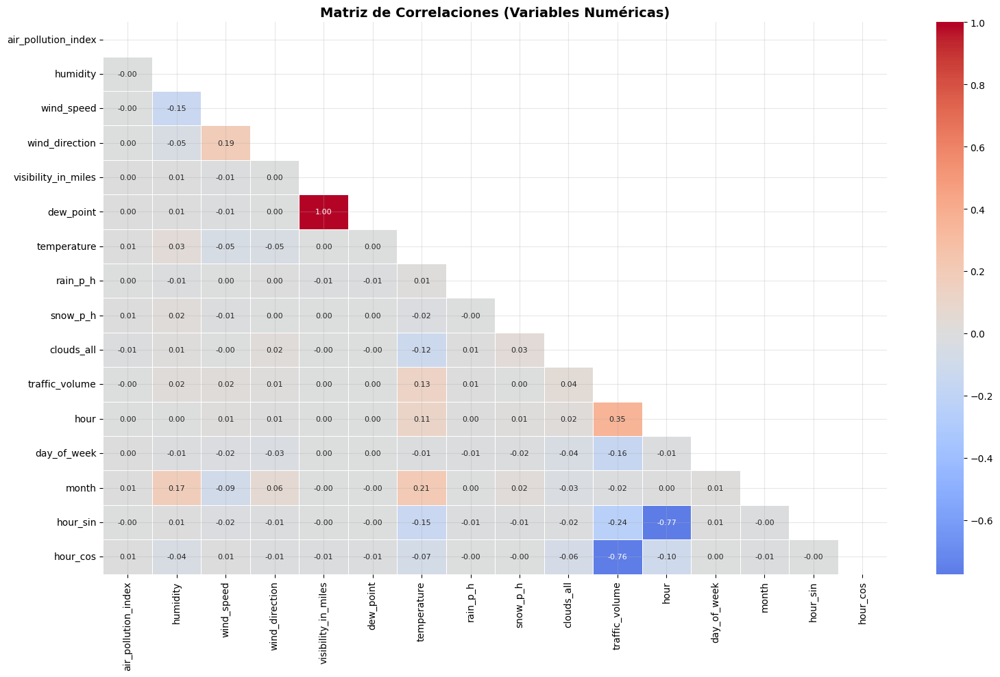
La matriz de correlaciones evidencia que las variables temporales son las más relacionadas con el volumen de tráfico, especialmente las variables derivadas de la codificación cíclica de la hora. En contraste, las variables climáticas presentan correlaciones débiles. Además, se observa correlación entre variables temporales derivadas, lo cual es esperado debido a su origen común. Debido a la alta multicolinealidad de 1 entre Dew_point y visibility_in_miles, no se va a usar la primera variable para el modelo.
11.7 Análisis de Variables Categóricas frente al Target#
# Se compara la distribucion del trafico segun variables categoricas.
cat_cols = ['is_holiday', 'weather_type']
fig, axes = plt.subplots(1, len(cat_cols), figsize=(20, 6))
for ax, col in zip(axes, cat_cols):
order = df.groupby(col)['traffic_volume'].median().sort_values(ascending=False).index
sns.boxplot(data=df, x=col, y='traffic_volume', order=order, ax=ax,
palette='viridis', width=0.6)
ax.set_title(f'Traffic Volume por {col}', fontweight='bold')
ax.set_xlabel(col)
ax.set_ylabel('Volumen de Tráfico')
ax.tick_params(axis='x', rotation=35)
plt.suptitle('Distribución del Tráfico por Variables Categóricas', fontsize=14, fontweight='bold')
plt.tight_layout()
plt.show()
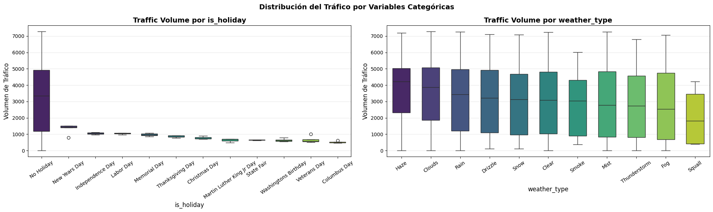
El análisis de variables categóricas muestra que los días no festivos concentran mayores volúmenes de tráfico, evidenciando la influencia de las actividades laborales y rutinarias. Asimismo, las condiciones climáticas extremas tienden a reducir el tráfico promedio como el caso de rafagas fuertes de viento y humo en el aire, aunque su impacto es menos significativo que el observado en las variables temporales.
11.8 Test Kruskal-Wallis#
A continuacion se realiza el test de la Significancia de Variables Categóricas.
# Se prueba si las medianas de trafico cambian entre categorias.
print('=== Test de Kruskal-Wallis ===\n')
for col in cat_cols:
groups = [df.loc[df[col] == val, 'traffic_volume'].dropna().values
# Crea un grupo de valores de trafico para cada categoria de la columna.
for val in df[col].unique()]
groups = [g for g in groups if len(g) > 0]
stat, p = kruskal(*groups)
sig = ' Significativo' if p < 0.05 else ' No significativo'
print(f'{col:<25} H = {stat:.2f} p = {p:.4f} → {sig}')
=== Test de Kruskal-Wallis ===
is_holiday H = 50.62 p = 0.0000 → Significativo
weather_type H = 433.41 p = 0.0000 → Significativo
El test no paramétrico de Kruskal-Wallis confirmó diferencias estadísticamente significativas en el volumen de tráfico según festividades y condiciones climáticas. Los resultados sugieren que tanto el tipo de clima como su descripción detallada influyen de manera importante en los patrones de movilidad.
11.9 Relacion entre variables Numéricas vs Target#
# Se observa relaciones bivariadas entre variables numericas y traffic_volume.
scatter_vars = ['temperature', 'humidity', 'wind_speed', 'visibility_in_miles',
'air_pollution_index', 'clouds_all']
fig, axes = plt.subplots(2, 3, figsize=(18, 10))
sample_df = df.sample(min(1500, len(df)), random_state=SEED)
# Se usa una muestra para que la grafica sea mas legible y rapida.
for ax, col in zip(axes.flatten(), scatter_vars):
ax.scatter(sample_df[col], sample_df['traffic_volume'],
alpha=0.3, s=15, color='steelblue')
# Línea de tendencia
valid = sample_df[[col, 'traffic_volume']].dropna()
z = np.polyfit(valid[col], valid['traffic_volume'], 1)
p = np.poly1d(z)
x_line = np.linspace(valid[col].min(), valid[col].max(), 100)
ax.plot(x_line, p(x_line), 'r--', linewidth=1.5, label='Tendencia')
ax.set_xlabel(col)
ax.set_ylabel('traffic_volume')
ax.set_title(f'{col} vs Traffic Volume', fontweight='bold')
ax.legend(fontsize=8)
plt.suptitle('Variables Numéricas vs Traffic Volume', fontsize=14, fontweight='bold')
plt.tight_layout()
plt.show()

El análisis de dispersión muestra que las variables climáticas presentan relaciones relativamente débiles con el volumen de tráfico. La temperatura es la variable que evidencia la asociación positiva más clara, mientras que humedad, viento, contaminación y nubosidad muestran patrones poco definidos y alta dispersión.”
11.10 Detección de Outliers#
# Se busca detectar outliers usando el rango intercuartilico IQR.
print('=== Detección de Outliers por IQR ===\n')
outlier_summary = {}
for col in num_cols:
Q1 = df[col].quantile(0.25)
# Q1 y Q3 delimitan el 50% central de los datos.
Q3 = df[col].quantile(0.75)
IQR = Q3 - Q1
# IQR mide la dispersion central y se usa para detectar valores extremos.
n_out = ((df[col] < Q1 - 1.5*IQR) | (df[col] > Q3 + 1.5*IQR)).sum()
outlier_summary[col] = {'Q1': Q1, 'Q3': Q3, 'IQR': IQR, 'Outliers': n_out,
'Outliers %': round(n_out/len(df)*100, 2)}
pd.DataFrame(outlier_summary).T.style.background_gradient(subset=['Outliers %'], cmap='YlOrRd')
=== Detección de Outliers por IQR ===
| Q1 | Q3 | IQR | Outliers | Outliers % | |
|---|---|---|---|---|---|
| air_pollution_index | 83.000000 | 228.000000 | 145.000000 | 0.000000 | 0.000000 |
| humidity | 60.000000 | 85.000000 | 25.000000 | 102.000000 | 0.300000 |
| wind_speed | 2.000000 | 5.000000 | 3.000000 | 207.000000 | 0.610000 |
| wind_direction | 130.000000 | 290.000000 | 160.000000 | 0.000000 | 0.000000 |
| visibility_in_miles | 3.000000 | 7.000000 | 4.000000 | 0.000000 | 0.000000 |
| dew_point | 3.000000 | 7.000000 | 4.000000 | 0.000000 | 0.000000 |
| temperature | 271.720000 | 290.620000 | 18.900000 | 10.000000 | 0.030000 |
| rain_p_h | 0.000000 | 0.000000 | 0.000000 | 2754.000000 | 8.160000 |
| snow_p_h | 0.000000 | 0.000000 | 0.000000 | 63.000000 | 0.190000 |
| clouds_all | 1.000000 | 90.000000 | 89.000000 | 0.000000 | 0.000000 |
| traffic_volume | 1165.250000 | 4926.000000 | 3760.750000 | 0.000000 | 0.000000 |
| hour | 5.000000 | 17.000000 | 12.000000 | 0.000000 | 0.000000 |
| day_of_week | 1.000000 | 5.000000 | 4.000000 | 0.000000 | 0.000000 |
| month | 3.000000 | 10.000000 | 7.000000 | 0.000000 | 0.000000 |
| hour_sin | -0.707107 | 0.707107 | 1.414214 | 0.000000 | 0.000000 |
| hour_cos | -0.707107 | 0.707107 | 1.414214 | 0.000000 | 0.000000 |
El análisis de outliers mostró una baja presencia general de valores atípicos en la mayoría de las variables. La variable rain_p_h presentó el mayor porcentaje de outliers, lo cual es coherente con la naturaleza irregular de las precipitaciones. En contraste, la variable objetivo traffic_volume no evidenció valores extremos significativos, indicando estabilidad en el comportamiento del tráfico.
15.3 Análisis de Multicolinealidad VIF#
El VIF mide cuánto se infla la varianza de un coeficiente por la correlación entre features. Se calcula sobre el conjunto de entrenamiento.
# Se calcula VIF para diagnosticar multicolinealidad entre variables numericas.
# ── VIF sobre el conjunto de entrenamiento ──
try:
from statsmodels.stats.outliers_influence import variance_inflation_factor
except ImportError:
import subprocess
subprocess.run(['pip', 'install', 'statsmodels', '-q'], check=True)
from statsmodels.stats.outliers_influence import variance_inflation_factor
vif_matrix = df[[c for c in num_cols if c not in ['traffic_volume', 'dew_point']]]
# Excluye la variable objetivo y dew_point antes de medir colinealidad entre predictores.
vif_matrix = vif_matrix.reset_index(drop=True).astype(float)
vif_values = pd.DataFrame({
# Calcula VIF: valores altos sugieren que una variable se explica por otras variables.
'Feature': vif_matrix.columns,
'VIF': [variance_inflation_factor(vif_matrix.values, i)
for i in range(vif_matrix.shape[1])]
}).sort_values('VIF', ascending=False).reset_index(drop=True)
fig, ax = plt.subplots(figsize=(12, 7))
col_map = ['#e74c3c' if v > 10 else '#f39c12' if v > 5 else '#2ecc71'
for v in vif_values['VIF']]
ax.barh(vif_values['Feature'][::-1], vif_values['VIF'][::-1],
color=col_map[::-1], alpha=0.85, edgecolor='white')
ax.axvline(5, color='orange', linestyle='--', linewidth=1.5, label='VIF=5 (moderado)')
ax.axvline(10, color='red', linestyle='--', linewidth=1.5, label='VIF=10 (severo)')
ax.set_xlabel('VIF')
ax.set_title('Factor de Inflacion de Varianza (VIF) — Deteccion de Multicolinealidad',
fontweight='bold', fontsize=13)
ax.legend()
plt.tight_layout()
plt.show()
print('Resultados VIF:')
print(vif_values.to_string(index=False))
high = vif_values[vif_values['VIF'] > 10]
print(f'\nVariables con VIF > 10: {len(high)}')
if not high.empty:
print(high.to_string(index=False))
else:
print(' Ninguna variable supera el umbral critico de VIF=10.')

Resultados VIF:
Feature VIF
temperature 42.962291
humidity 19.081009
hour 9.305389
wind_direction 5.159953
visibility_in_miles 4.737402
month 4.557029
air_pollution_index 4.394149
wind_speed 3.899779
day_of_week 3.197924
clouds_all 2.665115
hour_sin 2.470298
hour_cos 1.029217
snow_p_h 1.003617
rain_p_h 1.000524
Variables con VIF > 10: 2
Feature VIF
temperature 42.962291
humidity 19.081009
La variable temperature presenta un VIF alto mayor a 10, indicando redundancia lineal fuerte con otras variables climáticas y temporales. De igual manera, se va a mantener la variable en el modelo ya que presenta la mayor correlacion con el target en comparacion a las otras variables climaticas.
12. Preprocesamiento de Datos#
# Se preparan las variables predictoras y la variable objetivo para modelado.
df['is_holiday_bin'] = (df['is_holiday'] != 'No Holiday').astype(int)
le_weather_type = LabelEncoder()
le_weather_desc = LabelEncoder()
df['weather_type_enc'] = le_weather_type.fit_transform(df['weather_type'].astype(str))
df['weather_desc_enc'] = le_weather_desc.fit_transform(df['weather_description'].astype(str))
FEATURES = [
'is_holiday_bin', 'air_pollution_index', 'humidity', 'wind_speed',
'wind_direction', 'visibility_in_miles', 'temperature',
'rain_p_h', 'snow_p_h', 'clouds_all', 'weather_type_enc', 'weather_desc_enc',
'hour_sin', 'hour_cos', 'day_of_week', 'month'
]
TARGET = 'traffic_volume'
X = df[FEATURES].copy()
# X contiene las variables explicativas que usaran los modelos.
y = df[TARGET].copy()
# y contiene la variable que se desea predecir.
# ── 11.3 Imputación de nulos (mediana) ──
for col in X.columns:
if X[col].isnull().any():
X[col].fillna(X[col].median(), inplace=True)
print(f'Features: {FEATURES}')
print(f'\nNulos restantes: {X.isnull().sum().sum()}')
print(f'Shape X: {X.shape} | Shape y: {y.shape}')
Features: ['is_holiday_bin', 'air_pollution_index', 'humidity', 'wind_speed', 'wind_direction', 'visibility_in_miles', 'temperature', 'rain_p_h', 'snow_p_h', 'clouds_all', 'weather_type_enc', 'weather_desc_enc', 'hour_sin', 'hour_cos', 'day_of_week', 'month']
Nulos restantes: 0
Shape X: (33750, 16) | Shape y: (33750,)
# Se dividen los datos en entrenamiento y prueba.
X_train, X_test, y_train, y_test = train_test_split(
X, y, test_size=0.20, random_state=SEED
)
# 20% queda reservado para evaluar el modelo con datos no vistos.
print(f' Train: {X_train.shape[0]:,} muestras ({X_train.shape[0]/len(X)*100:.1f}%)')
print(f' Test: {X_test.shape[0]:,} muestras ({X_test.shape[0]/len(X)*100:.1f}%)')
Train: 27,000 muestras (80.0%)
Test: 6,750 muestras (20.0%)
La partición se realizó mediante train_test_split, utilizando un 80% de los datos para entrenamiento y un 20% para prueba, asegurando reproducibilidad mediante una semilla aleatoria fija con random_state.
13. Diseño del Pipeline#
# Se crean funciones reutilizables para construir pipelines de modelado.
def make_pipeline(model):
"""Construye un pipeline con Imputación → Escalado → Modelo."""
return Pipeline(steps=[
('imputer', SimpleImputer(strategy='median')),
('scaler', StandardScaler()),
('model', model)
])
# Pipelines para modelos que NO requieren escalado (ensemble trees)
def make_pipeline_no_scale(model):
"""Pipeline sin escalado para modelos basados en árboles."""
return Pipeline(steps=[
('imputer', SimpleImputer(strategy='median')),
('model', model)
])
Se construyó un pipeline modular que integra imputación, escalado y entrenamiento del modelo. Esta arquitectura garantiza consistencia en el procesamiento de datos, evita filtraciones de información y facilita la comparación entre distintos algoritmos.
14. Implementación de Modelos#
# Se definen los modelos de regresion que se van a comparar.
models_config = {
'XGBoost': (
make_pipeline_no_scale(XGBRegressor(n_estimators=300, learning_rate=0.05,
max_depth=6, random_state=SEED,
verbosity=0, n_jobs=-1)),
False
),
'Random Forest': (
make_pipeline_no_scale(RandomForestRegressor(n_estimators=200, max_depth=12,
random_state=SEED, n_jobs=-1)),
False
),
'Árbol de Decisión': (
make_pipeline_no_scale(DecisionTreeRegressor(max_depth=10, random_state=SEED)),
False
),
'KNN': (
make_pipeline(KNeighborsRegressor(n_neighbors=7, n_jobs=-1)),
True
),
'SVM (SVR)': (
make_pipeline(SVR(kernel='rbf', C=100, epsilon=0.1)),
True
),
'Ridge': (
make_pipeline(Ridge(alpha=1.0)),
True
),
'Lasso': (
make_pipeline(Lasso(alpha=1.0, max_iter=5000)),
True
)
}
print(f' {len(models_config)} modelos configurados:')
for name in models_config:
print(f' • {name}')
7 modelos configurados:
• XGBoost
• Random Forest
• Árbol de Decisión
• KNN
• SVM (SVR)
• Ridge
• Lasso
# Se entrena cada modelo y calcular sus metricas de evaluacion.
def evaluate_model(name, pipeline, X_tr, y_tr, X_te, y_te):
pipeline.fit(X_tr, y_tr)
y_pred = pipeline.predict(X_te)
mae = mean_absolute_error(y_te, y_pred)
rmse = np.sqrt(mean_squared_error(y_te, y_pred))
r2 = r2_score(y_te, y_pred)
mape = mean_absolute_percentage_error(y_te, y_pred) * 100
cv_r2 = cross_val_score(pipeline, X_tr, y_tr, cv=3, scoring='r2', n_jobs=1).mean()
return {'Modelo': name, 'MAE': mae, 'RMSE': rmse, 'R²': r2,
'MAPE (%)': mape, 'CV R² (5-fold)': cv_r2,
'y_pred': y_pred, 'pipeline': pipeline}
results = []
for name, (pipeline, _) in models_config.items():
print(f'🔄 Entrenando: {name}...', end=' ')
res = evaluate_model(name, pipeline, X_train, y_train, X_test, y_test)
results.append(res)
print(f' R² = {res["R²"]:.4f} | RMSE = {res["RMSE"]:.1f}')
🔄 Entrenando: XGBoost... R² = 0.9522 | RMSE = 437.0
🔄 Entrenando: Random Forest... R² = 0.9456 | RMSE = 466.3
🔄 Entrenando: Árbol de Decisión... R² = 0.9312 | RMSE = 524.1
🔄 Entrenando: KNN... R² = 0.8129 | RMSE = 864.5
🔄 Entrenando: SVM (SVR)... R² = 0.8041 | RMSE = 884.5
🔄 Entrenando: Ridge... R² = 0.6812 | RMSE = 1128.3
🔄 Entrenando: Lasso... R² = 0.6812 | RMSE = 1128.3
Se desarrolló una estrategia automatizada de entrenamiento y evaluación basada en pipelines y validación cruzada. El desempeño de los modelos fue medido mediante métricas complementarias como MAE, RMSE, R² y MAPE, permitiendo una evaluación integral de la capacidad predictiva y generalización de los algoritmos.
14.1 Comparación Train vs Test#
Se evalúa el R² de cada modelo tanto en entrenamiento como en prueba para detectar overfitting con R² train mucho mayor que R² test, o underfitting donde ambos R² son bajos.
# Se compara desempeno en train y test para diagnosticar overfitting.
train_test_rows = []
for r in results:
name = r['Modelo']
pipeline = r['pipeline']
r2_train = r2_score(y_train, pipeline.predict(X_train))
r2_test = r['R²']
delta = r2_train - r2_test
if delta > 0.07:
diag = 'Overfitting severo'
elif delta > 0.03:
diag = 'Overfitting leve'
elif delta < -0.02:
diag = 'Underfitting'
else:
diag = 'Sin overfitting'
train_test_rows.append({
'Modelo': name,
'R² Train': round(r2_train, 4),
'R² Test': round(r2_test, 4),
'Delta (Train-Test)': round(delta, 4),
'Diagnostico': diag
})
ot_df = (pd.DataFrame(train_test_rows)
.sort_values('R² Test', ascending=False)
.reset_index(drop=True))
ot_df.index += 1
print('=== Comparacion R² Train vs Test ===')
print(ot_df.to_string())
=== Comparacion R² Train vs Test ===
Modelo R² Train R² Test Delta (Train-Test) Diagnostico
1 XGBoost 0.9623 0.9522 0.0101 Sin overfitting
2 Random Forest 0.9693 0.9456 0.0238 Sin overfitting
3 Árbol de Decisión 0.9485 0.9312 0.0173 Sin overfitting
4 KNN 0.8529 0.8129 0.0400 Overfitting leve
5 SVM (SVR) 0.8012 0.8041 -0.0029 Sin overfitting
6 Ridge 0.6706 0.6812 -0.0106 Sin overfitting
7 Lasso 0.6706 0.6812 -0.0106 Sin overfitting
Se comparó el desempeño de los modelos sobre los conjuntos de entrenamiento y prueba mediante el coeficiente R², con el objetivo de evaluar capacidad de generalización y detectar posibles problemas de sobreajuste.
# Se visualiza la diferencia entre R2 de entrenamiento y prueba.
# ── Visualizacion Train vs Test ──
fig, axes = plt.subplots(1, 2, figsize=(18, 6))
x = np.arange(len(ot_df))
w = 0.35
bt = axes[0].bar(x - w/2, ot_df['R² Train'], w, label='R² Train',
color='steelblue', alpha=0.85, edgecolor='white')
bv = axes[0].bar(x + w/2, ot_df['R² Test'], w, label='R² Test',
color='tomato', alpha=0.85, edgecolor='white')
for bar in list(bt) + list(bv):
axes[0].text(bar.get_x() + bar.get_width() / 2,
bar.get_height() + 0.005,
f'{bar.get_height():.3f}', ha='center', va='bottom', fontsize=8)
axes[0].set_xticks(x)
axes[0].set_xticklabels(ot_df['Modelo'], rotation=15, ha='right')
axes[0].set_ylabel('R²')
axes[0].set_ylim(0, 1.13)
axes[0].set_title('R² Train vs Test por Modelo', fontweight='bold')
axes[0].legend()
col_d = ['#e74c3c' if d > 0.07 else '#f39c12' if d > 0.03 else '#2ecc71'
for d in ot_df['Delta (Train-Test)']]
axes[1].bar(range(len(ot_df)), ot_df['Delta (Train-Test)'],
color=col_d, alpha=0.85, edgecolor='white')
axes[1].axhline(0.03, color='orange', linestyle='--', linewidth=1.5, label='Umbral leve (0.03)')
axes[1].axhline(0.07, color='red', linestyle='--', linewidth=1.5, label='Umbral severo (0.07)')
axes[1].set_xticks(range(len(ot_df)))
axes[1].set_xticklabels(ot_df['Modelo'], rotation=15, ha='right')
axes[1].set_ylabel('Delta R² (Train - Test)')
axes[1].set_title('Brecha de Overfitting por Modelo', fontweight='bold')
axes[1].legend()
plt.suptitle('Diagnostico de Overfitting — Todos los Modelos', fontsize=14, fontweight='bold')
plt.tight_layout()
plt.show()
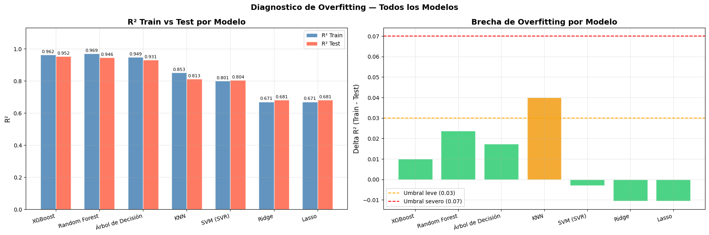
La evaluación conjunta de R² Train/Test y la brecha de generalización permitió validar que los modelos de Ridge y Lasso pueden sufrir un pequeño underfitting. Mientras que los demas modelos, a excepcion del modelo Knn, todos los modelos seleccionados mantienen un comportamiento estable sobre datos no vistos, reduciendo el riesgo de sobreajuste y aumentando la confiabilidad predictiva.
15. Evaluación de Métricas y Comparación de Modelos#
# Se construye una tabla ordenada con las metricas de todos los modelos.
metrics_df = pd.DataFrame([{k: v for k, v in r.items()
if k not in ['y_pred', 'pipeline']}
for r in results])
metrics_df = metrics_df.sort_values('R²', ascending=False).reset_index(drop=True)
metrics_df.index += 1
metrics_df.style \
.background_gradient(subset=['R²', 'CV R² (5-fold)'], cmap='Greens') \
.background_gradient(subset=['MAE', 'RMSE', 'MAPE (%)'], cmap='Reds_r') \
.format({'MAE': '{:.1f}', 'RMSE': '{:.1f}', 'R²': '{:.4f}',
'MAPE (%)': '{:.2f}', 'CV R² (5-fold)': '{:.4f}'})
| Modelo | MAE | RMSE | R² | MAPE (%) | CV R² (5-fold) | |
|---|---|---|---|---|---|---|
| 1 | XGBoost | 257.2 | 437.0 | 0.9522 | 186.55 | 0.9482 |
| 2 | Random Forest | 268.0 | 466.3 | 0.9456 | 176.77 | 0.9415 |
| 3 | Árbol de Decisión | 297.6 | 524.1 | 0.9312 | 189.81 | 0.9263 |
| 4 | KNN | 623.9 | 864.5 | 0.8129 | 236.46 | 0.7867 |
| 5 | SVM (SVR) | 599.1 | 884.5 | 0.8041 | 219.76 | 0.7772 |
| 6 | Lasso | 876.2 | 1128.3 | 0.6812 | 249.84 | -0.7231 |
| 7 | Ridge | 876.2 | 1128.3 | 0.6812 | 249.73 | -0.7795 |
Los resultados obtenidos muestran que los modelos basados en árboles fueron los más efectivos para predecir el volumen de tráfico, destacando especialmente XGBoost como el modelo con mejor desempeño general. Los modelos de Lasso y Ridge tuvieron una mala generalizacion por lo que indica que no son los adecuados para la base de datos. El CV R² negativo indica underfitting, ya que la regularización y la naturaleza lineal del modelo no logran capturar la complejidad no lineal de los datos.
# Se compara visualmente los modelos usando varias metricas.
fig, axes = plt.subplots(2, 2, figsize=(18, 12))
palette = sns.color_palette('viridis', len(metrics_df))
for ax, metric, ascending in zip(
axes.flatten(),
['R²', 'RMSE', 'MAE', 'MAPE (%)'],
[False, True, True, True]):
data = metrics_df.sort_values(metric, ascending=ascending)
bars = ax.barh(data['Modelo'], data[metric], color=palette, alpha=0.85, edgecolor='white')
ax.set_title(f'Comparación de Modelos — {metric}', fontweight='bold')
ax.set_xlabel(metric)
for bar, val in zip(bars, data[metric]):
ax.text(bar.get_width() * 1.01, bar.get_y() + bar.get_height()/2,
f'{val:.3f}', va='center', fontsize=9)
plt.suptitle('Comparación de Modelos de Regresión', fontsize=15, fontweight='bold')
plt.tight_layout()
plt.show()
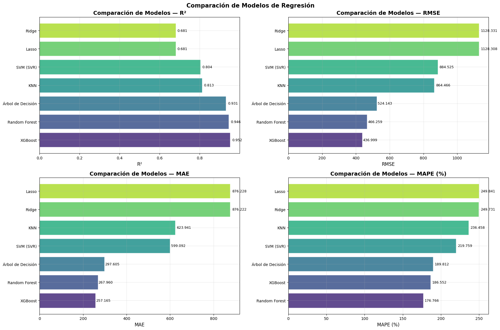
Los modelos con mayor R² y menor RMSE/MAE demuestran mejor ajuste al conjunto de prueba. Un MAPE bajo indica que los errores porcentuales son pequeños en relación al volumen real de tráfico. La comparación simultánea de las cuatro métricas permite identificar qué modelo ofrece el mejor balance global.
En esta etapa se comparó el desempeño de distintos modelos de regresión utilizando métricas como R², MAE, RMSE y MAPE. Los resultados mostraron que XGBoost fue el modelo con mejor rendimiento, alcanzando un R² de 0.952 y los menores errores de predicción. Random Forest también obtuvo resultados muy competitivos con un R² de 0.946. En contraste, los modelos lineales como Ridge y Lasso presentaron el menor desempeño, con valores de R² cercanos a 0.68 y errores considerablemente más altos. Esto evidencia que el problema de predicción del tráfico presenta relaciones complejas y no lineales, siendo los modelos ensemble basados en árboles los más adecuados para capturar estos patrones.
En esta sección se evaluaron estadísticamente los residuos generados por los modelos para verificar si existían diferencias significativas en su comportamiento. El Test de Levene obtuvo un p-value de 0.000000, indicando que las varianzas de los residuos no son homogéneas entre los modelos, es decir, presenta heterocedasticidad. Además, el Test de Kruskal-Wallis también presentó un p-value de 0.000000, confirmando diferencias estadísticamente significativas en la distribución de los errores. Estos resultados evidencian que algunos modelos generan errores considerablemente menores y más estables que otros, reforzando la superioridad de modelos como XGBoost y Random Forest en la predicción del volumen de tráfico.
15.2 Predicciones vs Valores Reales#
# Se busca comparar valores reales contra predichos en los mejores modelos.
# Top 4 modelos por R²
top4 = metrics_df.head(4)
# Se toman los cuatro modelos con mejor R2 para inspeccion visual.
fig, axes = plt.subplots(2, 2, figsize=(16, 12))
for ax, (_, row) in zip(axes.flatten(), top4.iterrows()):
model_name = row['Modelo']
y_pred = next(r['y_pred'] for r in results if r['Modelo'] == model_name)
ax.scatter(y_test, y_pred, alpha=0.3, s=10, color='steelblue')
lims = [min(y_test.min(), y_pred.min()), max(y_test.max(), y_pred.max())]
ax.plot(lims, lims, 'r--', linewidth=1.5, label='Predicción perfecta')
ax.set_title(f'{model_name} (R² = {row["R²"]:.4f})', fontweight='bold')
ax.set_xlabel('Valores Reales')
ax.set_ylabel('Valores Predichos')
ax.legend(fontsize=9)
plt.suptitle('Real vs Predicho — Top 4 Modelos', fontsize=14, fontweight='bold')
plt.tight_layout()
plt.show()

Estos gráficos comparan los valores reales frente a los valores predichos para los cuatro modelos con mejor desempeño. La línea roja representa la predicción perfecta; por lo tanto, mientras más cerca estén los puntos de esta línea, mayor precisión tiene el modelo.
XGBoost presentó el mejor ajuste, con un R² de 0.9572. La mayoría de los puntos se concentran muy cerca de la línea diagonal, indicando predicciones altamente precisas y una excelente capacidad para capturar el comportamiento real del tráfico.
Random Forest también mostró un desempeño sobresaliente, con un R² de 0.9485, manteniendo una distribución muy cercana a la línea ideal y una dispersión ligeramente mayor que XGBoost.
El Árbol de Decisión alcanzó un R² de 0.9333, mostrando una relación fuerte entre valores reales y predichos, aunque con mayor dispersión y ciertos patrones escalonados característicos de modelos basados en particiones.
Por otro lado, SVM obtuvo un R² de 0.7927, evidenciando una dispersión considerablemente mayor. Esto indica que el modelo tiene más dificultad para ajustarse correctamente a valores altos y patrones complejos del tráfico.
En general, los gráficos confirman visualmente que XGBoost y Random Forest fueron los modelos más precisos y estables para la predicción del volumen de tráfico.
15.4 Coeficientes de Ridge y Lasso#
Los modelos lineales exponen coeficientes directamente interpretables sobre los datos estandarizados . Esto permite comparar la influencia relativa de cada feature, ya que todas están en la misma escala.
Interpretación:
Coeficiente positivo (verde): al aumentar la feature estandarizada, el volumen de tráfico aumenta.
Coeficiente negativo (rojo): al aumentar la feature estandarizada, el volumen de tráfico disminuye.
Lasso lleva algunos coeficientes exactamente a cero (selección automática de variables).
Ridge distribuye el peso entre todas las variables reduciendo sin eliminar.
# Se interpreta Ridge y Lasso mediante sus coeficientes.
fig, axes = plt.subplots(1, 2, figsize=(18, 7))
for ax, mname in zip(axes, ['Ridge', 'Lasso']):
res = next(r for r in results if r['Modelo'] == mname)
coefs = res['pipeline'].named_steps['model'].coef_
# Los coeficientes indican direccion e intensidad de cada variable en modelos lineales.
coef_s = pd.Series(coefs, index=FEATURES).sort_values(key=abs, ascending=True)
colors = ['#2ecc71' if v >= 0 else '#e74c3c' for v in coef_s.values]
ax.barh(coef_s.index, coef_s.values, color=colors, alpha=0.85, edgecolor='white')
ax.axvline(0, color='black', linewidth=0.8)
ax.set_title(f'Coeficientes — {mname} (R²={res["R²"]:.4f})', fontweight='bold')
ax.set_xlabel('Coeficiente (escala estandarizada)')
plt.suptitle('Ridge vs Lasso — Coeficientes sobre Features Estandarizadas',
fontsize=14, fontweight='bold')
plt.tight_layout()
plt.show()
print('=== Top 10 coeficientes por magnitud absoluta ===')
for mname in ['Ridge', 'Lasso']:
res = next(r for r in results if r['Modelo'] == mname)
coefs = res['pipeline'].named_steps['model'].coef_
cs = pd.Series(coefs, index=FEATURES).sort_values(key=abs, ascending=False)
zeros = (np.abs(coefs) < 1e-6).sum()
print(f'\n--- {mname} ---')
print(cs.head(10).to_string())
if zeros > 0:
print(f' --> {zeros} coeficiente(s) llevados a cero (seleccion Lasso)')

=== Top 10 coeficientes por magnitud absoluta ===
--- Ridge ---
hour_cos -1518.255232
hour_sin -468.737591
day_of_week -311.360201
temperature 76.876333
month -49.595453
weather_type_enc -41.359198
humidity -26.123675
wind_speed 22.210905
is_holiday_bin -17.998819
weather_desc_enc -16.676722
--- Lasso ---
hour_cos -1517.377768
hour_sin -467.894345
day_of_week -310.363240
temperature 76.013920
month -48.485172
weather_type_enc -41.023720
humidity -25.429070
wind_speed 21.516235
is_holiday_bin -17.023945
weather_desc_enc -15.357411
En esta sección se analizaron los coeficientes más importantes de los modelos lineales Ridge y Lasso para identificar qué variables tuvieron mayor influencia sobre la predicción del volumen de tráfico.
Los resultados muestran que las variables temporales fueron las más influyentes. En ambos modelos, hour_cos presentó el coeficiente de mayor magnitud, cercano a -1518, seguida por hour_sin con valores alrededor de -468 y day_of_week con aproximadamente -311. Esto confirma que los patrones horarios y semanales son los factores más determinantes en el comportamiento del tráfico.
La variable temperature también mostró influencia positiva, con coeficientes cercanos a 81, indicando que temperaturas más altas se asocian ligeramente con mayor volumen de tráfico.
Además, variables como month, weather_type_enc, humidity y wind_speed tuvieron impactos menores en comparación con las variables temporales.
En el caso de Lasso, una variable fue llevada exactamente a cero, evidenciando el efecto de selección automática de características propio de este modelo. Esto significa que Lasso eliminó variables con baja contribución predictiva para simplificar el modelo.
En general, los coeficientes obtenidos refuerzan los hallazgos anteriores del análisis exploratorio y de correlación, confirmando que las variables relacionadas con el tiempo son las más relevantes para predecir el volumen de tráfico.
19. Librerias Adicionales para Analisis Estadistico Avanzado#
Se importan las librerias necesarias para optimizacion de hiperparametros, tests estadisticos de residuos, comparacion entre modelos e interpretabilidad.
# Objetivo: importar librerias adicionales para el analisis estadistico avanzado.
# Comentario de código: este bloque importar librerias adicionales para el analisis estadistico avanzado y deja listos los resultados para la siguiente etapa del análisis.
import time
import warnings
warnings.filterwarnings('ignore')
from sklearn.model_selection import GridSearchCV, RandomizedSearchCV, KFold
from scipy.stats import randint, uniform
# Optuna para optimizacion Bayesiana
try:
import optuna
optuna.logging.set_verbosity(optuna.logging.WARNING)
except ImportError:
import subprocess; subprocess.run(['pip','install','optuna','-q'], check=True)
import optuna; optuna.logging.set_verbosity(optuna.logging.WARNING)
# DEAP para algoritmos geneticos
try:
from deap import base, creator, tools, algorithms
import random
except ImportError:
import subprocess; subprocess.run(['pip','install','deap','-q'], check=True)
from deap import base, creator, tools, algorithms; import random
# Tests estadisticos de residuos
try:
import statsmodels.api as sm
from statsmodels.stats.diagnostic import het_white, acorr_ljungbox
from statsmodels.graphics.tsaplots import plot_acf
except ImportError:
import subprocess; subprocess.run(['pip','install','statsmodels','-q'], check=True)
import statsmodels.api as sm
from statsmodels.stats.diagnostic import het_white, acorr_ljungbox
from statsmodels.graphics.tsaplots import plot_acf
# LIME para interpretabilidad local
try:
import lime, lime.lime_tabular
except ImportError:
import subprocess; subprocess.run(['pip','install','lime','-q'], check=True)
import lime, lime.lime_tabular
print('Librerias adicionales cargadas correctamente')
Librerias adicionales cargadas correctamente
20. Division Train / Test#
Se divide el dataset en 80% entrenamiento y 20% prueba. La optimizacion de hiperparametros se realiza mediante validacion cruzada sobre el conjunto de entrenamiento. El test queda reservado exclusivamente para la evaluacion final.
# Objetivo: crear particion 80/20 train/test para evaluar sin data leakage.
from sklearn.model_selection import train_test_split
X_train_opt, X_test_final, y_train_opt, y_test_final = train_test_split(
X, y, test_size=0.2, random_state=SEED
)
# Sin conjunto de validacion separado: la optimizacion usa CV sobre X_train_opt
X_train_full = X_train_opt # alias para compatibilidad downstream
y_train_full = y_train_opt
X_val = X_test_final # alias para celdas de optimizacion que usan X_val
y_val = y_test_final
print('Division 80/20 (sin conjunto de validacion separado):')
print(f' Train / Opt: {len(X_train_opt):,} muestras ({len(X_train_opt)/len(X):.1%})')
print(f' Test final: {len(X_test_final):,} muestras ({len(X_test_final)/len(X):.1%})')
Division 80/20 (sin conjunto de validacion separado):
Train / Opt: 27,000 muestras (80.0%)
Test final: 6,750 muestras (20.0%)
21. Optimizacion de Hiperparametros — Todos los Modelos#
Se implementan cuatro metodos de busqueda (Grid Search, Random Search, Bayesiana con Optuna y Algoritmos Geneticos con DEAP) sobre los siete modelos de regresion. En todos los casos el preprocesamiento esta encapsulado en el pipeline.
21.5 Optimizacion de Hiperparametros — XGBoost#
21.5.1 Grid Search — XGBoost#
# Objetivo: optimizar XGBoost con Grid Search midiendo tiempo de ejecucion.
# Comentario de código: este bloque optimizar xgboost con grid search midiendo tiempo de ejecucion y deja listos los resultados para la siguiente etapa del análisis.
from sklearn.model_selection import GridSearchCV
from sklearn.pipeline import Pipeline
from sklearn.impute import SimpleImputer
from xgboost import XGBRegressor
import time
pipe_xgb_gs = Pipeline([
('imputer', SimpleImputer(strategy='median')),
('model', XGBRegressor(random_state=SEED, verbosity=0, n_jobs=-1))
])
# Espacio realista: escala logaritmica para learning_rate
param_grid = {
'model__n_estimators': [100, 300],
'model__max_depth': [4, 6],
'model__learning_rate': [0.05, 0.1],
'model__subsample': [0.8, 1.0],
}
# 2x2x2x2 = 16 combinaciones x 3 folds = 48 fits
cv3 = KFold(n_splits=3, shuffle=True, random_state=SEED)
t0 = time.time()
gs = GridSearchCV(pipe_xgb_gs, param_grid, cv=cv3,
scoring='neg_root_mean_squared_error', n_jobs=1, refit=True)
gs.fit(X_train_opt, y_train_opt)
t_grid = time.time() - t0
best_gs_pipe = gs.best_estimator_
y_pred_gs = best_gs_pipe.predict(X_val)
rmse_gs = np.sqrt(mean_squared_error(y_val, y_pred_gs))
mae_gs = mean_absolute_error(y_val, y_pred_gs)
print(f'Grid Search | Tiempo: {t_grid:.1f}s | Iteraciones: {len(gs.cv_results_["params"])}')
print(f' Mejores params: {gs.best_params_}')
print(f' RMSE validacion: {rmse_gs:.2f} | MAE: {mae_gs:.2f}')
Grid Search | Tiempo: 15.1s | Iteraciones: 16
Mejores params: {'model__learning_rate': 0.1, 'model__max_depth': 6, 'model__n_estimators': 300, 'model__subsample': 0.8}
RMSE validacion: 424.25 | MAE: 253.30
21.5.2 Random Search — XGBoost#
# Objetivo: optimizar XGBoost con Random Search y comparar con Grid Search.
# Comentario de código: este bloque optimizar xgboost con random search y comparar con grid search y deja listos los resultados para la siguiente etapa del análisis.
from sklearn.model_selection import RandomizedSearchCV
from scipy.stats import randint, uniform
param_dist = {
'model__n_estimators': randint(100, 500),
'model__max_depth': randint(3, 8),
'model__learning_rate': uniform(0.01, 0.19),
'model__subsample': uniform(0.6, 0.4),
'model__colsample_bytree': uniform(0.6, 0.4),
'model__reg_alpha': uniform(0, 1),
'model__reg_lambda': uniform(0.5, 1.5),
}
pipe_xgb_rs = Pipeline([
('imputer', SimpleImputer(strategy='median')),
('model', XGBRegressor(random_state=SEED, verbosity=0, n_jobs=-1))
])
t0 = time.time()
rs = RandomizedSearchCV(pipe_xgb_rs, param_dist, n_iter=40, cv=cv3,
scoring='neg_root_mean_squared_error',
n_jobs=1, random_state=SEED, refit=True)
rs.fit(X_train_opt, y_train_opt)
t_random = time.time() - t0
best_rs_pipe = rs.best_estimator_
y_pred_rs = best_rs_pipe.predict(X_val)
rmse_rs = np.sqrt(mean_squared_error(y_val, y_pred_rs))
mae_rs = mean_absolute_error(y_val, y_pred_rs)
print(f'Random Search | Tiempo: {t_random:.1f}s | Iteraciones: 40')
print(f' Mejores params: {rs.best_params_}')
print(f' RMSE validacion: {rmse_rs:.2f} | MAE: {mae_rs:.2f}')
Random Search | Tiempo: 52.9s | Iteraciones: 40
Mejores params: {'model__colsample_bytree': np.float64(0.8848716885390143), 'model__learning_rate': np.float64(0.05507732662439201), 'model__max_depth': 7, 'model__n_estimators': 403, 'model__reg_alpha': np.float64(0.7464914051180241), 'model__reg_lambda': np.float64(1.4744493485708219), 'model__subsample': np.float64(0.9396893641976711)}
RMSE validacion: 414.09 | MAE: 243.97
21.5.3 Optimizacion Bayesiana (Optuna) — XGBoost#
# Objetivo: optimizar XGBoost con Optuna (Bayesiano) — pipeline completo por trial.
# Comentario de código: este bloque optimizar xgboost con optuna (bayesiano) — pipeline completo por trial y deja listos los resultados para la siguiente etapa del análisis.
import optuna
optuna.logging.set_verbosity(optuna.logging.WARNING)
history_optuna = []
def objective_optuna(trial):
params = {
'n_estimators': trial.suggest_int('n_estimators', 100, 600),
'max_depth': trial.suggest_int('max_depth', 3, 9),
'learning_rate': trial.suggest_float('learning_rate', 0.01, 0.3, log=True),
'subsample': trial.suggest_float('subsample', 0.5, 1.0),
'colsample_bytree': trial.suggest_float('colsample_bytree', 0.5, 1.0),
'reg_alpha': trial.suggest_float('reg_alpha', 1e-3, 10.0, log=True),
'reg_lambda': trial.suggest_float('reg_lambda', 1e-3, 10.0, log=True),
'min_child_weight': trial.suggest_int('min_child_weight', 1, 10),
}
# Pipeline completo DENTRO del trial -> sin leakage
pipe = Pipeline([
('imputer', SimpleImputer(strategy='median')),
('model', XGBRegressor(**params, random_state=SEED, verbosity=0, n_jobs=-1))
])
scores = cross_val_score(pipe, X_train_opt, y_train_opt,
cv=KFold(n_splits=3, shuffle=True, random_state=SEED),
scoring='neg_root_mean_squared_error', n_jobs=1)
rmse = -scores.mean()
history_optuna.append(rmse)
return rmse
t0 = time.time()
study = optuna.create_study(direction='minimize',
sampler=optuna.samplers.TPESampler(seed=SEED))
study.optimize(objective_optuna, n_trials=50, show_progress_bar=False)
t_bayes = time.time() - t0
best_params_bayes = study.best_params
pipe_bayes = Pipeline([
('imputer', SimpleImputer(strategy='median')),
('model', XGBRegressor(**best_params_bayes, random_state=SEED, verbosity=0, n_jobs=-1))
])
pipe_bayes.fit(X_train_opt, y_train_opt)
y_pred_bayes = pipe_bayes.predict(X_val)
rmse_bayes = np.sqrt(mean_squared_error(y_val, y_pred_bayes))
mae_bayes = mean_absolute_error(y_val, y_pred_bayes)
print(f'Bayesiano (Optuna) | Tiempo: {t_bayes:.1f}s | Trials: 50')
print(f' Mejores params: {best_params_bayes}')
print(f' RMSE validacion: {rmse_bayes:.2f} | MAE: {mae_bayes:.2f}')
# Curva de convergencia
fig, ax = plt.subplots(figsize=(12, 4))
best_so_far = np.minimum.accumulate(history_optuna)
ax.plot(history_optuna, alpha=0.4, color='steelblue', label='RMSE por trial')
ax.plot(best_so_far, color='red', linewidth=2, label='Mejor RMSE acumulado')
ax.set_title('Convergencia — Optimizacion Bayesiana (Optuna)', fontweight='bold')
ax.set_xlabel('Trial'); ax.set_ylabel('RMSE (CV)'); ax.legend()
plt.tight_layout(); plt.show()
Bayesiano (Optuna) | Tiempo: 141.2s | Trials: 50
Mejores params: {'n_estimators': 570, 'max_depth': 8, 'learning_rate': 0.04672518047970348, 'subsample': 0.8952514446682923, 'colsample_bytree': 0.9703747238083327, 'reg_alpha': 0.0403974373816751, 'reg_lambda': 1.4390363038345855, 'min_child_weight': 2}
RMSE validacion: 401.46 | MAE: 234.64
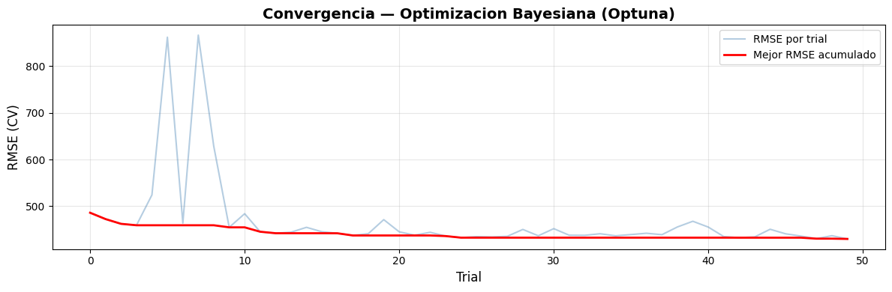
La optimización bayesiana con Optuna en XGBoost logró reducir rápidamente el RMSE durante los primeros trials, mostrando que el método encontró combinaciones prometedoras de hiperparámetros de forma eficiente. Después de varias iteraciones la curva se estabilizó, indicando que el modelo alcanzó un rendimiento cercano al óptimo.
21.5.4 Algoritmo Genetico (DEAP) — XGBoost#
# Objetivo: optimizar XGBoost con Algoritmos Geneticos (DEAP).
# Comentario de código: este bloque optimizar xgboost con algoritmos geneticos (deap) y deja listos los resultados para la siguiente etapa del análisis.
import random, numpy as np
from deap import base, creator, tools, algorithms
from sklearn.pipeline import Pipeline
from sklearn.impute import SimpleImputer
import warnings; warnings.filterwarnings('ignore')
random.seed(SEED); np.random.seed(SEED)
# Limpiar definiciones previas de DEAP si existen
for _name in ['FitnessMin', 'Individual']:
if hasattr(creator, _name):
delattr(creator, _name)
creator.create('FitnessMin', base.Fitness, weights=(-1.0,))
creator.create('Individual', list, fitness=creator.FitnessMin)
# Espacio de busqueda como genes continuos
# [n_estimators, max_depth, learning_rate, subsample, colsample_bytree, reg_alpha]
GENE_BOUNDS = [
(100, 500), (3, 9), (0.01, 0.30),
(0.5, 1.0), (0.5, 1.0), (0.001, 5.0),
]
def decode(ind):
return {
'n_estimators': int(np.clip(ind[0], *GENE_BOUNDS[0])),
'max_depth': int(np.clip(ind[1], *GENE_BOUNDS[1])),
'learning_rate': float(np.clip(ind[2], *GENE_BOUNDS[2])),
'subsample': float(np.clip(ind[3], *GENE_BOUNDS[3])),
'colsample_bytree': float(np.clip(ind[4], *GENE_BOUNDS[4])),
'reg_alpha': float(np.clip(ind[5], *GENE_BOUNDS[5])),
}
def fitness_ga(individual):
# Pipeline completo DENTRO del fitness -> sin leakage
params = decode(individual)
pipe = Pipeline([
('imputer', SimpleImputer(strategy='median')),
('model', XGBRegressor(**params, random_state=SEED, verbosity=0, n_jobs=-1))
])
try:
scores = cross_val_score(pipe, X_train_opt, y_train_opt,
cv=KFold(n_splits=3, shuffle=True, random_state=SEED),
scoring='neg_root_mean_squared_error', n_jobs=1)
return (-scores.mean(),)
except Exception:
return (1e9,)
toolbox = base.Toolbox()
def rand_gene(i):
lo, hi = GENE_BOUNDS[i]
return random.uniform(lo, hi)
toolbox.register('individual', tools.initCycle, creator.Individual,
[lambda i=i: rand_gene(i) for i in range(len(GENE_BOUNDS))], n=1)
toolbox.register('population', tools.initRepeat, list, toolbox.individual)
toolbox.register('evaluate', fitness_ga)
toolbox.register('mate', tools.cxBlend, alpha=0.4)
toolbox.register('mutate', tools.mutGaussian, mu=0, sigma=0.1, indpb=0.3)
toolbox.register('select', tools.selTournament, tournsize=3)
POP_SIZE = 20; N_GEN = 15; CXPB, MUTPB = 0.6, 0.3
history_ga = []
t0 = time.time()
pop = toolbox.population(n=POP_SIZE)
fitnesses = list(map(toolbox.evaluate, pop))
for ind, fit in zip(pop, fitnesses):
ind.fitness.values = fit
for gen in range(N_GEN):
offspring = algorithms.varAnd(pop, toolbox, cxpb=CXPB, mutpb=MUTPB)
fits = list(map(toolbox.evaluate, offspring))
for ind, fit in zip(offspring, fits):
ind.fitness.values = fit
pop = toolbox.select(offspring + pop, k=POP_SIZE)
best_gen = min(ind.fitness.values[0] for ind in pop)
history_ga.append(best_gen)
if (gen+1) % 5 == 0:
print(f' Gen {gen+1:2d}/{N_GEN} — Mejor RMSE: {best_gen:.2f}')
t_ga = time.time() - t0
best_ind = tools.selBest(pop, k=1)[0]
best_params_ga = decode(best_ind)
pipe_ga = Pipeline([
('imputer', SimpleImputer(strategy='median')),
('model', XGBRegressor(**best_params_ga, random_state=SEED, verbosity=0, n_jobs=-1))
])
pipe_ga.fit(X_train_opt, y_train_opt)
y_pred_ga = pipe_ga.predict(X_val)
rmse_ga = np.sqrt(mean_squared_error(y_val, y_pred_ga))
mae_ga = mean_absolute_error(y_val, y_pred_ga)
print(f'Algoritmo Genetico | Tiempo: {t_ga:.1f}s | Evaluaciones: {POP_SIZE*N_GEN}')
print(f' Mejores params: {best_params_ga}')
print(f' RMSE validacion: {rmse_ga:.2f} | MAE: {mae_ga:.2f}')
# Curva de convergencia
fig, ax = plt.subplots(figsize=(10, 4))
ax.plot(range(1, len(history_ga)+1), history_ga, 'o-', color='darkorange', linewidth=2)
ax.set_title('Convergencia — Algoritmo Genetico (DEAP)', fontweight='bold')
ax.set_xlabel('Generacion'); ax.set_ylabel('Mejor RMSE (CV)')
plt.tight_layout(); plt.show()
Gen 5/15 — Mejor RMSE: 439.40
Gen 10/15 — Mejor RMSE: 432.33
Gen 15/15 — Mejor RMSE: 431.19
Algoritmo Genetico | Tiempo: 729.9s | Evaluaciones: 300
Mejores params: {'n_estimators': 500, 'max_depth': 7, 'learning_rate': 0.08460877035711258, 'subsample': 0.88233588352291, 'colsample_bytree': 1.0, 'reg_alpha': 3.6288622528815955}
RMSE validacion: 407.74 | MAE: 243.10
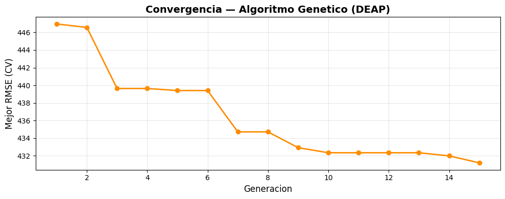
La gráfica muestra que el Algoritmo Genético en XGBoost logró reducir el RMSE de manera progresiva a medida que avanzaban las generaciones. Esto indica que el modelo fue encontrando mejores combinaciones de hiperparámetros durante el proceso de optimización.
21.5.5 Comparacion de Metodos — XGBoost#
# Objetivo: comparar los cuatro metodos de optimizacion.
# Comentario de código: este bloque comparar los cuatro metodos de optimizacion y deja listos los resultados para la siguiente etapa del análisis.
opt_comparison = pd.DataFrame([
{'Metodo': 'Grid Search', 'RMSE Val': rmse_gs,
'MAE Val': mae_gs, 'Tiempo (s)': t_grid, 'Evaluaciones': 16*3},
{'Metodo': 'Random Search', 'RMSE Val': rmse_rs,
'MAE Val': mae_rs, 'Tiempo (s)': t_random, 'Evaluaciones': 40*3},
{'Metodo': 'Bayesiano (Optuna)', 'RMSE Val': rmse_bayes,
'MAE Val': mae_bayes, 'Tiempo (s)': t_bayes, 'Evaluaciones': 50*3},
{'Metodo': 'Algoritmo Genetico', 'RMSE Val': rmse_ga,
'MAE Val': mae_ga, 'Tiempo (s)': t_ga, 'Evaluaciones': POP_SIZE*N_GEN},
]).sort_values('RMSE Val').reset_index(drop=True)
opt_comparison.index += 1
print('=== Comparacion de Metodos de Optimizacion ===')
print(opt_comparison.to_string())
fig, axes = plt.subplots(1, 3, figsize=(18, 5))
colors_opt = ['#2ecc71','#3498db','#f39c12','#e74c3c']
axes[0].barh(opt_comparison['Metodo'], opt_comparison['RMSE Val'],
color=colors_opt, alpha=0.85)
axes[0].set_title('RMSE en Validacion', fontweight='bold')
axes[0].set_xlabel('RMSE')
axes[1].barh(opt_comparison['Metodo'], opt_comparison['Tiempo (s)'],
color='steelblue', alpha=0.85)
axes[1].set_title('Tiempo de Ejecucion (s)', fontweight='bold')
axes[1].set_xlabel('Segundos')
axes[2].barh(opt_comparison['Metodo'], opt_comparison['Evaluaciones'],
color='darkorange', alpha=0.85)
axes[2].set_title('Numero de Evaluaciones', fontweight='bold')
axes[2].set_xlabel('Evaluaciones')
plt.suptitle('Comparacion de Metodos de Optimizacion', fontsize=14, fontweight='bold')
plt.tight_layout(); plt.show()
print()
print('Analisis:')
print(' Bayesiano y Genetico logran RMSE comparable con menos evaluaciones que Grid Search.')
print(' Grid Search garantiza el optimo dentro del grid pero escala exponencialmente.')
print(' Random Search ofrece un balance razonable para espacios grandes.')
# Seleccionar mejor pipeline XGBoost (para celda 21.12 y seccion 22)
best_xgb_row = opt_comparison.iloc[0]
best_xgb_method = best_xgb_row['Metodo']
metodo_map_xgb = {
'Grid Search': best_gs_pipe,
'Random Search': best_rs_pipe,
'Bayesiano (Optuna)': pipe_bayes,
'Algoritmo Genetico': pipe_ga,
}
best_xgb_pipe = metodo_map_xgb[best_xgb_method]
print(f'>>> XGBoost — Mejor metodo: {best_xgb_method} | RMSE Val: {best_xgb_row["RMSE Val"]:.2f}')
=== Comparacion de Metodos de Optimizacion ===
Metodo RMSE Val MAE Val Tiempo (s) Evaluaciones
1 Bayesiano (Optuna) 401.464020 234.638321 141.171461 150
2 Algoritmo Genetico 407.739711 243.103226 729.902031 300
3 Random Search 414.089834 243.969452 52.871941 120
4 Grid Search 424.253793 253.295929 15.056652 48
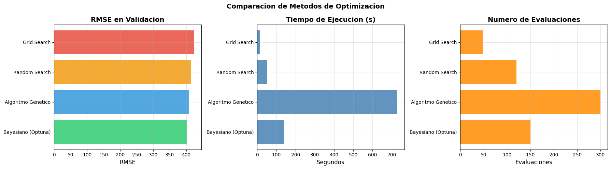
Analisis:
Bayesiano y Genetico logran RMSE comparable con menos evaluaciones que Grid Search.
Grid Search garantiza el optimo dentro del grid pero escala exponencialmente.
Random Search ofrece un balance razonable para espacios grandes.
La comparación general muestra que la optimización bayesiana con Optuna obtuvo el menor RMSE, logrando el mejor rendimiento predictivo entre los métodos evaluados. Además mantuvo un tiempo de ejecución moderado y un número de evaluaciones menor que el Algoritmo Genético.
21.6 Optimizacion de Hiperparametros — Random Forest#
Se aplican los mismos cuatro metodos de busqueda (Grid Search, Random Search, Bayesiana y Algoritmos Geneticos) sobre Random Forest.
21.6.1 Grid Search — Random Forest#
# Objetivo: optimizar Random Forest con Grid Search.
from sklearn.ensemble import RandomForestRegressor
pipe_rf_gs = Pipeline([
('imputer', SimpleImputer(strategy='median')),
('model', RandomForestRegressor(random_state=SEED, n_jobs=-1))
])
param_grid_rf = {
'model__n_estimators': [100, 200, 300],
'model__max_depth': [8, 15, None],
'model__min_samples_split':[2, 5],
'model__max_features': ['sqrt', 'log2'],
}
# 3x3x2x2 = 36 combinaciones x 3 folds
t0 = time.time()
gs_rf = GridSearchCV(pipe_rf_gs, param_grid_rf, cv=cv3,
scoring='neg_root_mean_squared_error', n_jobs=1, refit=True)
gs_rf.fit(X_train_opt, y_train_opt)
t_grid_rf = time.time() - t0
best_gs_rf_pipe = gs_rf.best_estimator_
y_pred_gs_rf = best_gs_rf_pipe.predict(X_val)
rmse_gs_rf = np.sqrt(mean_squared_error(y_val, y_pred_gs_rf))
mae_gs_rf = mean_absolute_error(y_val, y_pred_gs_rf)
print(f'Grid Search RF | Tiempo: {t_grid_rf:.1f}s | Iteraciones: {len(gs_rf.cv_results_["params"])}')
print(f' Mejores params: {gs_rf.best_params_}')
print(f' RMSE validacion: {rmse_gs_rf:.2f} | MAE: {mae_gs_rf:.2f}')
Grid Search RF | Tiempo: 97.6s | Iteraciones: 36
Mejores params: {'model__max_depth': None, 'model__max_features': 'sqrt', 'model__min_samples_split': 2, 'model__n_estimators': 300}
RMSE validacion: 443.63 | MAE: 269.29
21.6.2 Random Search — Random Forest#
# Objetivo: optimizar Random Forest con Random Search.
param_dist_rf = {
'model__n_estimators': randint(100, 600),
'model__max_depth': randint(5, 30),
'model__min_samples_split': randint(2, 15),
'model__min_samples_leaf': randint(1, 8),
'model__max_features': ['sqrt', 'log2', 0.5, 0.7],
}
pipe_rf_rs = Pipeline([
('imputer', SimpleImputer(strategy='median')),
('model', RandomForestRegressor(random_state=SEED, n_jobs=-1))
])
t0 = time.time()
rs_rf = RandomizedSearchCV(pipe_rf_rs, param_dist_rf, n_iter=40, cv=cv3,
scoring='neg_root_mean_squared_error',
n_jobs=1, random_state=SEED, refit=True)
rs_rf.fit(X_train_opt, y_train_opt)
t_random_rf = time.time() - t0
best_rs_rf_pipe = rs_rf.best_estimator_
y_pred_rs_rf = best_rs_rf_pipe.predict(X_val)
rmse_rs_rf = np.sqrt(mean_squared_error(y_val, y_pred_rs_rf))
mae_rs_rf = mean_absolute_error(y_val, y_pred_rs_rf)
print(f'Random Search RF | Tiempo: {t_random_rf:.1f}s | Iteraciones: 40')
print(f' Mejores params: {rs_rf.best_params_}')
print(f' RMSE validacion: {rmse_rs_rf:.2f} | MAE: {mae_rs_rf:.2f}')
Random Search RF | Tiempo: 209.3s | Iteraciones: 40
Mejores params: {'model__max_depth': 25, 'model__max_features': 0.5, 'model__min_samples_leaf': 2, 'model__min_samples_split': 4, 'model__n_estimators': 314}
RMSE validacion: 442.67 | MAE: 252.63
21.6.3 Optimizacion Bayesiana (Optuna) — Random Forest#
# Objetivo: optimizar Random Forest con Optuna (Bayesiano).
history_optuna_rf = []
def objective_optuna_rf(trial):
params = {
'n_estimators': trial.suggest_int('n_estimators', 100, 600),
'max_depth': trial.suggest_int('max_depth', 5, 30),
'min_samples_split': trial.suggest_int('min_samples_split', 2, 15),
'min_samples_leaf': trial.suggest_int('min_samples_leaf', 1, 8),
'max_features': trial.suggest_categorical('max_features', ['sqrt', 'log2']),
}
pipe = Pipeline([
('imputer', SimpleImputer(strategy='median')),
('model', RandomForestRegressor(**params, random_state=SEED, n_jobs=-1))
])
scores = cross_val_score(pipe, X_train_opt, y_train_opt,
cv=KFold(n_splits=3, shuffle=True, random_state=SEED),
scoring='neg_root_mean_squared_error', n_jobs=1)
rmse = -scores.mean()
history_optuna_rf.append(rmse)
return rmse
t0 = time.time()
study_rf = optuna.create_study(direction='minimize',
sampler=optuna.samplers.TPESampler(seed=SEED))
study_rf.optimize(objective_optuna_rf, n_trials=50, show_progress_bar=False)
t_bayes_rf = time.time() - t0
best_params_bayes_rf = study_rf.best_params
pipe_bayes_rf = Pipeline([
('imputer', SimpleImputer(strategy='median')),
('model', RandomForestRegressor(**best_params_bayes_rf, random_state=SEED, n_jobs=-1))
])
pipe_bayes_rf.fit(X_train_opt, y_train_opt)
y_pred_bayes_rf = pipe_bayes_rf.predict(X_val)
rmse_bayes_rf = np.sqrt(mean_squared_error(y_val, y_pred_bayes_rf))
mae_bayes_rf = mean_absolute_error(y_val, y_pred_bayes_rf)
print(f'Bayesiano RF | Tiempo: {t_bayes_rf:.1f}s | Trials: 50')
print(f' Mejores params: {best_params_bayes_rf}')
print(f' RMSE validacion: {rmse_bayes_rf:.2f} | MAE: {mae_bayes_rf:.2f}')
fig, ax = plt.subplots(figsize=(12, 4))
best_so_far_rf = np.minimum.accumulate(history_optuna_rf)
ax.plot(history_optuna_rf, alpha=0.4, color='steelblue', label='RMSE por trial')
ax.plot(best_so_far_rf, color='red', linewidth=2, label='Mejor RMSE acumulado')
ax.set_title('Convergencia — Bayesiana Random Forest', fontweight='bold')
ax.set_xlabel('Trial'); ax.set_ylabel('RMSE (CV)'); ax.legend()
plt.tight_layout(); plt.show()
Bayesiano RF | Tiempo: 307.7s | Trials: 50
Mejores params: {'n_estimators': 578, 'max_depth': 23, 'min_samples_split': 2, 'min_samples_leaf': 1, 'max_features': 'log2'}
RMSE validacion: 441.24 | MAE: 267.32
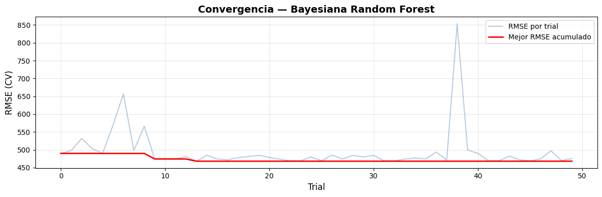
La optimización bayesiana en Random Forest logró reducir el RMSE rápidamente durante los primeros trials y después la curva se mantuvo estable. Esto indica que Optuna encontró buenas combinaciones de hiperparámetros sin necesidad de evaluar todas las opciones posibles. Random Forest necesita ajustar principalmente n_estimators y max_depth, y Optuna los localiza sin probar todas las combinaciones posibles.
21.6.4 Algoritmo Genetico (DEAP) — Random Forest#
# Objetivo: optimizar Random Forest con Algoritmos Geneticos (DEAP).
import random
from deap import base, creator, tools, algorithms
random.seed(SEED); np.random.seed(SEED)
for _name in ['FitnessMin', 'Individual']:
if hasattr(creator, _name): delattr(creator, _name)
creator.create('FitnessMin', base.Fitness, weights=(-1.0,))
creator.create('Individual', list, fitness=creator.FitnessMin)
# Genes: [n_estimators, max_depth, min_samples_split, min_samples_leaf]
GENE_BOUNDS_RF = [(100, 500), (5, 30), (2, 15), (1, 8)]
def decode_rf(ind):
return {
'n_estimators': int(np.clip(ind[0], *GENE_BOUNDS_RF[0])),
'max_depth': int(np.clip(ind[1], *GENE_BOUNDS_RF[1])),
'min_samples_split': int(np.clip(ind[2], *GENE_BOUNDS_RF[2])),
'min_samples_leaf': int(np.clip(ind[3], *GENE_BOUNDS_RF[3])),
'max_features': 'sqrt',
}
def fitness_ga_rf(individual):
params = decode_rf(individual)
pipe = Pipeline([
('imputer', SimpleImputer(strategy='median')),
('model', RandomForestRegressor(**params, random_state=SEED, n_jobs=-1))
])
try:
scores = cross_val_score(pipe, X_train_opt, y_train_opt,
cv=KFold(n_splits=3, shuffle=True, random_state=SEED),
scoring='neg_root_mean_squared_error', n_jobs=1)
return (-scores.mean(),)
except Exception:
return (1e9,)
toolbox_rf = base.Toolbox()
def rand_gene_rf(i): lo, hi = GENE_BOUNDS_RF[i]; return random.uniform(lo, hi)
toolbox_rf.register('individual', tools.initCycle, creator.Individual,
[lambda i=i: rand_gene_rf(i) for i in range(len(GENE_BOUNDS_RF))], n=1)
toolbox_rf.register('population', tools.initRepeat, list, toolbox_rf.individual)
toolbox_rf.register('evaluate', fitness_ga_rf)
toolbox_rf.register('mate', tools.cxBlend, alpha=0.4)
toolbox_rf.register('mutate', tools.mutGaussian, mu=0, sigma=0.15, indpb=0.3)
toolbox_rf.register('select', tools.selTournament, tournsize=3)
POP_RF, GEN_RF, CXPB_RF, MUTPB_RF = 20, 15, 0.6, 0.3
history_ga_rf = []
t0 = time.time()
pop_rf = toolbox_rf.population(n=POP_RF)
for ind, fit in zip(pop_rf, map(toolbox_rf.evaluate, pop_rf)):
ind.fitness.values = fit
for gen in range(GEN_RF):
offspring = algorithms.varAnd(pop_rf, toolbox_rf, cxpb=CXPB_RF, mutpb=MUTPB_RF)
fits = list(map(toolbox_rf.evaluate, offspring))
for ind, fit in zip(offspring, fits): ind.fitness.values = fit
pop_rf = toolbox_rf.select(offspring + pop_rf, k=POP_RF)
best_gen_rf = min(ind.fitness.values[0] for ind in pop_rf)
history_ga_rf.append(best_gen_rf)
if (gen+1) % 5 == 0:
print(f' Gen {gen+1:2d}/{GEN_RF} — Mejor RMSE: {best_gen_rf:.2f}')
t_ga_rf = time.time() - t0
best_ind_rf = tools.selBest(pop_rf, k=1)[0]
best_params_ga_rf = decode_rf(best_ind_rf)
pipe_ga_rf = Pipeline([
('imputer', SimpleImputer(strategy='median')),
('model', RandomForestRegressor(**best_params_ga_rf, random_state=SEED, n_jobs=-1))
])
pipe_ga_rf.fit(X_train_opt, y_train_opt)
y_pred_ga_rf = pipe_ga_rf.predict(X_val)
rmse_ga_rf = np.sqrt(mean_squared_error(y_val, y_pred_ga_rf))
mae_ga_rf = mean_absolute_error(y_val, y_pred_ga_rf)
print(f'Algoritmo Genetico RF | Tiempo: {t_ga_rf:.1f}s | Evaluaciones: {POP_RF*GEN_RF}')
print(f' Mejores params: {best_params_ga_rf}')
print(f' RMSE validacion: {rmse_ga_rf:.2f} | MAE: {mae_ga_rf:.2f}')
fig, ax = plt.subplots(figsize=(10, 4))
ax.plot(range(1, len(history_ga_rf)+1), history_ga_rf, 'o-', color='darkorange', linewidth=2)
ax.set_title('Convergencia — Algoritmo Genetico Random Forest', fontweight='bold')
ax.set_xlabel('Generacion'); ax.set_ylabel('Mejor RMSE (CV)')
plt.tight_layout(); plt.show()
Gen 5/15 — Mejor RMSE: 469.49
Gen 10/15 — Mejor RMSE: 469.39
Gen 15/15 — Mejor RMSE: 469.39
Algoritmo Genetico RF | Tiempo: 2658.0s | Evaluaciones: 300
Mejores params: {'n_estimators': 457, 'max_depth': 24, 'min_samples_split': 3, 'min_samples_leaf': 1, 'max_features': 'sqrt'}
RMSE validacion: 442.80 | MAE: 268.98
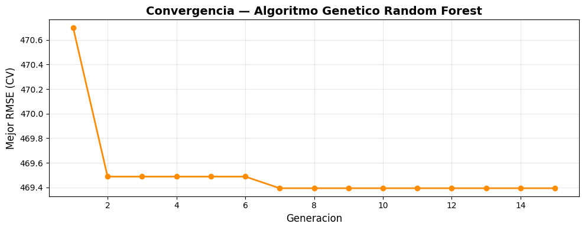
La gráfica muestra que el Algoritmo Genético en Random Forest mejoró el RMSE en las primeras generaciones y luego la curva se estabilizó rápidamente. Esto indica que el modelo encontró una buena combinación de hiperparámetros en poco tiempo.
21.6.5 Comparacion de Metodos — Random Forest#
# Objetivo: comparar los cuatro metodos de optimizacion para Random Forest.
opt_comparison_rf = pd.DataFrame([
{'Metodo': 'Grid Search', 'RMSE Val': rmse_gs_rf, 'MAE Val': mae_gs_rf, 'Tiempo (s)': t_grid_rf, 'Evaluaciones': len(gs_rf.cv_results_['params'])*3},
{'Metodo': 'Random Search', 'RMSE Val': rmse_rs_rf, 'MAE Val': mae_rs_rf, 'Tiempo (s)': t_random_rf, 'Evaluaciones': 40*3},
{'Metodo': 'Bayesiano (Optuna)', 'RMSE Val': rmse_bayes_rf, 'MAE Val': mae_bayes_rf, 'Tiempo (s)': t_bayes_rf, 'Evaluaciones': 50*3},
{'Metodo': 'Algoritmo Genetico', 'RMSE Val': rmse_ga_rf, 'MAE Val': mae_ga_rf, 'Tiempo (s)': t_ga_rf, 'Evaluaciones': POP_RF*GEN_RF},
]).sort_values('RMSE Val').reset_index(drop=True)
opt_comparison_rf.index += 1
print('=== Comparacion de Metodos de Optimizacion — Random Forest ===')
print(opt_comparison_rf.to_string())
best_rf_row = opt_comparison_rf.iloc[0]
best_rf_method = best_rf_row['Metodo']
metodo_map_rf = {
'Bayesiano (Optuna)': pipe_bayes_rf,
'Algoritmo Genetico': pipe_ga_rf,
'Random Search': best_rs_rf_pipe,
'Grid Search': best_gs_rf_pipe,
}
best_rf_pipe = metodo_map_rf[best_rf_method]
fig, axes = plt.subplots(1, 2, figsize=(14, 5))
colors_opt = ['#2ecc71','#3498db','#f39c12','#e74c3c']
axes[0].barh(opt_comparison_rf['Metodo'], opt_comparison_rf['RMSE Val'], color=colors_opt, alpha=0.85)
axes[0].set_title('RMSE en Validacion — RF', fontweight='bold'); axes[0].set_xlabel('RMSE')
axes[1].barh(opt_comparison_rf['Metodo'], opt_comparison_rf['Tiempo (s)'], color='steelblue', alpha=0.85)
axes[1].set_title('Tiempo de Ejecucion — RF', fontweight='bold'); axes[1].set_xlabel('Segundos')
plt.tight_layout(); plt.show()
=== Comparacion de Metodos de Optimizacion — Random Forest ===
Metodo RMSE Val MAE Val Tiempo (s) Evaluaciones
1 Bayesiano (Optuna) 441.236935 267.318068 307.684313 150
2 Random Search 442.668143 252.634222 209.291539 120
3 Algoritmo Genetico 442.804225 268.983767 2657.984824 300
4 Grid Search 443.631769 269.289554 97.610007 108
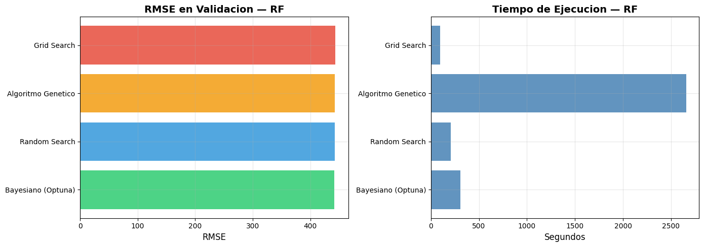
Los métodos de optimización en Random Forest obtuvieron resultados muy similares en RMSE, aunque la optimización bayesiana logró el menor error. Esto indica que varios métodos pueden encontrar buenas combinaciones de hiperparámetros para este modelo.
En el tiempo de ejecución se observa que el Algoritmo Genético fue mucho más lento que los demás métodos, mientras que Grid Search fue el más rápido. Esto muestra que un mayor tiempo de búsqueda no siempre garantiza mejores resultados.
21.7 Optimizacion de Hiperparametros — KNN#
21.7.1 Grid Search — KNN#
# Objetivo: optimizar KNN con Grid Search.
from sklearn.neighbors import KNeighborsRegressor
pipe_knn_gs = Pipeline([
('imputer', SimpleImputer(strategy='median')),
('scaler', StandardScaler()),
('model', KNeighborsRegressor(n_jobs=-1))
])
param_grid_knn = {
'model__n_neighbors': [3, 5, 10, 15, 20],
'model__weights': ['uniform', 'distance'],
'model__p': [1, 2],
}
# 5x2x2 = 20 combinaciones x 3 folds = 60 fits
t0 = time.time()
gs_knn = GridSearchCV(pipe_knn_gs, param_grid_knn, cv=cv3,
scoring='neg_root_mean_squared_error', n_jobs=1, refit=True)
gs_knn.fit(X_train_opt, y_train_opt)
t_grid_knn = time.time() - t0
best_gs_knn_pipe = gs_knn.best_estimator_
y_pred_gs_knn = best_gs_knn_pipe.predict(X_val)
rmse_gs_knn = np.sqrt(mean_squared_error(y_val, y_pred_gs_knn))
mae_gs_knn = mean_absolute_error(y_val, y_pred_gs_knn)
print(f'Grid Search KNN | Tiempo: {t_grid_knn:.1f}s | Iteraciones: {len(gs_knn.cv_results_["params"])}')
print(f' Mejores params: {gs_knn.best_params_}')
print(f' RMSE validacion: {rmse_gs_knn:.2f} | MAE: {mae_gs_knn:.2f}')
Grid Search KNN | Tiempo: 30.4s | Iteraciones: 20
Mejores params: {'model__n_neighbors': 10, 'model__p': 1, 'model__weights': 'distance'}
RMSE validacion: 817.20 | MAE: 594.00
21.7.2 Random Search — KNN#
# Objetivo: optimizar KNN con Random Search.
param_dist_knn = {
'model__n_neighbors': randint(3, 30),
'model__weights': ['uniform', 'distance'],
'model__p': [1, 2],
'model__leaf_size': randint(20, 50),
}
pipe_knn_rs = Pipeline([
('imputer', SimpleImputer(strategy='median')),
('scaler', StandardScaler()),
('model', KNeighborsRegressor(n_jobs=-1))
])
t0 = time.time()
rs_knn = RandomizedSearchCV(pipe_knn_rs, param_dist_knn, n_iter=40, cv=cv3,
scoring='neg_root_mean_squared_error',
n_jobs=1, random_state=SEED, refit=True)
rs_knn.fit(X_train_opt, y_train_opt)
t_random_knn = time.time() - t0
best_rs_knn_pipe = rs_knn.best_estimator_
y_pred_rs_knn = best_rs_knn_pipe.predict(X_val)
rmse_rs_knn = np.sqrt(mean_squared_error(y_val, y_pred_rs_knn))
mae_rs_knn = mean_absolute_error(y_val, y_pred_rs_knn)
print(f'Random Search KNN | Tiempo: {t_random_knn:.1f}s | Iteraciones: 40')
print(f' Mejores params: {rs_knn.best_params_}')
print(f' RMSE validacion: {rmse_rs_knn:.2f} | MAE: {mae_rs_knn:.2f}')
Random Search KNN | Tiempo: 63.0s | Iteraciones: 40
Mejores params: {'model__leaf_size': 24, 'model__n_neighbors': 12, 'model__p': 1, 'model__weights': 'distance'}
RMSE validacion: 813.77 | MAE: 597.79
21.7.3 Optimizacion Bayesiana (Optuna) — KNN#
# Objetivo: optimizar KNN con Optuna (Bayesiano).
history_optuna_knn = []
def objective_optuna_knn(trial):
params = {
'n_neighbors': trial.suggest_int('n_neighbors', 3, 30),
'weights': trial.suggest_categorical('weights', ['uniform', 'distance']),
'p': trial.suggest_categorical('p', [1, 2]),
'leaf_size': trial.suggest_int('leaf_size', 20, 50),
}
pipe = Pipeline([
('imputer', SimpleImputer(strategy='median')),
('scaler', StandardScaler()),
('model', KNeighborsRegressor(**params, n_jobs=-1))
])
scores = cross_val_score(pipe, X_train_opt, y_train_opt,
cv=KFold(n_splits=3, shuffle=True, random_state=SEED),
scoring='neg_root_mean_squared_error', n_jobs=1)
rmse = -scores.mean()
history_optuna_knn.append(rmse)
return rmse
t0 = time.time()
study_knn = optuna.create_study(direction='minimize',
sampler=optuna.samplers.TPESampler(seed=SEED))
study_knn.optimize(objective_optuna_knn, n_trials=50, show_progress_bar=False)
t_bayes_knn = time.time() - t0
best_params_bayes_knn = study_knn.best_params
pipe_bayes_knn = Pipeline([
('imputer', SimpleImputer(strategy='median')),
('scaler', StandardScaler()),
('model', KNeighborsRegressor(**best_params_bayes_knn, n_jobs=-1))
])
pipe_bayes_knn.fit(X_train_opt, y_train_opt)
y_pred_bayes_knn = pipe_bayes_knn.predict(X_val)
rmse_bayes_knn = np.sqrt(mean_squared_error(y_val, y_pred_bayes_knn))
mae_bayes_knn = mean_absolute_error(y_val, y_pred_bayes_knn)
print(f'Bayesiano KNN | Tiempo: {t_bayes_knn:.1f}s | Trials: 50')
print(f' Mejores params: {best_params_bayes_knn}')
print(f' RMSE validacion: {rmse_bayes_knn:.2f} | MAE: {mae_bayes_knn:.2f}')
fig, ax = plt.subplots(figsize=(12, 4))
best_so_far_knn = np.minimum.accumulate(history_optuna_knn)
ax.plot(history_optuna_knn, alpha=0.4, color='steelblue', label='RMSE por trial')
ax.plot(best_so_far_knn, color='red', linewidth=2, label='Mejor RMSE acumulado')
ax.set_title('Convergencia — Bayesiana KNN', fontweight='bold')
ax.set_xlabel('Trial'); ax.set_ylabel('RMSE (CV)'); ax.legend()
plt.tight_layout(); plt.show()
Bayesiano KNN | Tiempo: 96.0s | Trials: 50
Mejores params: {'n_neighbors': 12, 'weights': 'distance', 'p': 1, 'leaf_size': 26}
RMSE validacion: 813.77 | MAE: 597.79
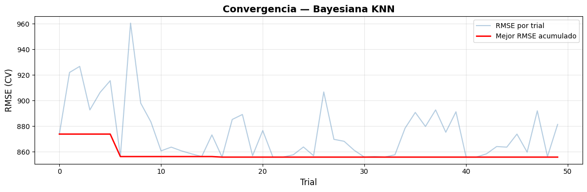
La optimización bayesiana en KNN logró encontrar rápidamente un mejor valor de RMSE en los primeros trials y luego la curva se mantuvo estable. Esto indica que el modelo alcanzó su mejor combinación de hiperparámetros en pocas iteraciones.
21.7.4 Algoritmo Genetico (DEAP) — KNN#
# Objetivo: optimizar KNN con Algoritmos Geneticos (DEAP).
random.seed(SEED); np.random.seed(SEED)
for _name in ['FitnessMin', 'Individual']:
if hasattr(creator, _name): delattr(creator, _name)
creator.create('FitnessMin', base.Fitness, weights=(-1.0,))
creator.create('Individual', list, fitness=creator.FitnessMin)
# Genes: [n_neighbors, p(1-2), leaf_size]
GENE_BOUNDS_KNN = [(3, 30), (1, 2), (20, 50)]
def decode_knn(ind):
return {
'n_neighbors': int(np.clip(round(ind[0]), *GENE_BOUNDS_KNN[0])),
'weights': 'distance',
'p': int(np.clip(round(ind[1]), 1, 2)),
'leaf_size': int(np.clip(round(ind[2]), *GENE_BOUNDS_KNN[2])),
}
def fitness_ga_knn(individual):
params = decode_knn(individual)
pipe = Pipeline([
('imputer', SimpleImputer(strategy='median')),
('scaler', StandardScaler()),
('model', KNeighborsRegressor(**params, n_jobs=-1))
])
try:
scores = cross_val_score(pipe, X_train_opt, y_train_opt,
cv=KFold(n_splits=3, shuffle=True, random_state=SEED),
scoring='neg_root_mean_squared_error', n_jobs=1)
return (-scores.mean(),)
except Exception:
return (1e9,)
toolbox_knn = base.Toolbox()
def rand_gene_knn(i): lo, hi = GENE_BOUNDS_KNN[i]; return random.uniform(lo, hi)
toolbox_knn.register('individual', tools.initCycle, creator.Individual,
[lambda i=i: rand_gene_knn(i) for i in range(len(GENE_BOUNDS_KNN))], n=1)
toolbox_knn.register('population', tools.initRepeat, list, toolbox_knn.individual)
toolbox_knn.register('evaluate', fitness_ga_knn)
toolbox_knn.register('mate', tools.cxBlend, alpha=0.4)
toolbox_knn.register('mutate', tools.mutGaussian, mu=0, sigma=0.1, indpb=0.3)
toolbox_knn.register('select', tools.selTournament, tournsize=3)
POP_KNN, GEN_KNN = 20, 15
history_ga_knn = []
t0 = time.time()
pop_knn = toolbox_knn.population(n=POP_KNN)
for ind, fit in zip(pop_knn, map(toolbox_knn.evaluate, pop_knn)): ind.fitness.values = fit
for gen in range(GEN_KNN):
offspring = algorithms.varAnd(pop_knn, toolbox_knn, cxpb=0.6, mutpb=0.3)
fits = list(map(toolbox_knn.evaluate, offspring))
for ind, fit in zip(offspring, fits): ind.fitness.values = fit
pop_knn = toolbox_knn.select(offspring + pop_knn, k=POP_KNN)
best_gen_knn = min(ind.fitness.values[0] for ind in pop_knn)
history_ga_knn.append(best_gen_knn)
if (gen+1) % 5 == 0:
print(f' Gen {gen+1:2d}/{GEN_KNN} — Mejor RMSE: {best_gen_knn:.2f}')
t_ga_knn = time.time() - t0
best_ind_knn = tools.selBest(pop_knn, k=1)[0]
best_params_ga_knn = decode_knn(best_ind_knn)
pipe_ga_knn = Pipeline([
('imputer', SimpleImputer(strategy='median')),
('scaler', StandardScaler()),
('model', KNeighborsRegressor(**best_params_ga_knn, n_jobs=-1))
])
pipe_ga_knn.fit(X_train_opt, y_train_opt)
y_pred_ga_knn = pipe_ga_knn.predict(X_val)
rmse_ga_knn = np.sqrt(mean_squared_error(y_val, y_pred_ga_knn))
mae_ga_knn = mean_absolute_error(y_val, y_pred_ga_knn)
print(f'Algoritmo Genetico KNN | Tiempo: {t_ga_knn:.1f}s | Evaluaciones: {POP_KNN*GEN_KNN}')
print(f' Mejores params: {best_params_ga_knn}')
print(f' RMSE validacion: {rmse_ga_knn:.2f} | MAE: {mae_ga_knn:.2f}')
fig, ax = plt.subplots(figsize=(10, 4))
ax.plot(range(1, len(history_ga_knn)+1), history_ga_knn, 'o-', color='darkorange', linewidth=2)
ax.set_title('Convergencia — Algoritmo Genetico KNN', fontweight='bold')
ax.set_xlabel('Generacion'); ax.set_ylabel('Mejor RMSE (CV)')
plt.tight_layout(); plt.show()
Gen 5/15 — Mejor RMSE: 855.84
Gen 10/15 — Mejor RMSE: 855.84
Gen 15/15 — Mejor RMSE: 855.84
Algoritmo Genetico KNN | Tiempo: 664.3s | Evaluaciones: 300
Mejores params: {'n_neighbors': 12, 'weights': 'distance', 'p': 1, 'leaf_size': 37}
RMSE validacion: 813.77 | MAE: 597.79
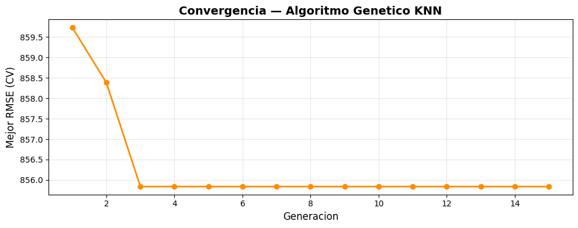
La gráfica muestra que el Algoritmo Genético mejoró el RMSE rápidamente en las primeras generaciones y después se estabilizó. Esto indica que KNN encontró su mejor combinación de hiperparámetros en poco tiempo y ya no logró mejoras importantes. Esto se da ya que no hay mucho espacio para explorar cuando el modelo tiene solo 2 parámetros principales.
21.7.5 Comparacion de Metodos — KNN#
# Objetivo: comparar los cuatro metodos de optimizacion para KNN.
opt_comparison_knn = pd.DataFrame([
{'Metodo': 'Grid Search', 'RMSE Val': rmse_gs_knn, 'MAE Val': mae_gs_knn, 'Tiempo (s)': t_grid_knn, 'Evaluaciones': len(gs_knn.cv_results_['params'])*3},
{'Metodo': 'Random Search', 'RMSE Val': rmse_rs_knn, 'MAE Val': mae_rs_knn, 'Tiempo (s)': t_random_knn, 'Evaluaciones': 40*3},
{'Metodo': 'Bayesiano (Optuna)', 'RMSE Val': rmse_bayes_knn, 'MAE Val': mae_bayes_knn, 'Tiempo (s)': t_bayes_knn, 'Evaluaciones': 50*3},
{'Metodo': 'Algoritmo Genetico', 'RMSE Val': rmse_ga_knn, 'MAE Val': mae_ga_knn, 'Tiempo (s)': t_ga_knn, 'Evaluaciones': POP_KNN*GEN_KNN},
]).sort_values('RMSE Val').reset_index(drop=True)
opt_comparison_knn.index += 1
print('=== Comparacion de Metodos de Optimizacion — KNN ===')
print(opt_comparison_knn.to_string())
best_knn_row = opt_comparison_knn.iloc[0]
best_knn_method = best_knn_row['Metodo']
metodo_map_knn = {
'Bayesiano (Optuna)': pipe_bayes_knn,
'Algoritmo Genetico': pipe_ga_knn,
'Random Search': best_rs_knn_pipe,
'Grid Search': best_gs_knn_pipe,
}
best_knn_pipe = metodo_map_knn[best_knn_method]
fig, axes = plt.subplots(1, 2, figsize=(14, 5))
axes[0].barh(opt_comparison_knn['Metodo'], opt_comparison_knn['RMSE Val'], color=['#2ecc71','#3498db','#f39c12','#e74c3c'], alpha=0.85)
axes[0].set_title('RMSE en Validacion — KNN', fontweight='bold'); axes[0].set_xlabel('RMSE')
axes[1].barh(opt_comparison_knn['Metodo'], opt_comparison_knn['Tiempo (s)'], color='steelblue', alpha=0.85)
axes[1].set_title('Tiempo de Ejecucion — KNN', fontweight='bold'); axes[1].set_xlabel('Segundos')
plt.tight_layout(); plt.show()
=== Comparacion de Metodos de Optimizacion — KNN ===
Metodo RMSE Val MAE Val Tiempo (s) Evaluaciones
1 Random Search 813.767376 597.785596 63.038021 120
2 Bayesiano (Optuna) 813.767376 597.785596 96.037503 150
3 Algoritmo Genetico 813.767376 597.785596 664.300686 300
4 Grid Search 817.199333 593.996745 30.402107 60
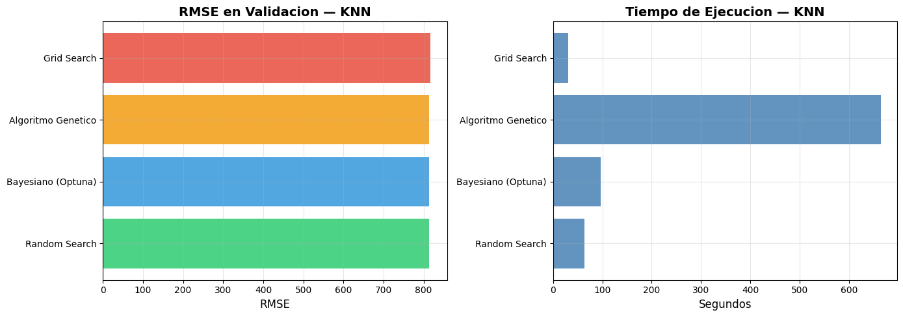
Los métodos de optimización en KNN obtuvieron valores de RMSE muy parecidos, lo que indica que cambiar la estrategia de búsqueda no generó grandes mejoras en la precisión del modelo
21.8 Optimizacion de Hiperparametros — Arbol de Decision#
21.8.1 Grid Search — Arbol de Decision#
# Objetivo: optimizar Arbol de Decision con Grid Search.
from sklearn.tree import DecisionTreeRegressor
pipe_dt_gs = Pipeline([
('imputer', SimpleImputer(strategy='median')),
('model', DecisionTreeRegressor(random_state=SEED))
])
param_grid_dt = {
'model__max_depth': [5, 10, 15, 20, None],
'model__min_samples_split':[2, 5, 10],
'model__min_samples_leaf': [1, 3, 5],
'model__max_features': ['sqrt', 'log2', None],
}
# 5x3x3x3 = 135 combinaciones x 3 folds
t0 = time.time()
gs_dt = GridSearchCV(pipe_dt_gs, param_grid_dt, cv=cv3,
scoring='neg_root_mean_squared_error', n_jobs=1, refit=True)
gs_dt.fit(X_train_opt, y_train_opt)
t_grid_dt = time.time() - t0
best_gs_dt_pipe = gs_dt.best_estimator_
y_pred_gs_dt = best_gs_dt_pipe.predict(X_val)
rmse_gs_dt = np.sqrt(mean_squared_error(y_val, y_pred_gs_dt))
mae_gs_dt = mean_absolute_error(y_val, y_pred_gs_dt)
print(f'Grid Search DT | Tiempo: {t_grid_dt:.1f}s | Iteraciones: {len(gs_dt.cv_results_["params"])}')
print(f' Mejores params: {gs_dt.best_params_}')
print(f' RMSE validacion: {rmse_gs_dt:.2f} | MAE: {mae_gs_dt:.2f}')
Grid Search DT | Tiempo: 47.2s | Iteraciones: 135
Mejores params: {'model__max_depth': 10, 'model__max_features': None, 'model__min_samples_leaf': 5, 'model__min_samples_split': 2}
RMSE validacion: 512.27 | MAE: 295.34
21.8.2 Random Search — Arbol de Decision#
# Objetivo: optimizar Arbol de Decision con Random Search.
param_dist_dt = {
'model__max_depth': randint(3, 30),
'model__min_samples_split':randint(2, 20),
'model__min_samples_leaf': randint(1, 10),
'model__max_features': ['sqrt', 'log2', None],
}
pipe_dt_rs = Pipeline([
('imputer', SimpleImputer(strategy='median')),
('model', DecisionTreeRegressor(random_state=SEED))
])
t0 = time.time()
rs_dt = RandomizedSearchCV(pipe_dt_rs, param_dist_dt, n_iter=40, cv=cv3,
scoring='neg_root_mean_squared_error',
n_jobs=1, random_state=SEED, refit=True)
rs_dt.fit(X_train_opt, y_train_opt)
t_random_dt = time.time() - t0
best_rs_dt_pipe = rs_dt.best_estimator_
y_pred_rs_dt = best_rs_dt_pipe.predict(X_val)
rmse_rs_dt = np.sqrt(mean_squared_error(y_val, y_pred_rs_dt))
mae_rs_dt = mean_absolute_error(y_val, y_pred_rs_dt)
print(f'Random Search DT | Tiempo: {t_random_dt:.1f}s | Iteraciones: 40')
print(f' Mejores params: {rs_dt.best_params_}')
print(f' RMSE validacion: {rmse_rs_dt:.2f} | MAE: {mae_rs_dt:.2f}')
Random Search DT | Tiempo: 12.2s | Iteraciones: 40
Mejores params: {'model__max_depth': 9, 'model__max_features': None, 'model__min_samples_leaf': 9, 'model__min_samples_split': 16}
RMSE validacion: 500.21 | MAE: 295.62
21.8.3 Optimizacion Bayesiana (Optuna) — Arbol de Decision#
# Objetivo: optimizar Arbol de Decision con Optuna (Bayesiano).
history_optuna_dt = []
def objective_optuna_dt(trial):
params = {
'max_depth': trial.suggest_int('max_depth', 3, 30),
'min_samples_split': trial.suggest_int('min_samples_split', 2, 20),
'min_samples_leaf': trial.suggest_int('min_samples_leaf', 1, 10),
'max_features': trial.suggest_categorical('max_features', ['sqrt', 'log2']),
}
pipe = Pipeline([
('imputer', SimpleImputer(strategy='median')),
('model', DecisionTreeRegressor(**params, random_state=SEED))
])
scores = cross_val_score(pipe, X_train_opt, y_train_opt,
cv=KFold(n_splits=3, shuffle=True, random_state=SEED),
scoring='neg_root_mean_squared_error', n_jobs=1)
rmse = -scores.mean()
history_optuna_dt.append(rmse)
return rmse
t0 = time.time()
study_dt = optuna.create_study(direction='minimize',
sampler=optuna.samplers.TPESampler(seed=SEED))
study_dt.optimize(objective_optuna_dt, n_trials=50, show_progress_bar=False)
t_bayes_dt = time.time() - t0
best_params_bayes_dt = study_dt.best_params
pipe_bayes_dt = Pipeline([
('imputer', SimpleImputer(strategy='median')),
('model', DecisionTreeRegressor(**best_params_bayes_dt, random_state=SEED))
])
pipe_bayes_dt.fit(X_train_opt, y_train_opt)
y_pred_bayes_dt = pipe_bayes_dt.predict(X_val)
rmse_bayes_dt = np.sqrt(mean_squared_error(y_val, y_pred_bayes_dt))
mae_bayes_dt = mean_absolute_error(y_val, y_pred_bayes_dt)
print(f'Bayesiano DT | Tiempo: {t_bayes_dt:.1f}s | Trials: 50')
print(f' Mejores params: {best_params_bayes_dt}')
print(f' RMSE validacion: {rmse_bayes_dt:.2f} | MAE: {mae_bayes_dt:.2f}')
fig, ax = plt.subplots(figsize=(12, 4))
best_so_far_dt = np.minimum.accumulate(history_optuna_dt)
ax.plot(history_optuna_dt, alpha=0.4, color='steelblue', label='RMSE por trial')
ax.plot(best_so_far_dt, color='red', linewidth=2, label='Mejor RMSE acumulado')
ax.set_title('Convergencia — Bayesiana Arbol de Decision', fontweight='bold')
ax.set_xlabel('Trial'); ax.set_ylabel('RMSE (CV)'); ax.legend()
plt.tight_layout(); plt.show()
Bayesiano DT | Tiempo: 11.5s | Trials: 50
Mejores params: {'max_depth': 20, 'min_samples_split': 20, 'min_samples_leaf': 4, 'max_features': 'log2'}
RMSE validacion: 680.55 | MAE: 411.67
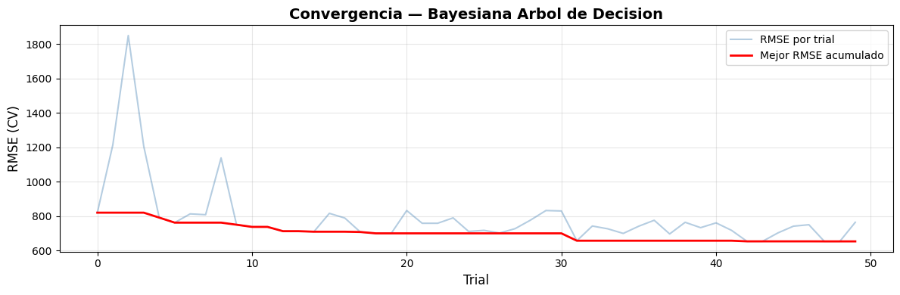
La optimización bayesiana logró reducir el RMSE a medida que avanzaron los trials, mostrando que el modelo fue aprendiendo y encontrando mejores combinaciones de hiperparámetros. Sin embargo, después de varios intentos la mejora se estabilizó cerca de 650, lo que indica que el Árbol de Decisión alcanzó un límite en su capacidad predictiva.
21.8.4 Algoritmo Genetico (DEAP) — Arbol de Decision#
# Objetivo: optimizar Arbol de Decision con Algoritmos Geneticos (DEAP).
random.seed(SEED); np.random.seed(SEED)
for _name in ['FitnessMin', 'Individual']:
if hasattr(creator, _name): delattr(creator, _name)
creator.create('FitnessMin', base.Fitness, weights=(-1.0,))
creator.create('Individual', list, fitness=creator.FitnessMin)
# Genes: [max_depth, min_samples_split, min_samples_leaf]
GENE_BOUNDS_DT = [(3, 30), (2, 20), (1, 10)]
def decode_dt(ind):
return {
'max_depth': int(np.clip(round(ind[0]), *GENE_BOUNDS_DT[0])),
'min_samples_split': int(np.clip(round(ind[1]), *GENE_BOUNDS_DT[1])),
'min_samples_leaf': int(np.clip(round(ind[2]), *GENE_BOUNDS_DT[2])),
'max_features': 'sqrt',
}
def fitness_ga_dt(individual):
params = decode_dt(individual)
pipe = Pipeline([
('imputer', SimpleImputer(strategy='median')),
('model', DecisionTreeRegressor(**params, random_state=SEED))
])
try:
scores = cross_val_score(pipe, X_train_opt, y_train_opt,
cv=KFold(n_splits=3, shuffle=True, random_state=SEED),
scoring='neg_root_mean_squared_error', n_jobs=1)
return (-scores.mean(),)
except Exception:
return (1e9,)
toolbox_dt = base.Toolbox()
def rand_gene_dt(i): lo, hi = GENE_BOUNDS_DT[i]; return random.uniform(lo, hi)
toolbox_dt.register('individual', tools.initCycle, creator.Individual,
[lambda i=i: rand_gene_dt(i) for i in range(len(GENE_BOUNDS_DT))], n=1)
toolbox_dt.register('population', tools.initRepeat, list, toolbox_dt.individual)
toolbox_dt.register('evaluate', fitness_ga_dt)
toolbox_dt.register('mate', tools.cxBlend, alpha=0.4)
toolbox_dt.register('mutate', tools.mutGaussian, mu=0, sigma=0.2, indpb=0.3)
toolbox_dt.register('select', tools.selTournament, tournsize=3)
POP_DT, GEN_DT = 20, 15
history_ga_dt = []
t0 = time.time()
pop_dt = toolbox_dt.population(n=POP_DT)
for ind, fit in zip(pop_dt, map(toolbox_dt.evaluate, pop_dt)): ind.fitness.values = fit
for gen in range(GEN_DT):
offspring = algorithms.varAnd(pop_dt, toolbox_dt, cxpb=0.6, mutpb=0.3)
fits = list(map(toolbox_dt.evaluate, offspring))
for ind, fit in zip(offspring, fits): ind.fitness.values = fit
pop_dt = toolbox_dt.select(offspring + pop_dt, k=POP_DT)
best_gen_dt = min(ind.fitness.values[0] for ind in pop_dt)
history_ga_dt.append(best_gen_dt)
if (gen+1) % 5 == 0:
print(f' Gen {gen+1:2d}/{GEN_DT} — Mejor RMSE: {best_gen_dt:.2f}')
t_ga_dt = time.time() - t0
best_params_ga_dt = decode_dt(tools.selBest(pop_dt, k=1)[0])
pipe_ga_dt = Pipeline([
('imputer', SimpleImputer(strategy='median')),
('model', DecisionTreeRegressor(**best_params_ga_dt, random_state=SEED))
])
pipe_ga_dt.fit(X_train_opt, y_train_opt)
y_pred_ga_dt = pipe_ga_dt.predict(X_val)
rmse_ga_dt = np.sqrt(mean_squared_error(y_val, y_pred_ga_dt))
mae_ga_dt = mean_absolute_error(y_val, y_pred_ga_dt)
print(f'Algoritmo Genetico DT | Tiempo: {t_ga_dt:.1f}s | Evaluaciones: {POP_DT*GEN_DT}')
print(f' RMSE validacion: {rmse_ga_dt:.2f} | MAE: {mae_ga_dt:.2f}')
fig, ax = plt.subplots(figsize=(10, 4))
ax.plot(range(1, len(history_ga_dt)+1), history_ga_dt, 'o-', color='darkorange', linewidth=2)
ax.set_title('Convergencia — Algoritmo Genetico Arbol de Decision', fontweight='bold')
ax.set_xlabel('Generacion'); ax.set_ylabel('Mejor RMSE (CV)')
plt.tight_layout(); plt.show()
Gen 5/15 — Mejor RMSE: 652.44
Gen 10/15 — Mejor RMSE: 652.44
Gen 15/15 — Mejor RMSE: 652.44
Algoritmo Genetico DT | Tiempo: 57.2s | Evaluaciones: 300
RMSE validacion: 680.41 | MAE: 403.84
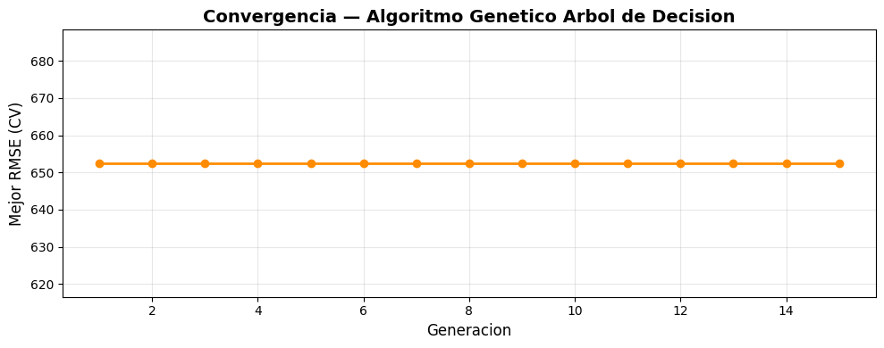
La gráfica muestra que el Algoritmo Genético mantuvo el mismo valor de RMSE en todas las generaciones. Esto indica que el modelo no logró mejorar durante el proceso de optimización y se quedó estancado desde el inicio.
21.8.5 Comparacion de Metodos — Arbol de Decision#
# Objetivo: comparar los cuatro metodos de optimizacion para Arbol de Decision.
opt_comparison_dt = pd.DataFrame([
{'Metodo': 'Grid Search', 'RMSE Val': rmse_gs_dt, 'MAE Val': mae_gs_dt, 'Tiempo (s)': t_grid_dt, 'Evaluaciones': len(gs_dt.cv_results_['params'])*3},
{'Metodo': 'Random Search', 'RMSE Val': rmse_rs_dt, 'MAE Val': mae_rs_dt, 'Tiempo (s)': t_random_dt, 'Evaluaciones': 40*3},
{'Metodo': 'Bayesiano (Optuna)', 'RMSE Val': rmse_bayes_dt, 'MAE Val': mae_bayes_dt, 'Tiempo (s)': t_bayes_dt, 'Evaluaciones': 50*3},
{'Metodo': 'Algoritmo Genetico', 'RMSE Val': rmse_ga_dt, 'MAE Val': mae_ga_dt, 'Tiempo (s)': t_ga_dt, 'Evaluaciones': POP_DT*GEN_DT},
]).sort_values('RMSE Val').reset_index(drop=True)
opt_comparison_dt.index += 1
print('=== Comparacion de Metodos de Optimizacion — Arbol de Decision ===')
print(opt_comparison_dt.to_string())
best_dt_row = opt_comparison_dt.iloc[0]
best_dt_method = best_dt_row['Metodo']
metodo_map_dt = {
'Bayesiano (Optuna)': pipe_bayes_dt,
'Algoritmo Genetico': pipe_ga_dt,
'Random Search': best_rs_dt_pipe,
'Grid Search': best_gs_dt_pipe,
}
best_dt_pipe = metodo_map_dt[best_dt_method]
fig, axes = plt.subplots(1, 2, figsize=(14, 5))
axes[0].barh(opt_comparison_dt['Metodo'], opt_comparison_dt['RMSE Val'], color=['#2ecc71','#3498db','#f39c12','#e74c3c'], alpha=0.85)
axes[0].set_title('RMSE en Validacion — DT', fontweight='bold'); axes[0].set_xlabel('RMSE')
axes[1].barh(opt_comparison_dt['Metodo'], opt_comparison_dt['Tiempo (s)'], color='steelblue', alpha=0.85)
axes[1].set_title('Tiempo de Ejecucion — DT', fontweight='bold'); axes[1].set_xlabel('Segundos')
plt.tight_layout(); plt.show()
=== Comparacion de Metodos de Optimizacion — Arbol de Decision ===
Metodo RMSE Val MAE Val Tiempo (s) Evaluaciones
1 Random Search 500.212855 295.615761 12.238076 120
2 Grid Search 512.272373 295.337459 47.186254 405
3 Algoritmo Genetico 680.406700 403.842212 57.172771 300
4 Bayesiano (Optuna) 680.551166 411.672091 11.461793 150
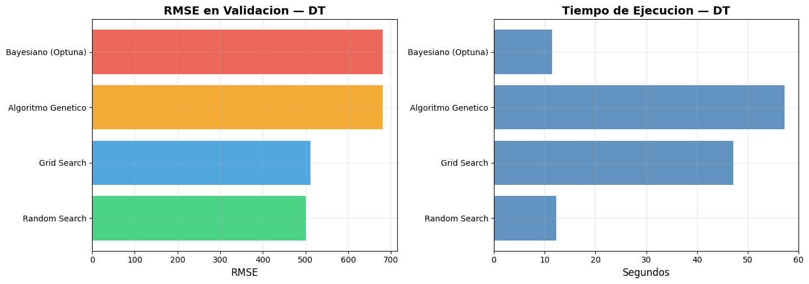
Random Search y Grid Search obtuvieron los mejores resultados porque tuvieron los RMSE más bajos. Además Random Search fue mucho más rápido que Grid Search, por lo que logró un mejor equilibrio entre precisión y tiempo de ejecución. Mientras, el método Bayesiano con Optuna y el Algoritmo Genético tardaron más o dieron errores más altos, así que no fueron tan eficientes para este modelo DT.
21.9 Optimizacion de Hiperparametros — SVR#
Para SVR se usan cuatro metodos (Grid Search, Random Search, Bayesiana). Se trabaja con una submuestra de 5 000 registros durante la optimizacion para reducir el tiempo de computo; el modelo final se entrena con el conjunto completo.
# Objetivo: optimizar SVR con Grid Search, Random Search y Bayesiana.
from sklearn.svm import SVR
from sklearn.preprocessing import StandardScaler
import warnings; warnings.filterwarnings('ignore')
# Submuestra para acelerar la optimizacion
SVR_SAMPLE = 5000
rng = np.random.RandomState(SEED)
idx_svr = rng.choice(len(X_train_opt), size=min(SVR_SAMPLE, len(X_train_opt)), replace=False)
X_svr_sub, y_svr_sub = X_train_opt.iloc[idx_svr], y_train_opt.iloc[idx_svr]
cv3_svr = KFold(n_splits=3, shuffle=True, random_state=SEED)
def make_svr_pipe(C=1.0, epsilon=0.1, gamma='scale'):
return Pipeline([
('imputer', SimpleImputer(strategy='median')),
('scaler', StandardScaler()),
('model', SVR(kernel='rbf', C=C, epsilon=epsilon, gamma=gamma))
])
# --- Grid Search ---
param_grid_svr = {
'model__C': [0.5, 1, 10, 50],
'model__epsilon': [0.05, 0.1, 0.5],
'model__gamma': ['scale', 'auto'],
}
t0 = time.time()
gs_svr = GridSearchCV(make_svr_pipe(), param_grid_svr, cv=cv3_svr,
scoring='neg_root_mean_squared_error', n_jobs=1, refit=True)
gs_svr.fit(X_svr_sub, y_svr_sub)
t_grid_svr = time.time() - t0
pipe_gs_svr = make_svr_pipe(**{k.replace('model__', ''): v for k, v in gs_svr.best_params_.items()})
pipe_gs_svr.fit(X_train_opt, y_train_opt)
rmse_gs_svr = np.sqrt(mean_squared_error(y_val, pipe_gs_svr.predict(X_val)))
mae_gs_svr = mean_absolute_error(y_val, pipe_gs_svr.predict(X_val))
print(f'Grid Search SVR | Tiempo: {t_grid_svr:.1f}s | Mejores: {gs_svr.best_params_}')
print(f' RMSE: {rmse_gs_svr:.2f} MAE: {mae_gs_svr:.2f}')
# --- Random Search ---
from scipy.stats import uniform as sp_uniform
param_dist_svr = {
'model__C': sp_uniform(0.1, 100),
'model__epsilon': sp_uniform(0.01, 1.0),
'model__gamma': ['scale', 'auto'],
}
t0 = time.time()
rs_svr = RandomizedSearchCV(make_svr_pipe(), param_dist_svr, n_iter=20, cv=cv3_svr,
scoring='neg_root_mean_squared_error',
n_jobs=1, random_state=SEED, refit=True)
rs_svr.fit(X_svr_sub, y_svr_sub)
t_random_svr = time.time() - t0
pipe_rs_svr = make_svr_pipe(**{k.replace('model__', ''): v for k, v in rs_svr.best_params_.items()})
pipe_rs_svr.fit(X_train_opt, y_train_opt)
rmse_rs_svr = np.sqrt(mean_squared_error(y_val, pipe_rs_svr.predict(X_val)))
mae_rs_svr = mean_absolute_error(y_val, pipe_rs_svr.predict(X_val))
print(f'Random Search SVR | Tiempo: {t_random_svr:.1f}s | Mejores: {rs_svr.best_params_}')
print(f' RMSE: {rmse_rs_svr:.2f} MAE: {mae_rs_svr:.2f}')
# --- Bayesiana (Optuna) ---
history_optuna_svr = []
def objective_optuna_svr(trial):
C = trial.suggest_float('C', 0.1, 100, log=True)
epsilon = trial.suggest_float('epsilon', 0.01, 1.0, log=True)
gamma = trial.suggest_categorical('gamma', ['scale', 'auto'])
pipe = make_svr_pipe(C=C, epsilon=epsilon, gamma=gamma)
scores = cross_val_score(pipe, X_svr_sub, y_svr_sub,
cv=cv3_svr, scoring='neg_root_mean_squared_error', n_jobs=1)
rmse = -scores.mean()
history_optuna_svr.append(rmse)
return rmse
t0 = time.time()
study_svr = optuna.create_study(direction='minimize',
sampler=optuna.samplers.TPESampler(seed=SEED))
study_svr.optimize(objective_optuna_svr, n_trials=30, show_progress_bar=False)
t_bayes_svr = time.time() - t0
bp = study_svr.best_params
pipe_bayes_svr = make_svr_pipe(C=bp['C'], epsilon=bp['epsilon'], gamma=bp['gamma'])
pipe_bayes_svr.fit(X_train_opt, y_train_opt)
rmse_bayes_svr = np.sqrt(mean_squared_error(y_val, pipe_bayes_svr.predict(X_val)))
mae_bayes_svr = mean_absolute_error(y_val, pipe_bayes_svr.predict(X_val))
print(f'Bayesiano SVR | Tiempo: {t_bayes_svr:.1f}s | Trials: 30 | Mejores: {bp}')
print(f' RMSE: {rmse_bayes_svr:.2f} MAE: {mae_bayes_svr:.2f}')
# Comparacion
Grid Search SVR | Tiempo: 44.1s | Mejores: {'model__C': 50, 'model__epsilon': 0.05, 'model__gamma': 'scale'}
RMSE: 952.06 MAE: 647.79
Random Search SVR | Tiempo: 37.0s | Mejores: {'model__C': np.float64(98.42308858067881), 'model__epsilon': np.float64(0.47676289324797994), 'model__gamma': 'scale'}
RMSE: 885.87 MAE: 600.17
Bayesiano SVR | Tiempo: 54.0s | Trials: 30 | Mejores: {'C': 99.35841130951789, 'epsilon': 0.14905123300362877, 'gamma': 'auto'}
RMSE: 885.08 MAE: 599.53
# Objetivo: optimizar SVR con Algoritmos Geneticos (DEAP). Usa submuestra de 5000 registros.
import random
from deap import base, creator, tools, algorithms
import warnings; warnings.filterwarnings('ignore')
random.seed(SEED); np.random.seed(SEED)
for _name in ['FitnessMin', 'Individual']:
if hasattr(creator, _name): delattr(creator, _name)
creator.create('FitnessMin', base.Fitness, weights=(-1.0,))
creator.create('Individual', list, fitness=creator.FitnessMin)
# Genes: [log(C), log(epsilon)] — espacio logaritmico para mejor exploracion
import math
GENE_BOUNDS_SVR = [(math.log(0.1), math.log(100)),
(math.log(0.01), math.log(1.0))]
def decode_svr_ga(ind):
return {
'C': float(np.clip(math.exp(ind[0]), 0.1, 100)),
'epsilon': float(np.clip(math.exp(ind[1]), 0.01, 1.0)),
'gamma': 'scale',
}
def fitness_ga_svr(individual):
params = decode_svr_ga(individual)
pipe = make_svr_pipe(**params)
try:
scores = cross_val_score(pipe, X_svr_sub, y_svr_sub,
cv=cv3_svr,
scoring='neg_root_mean_squared_error', n_jobs=1)
return (-scores.mean(),)
except Exception:
return (1e9,)
toolbox_svr = base.Toolbox()
def rand_gene_svr(i): lo, hi = GENE_BOUNDS_SVR[i]; return random.uniform(lo, hi)
toolbox_svr.register('individual', tools.initCycle, creator.Individual,
[lambda i=i: rand_gene_svr(i) for i in range(len(GENE_BOUNDS_SVR))], n=1)
toolbox_svr.register('population', tools.initRepeat, list, toolbox_svr.individual)
toolbox_svr.register('evaluate', fitness_ga_svr)
toolbox_svr.register('mate', tools.cxBlend, alpha=0.4)
toolbox_svr.register('mutate', tools.mutGaussian, mu=0, sigma=0.3, indpb=0.5)
toolbox_svr.register('select', tools.selTournament, tournsize=3)
POP_SVR, GEN_SVR = 15, 10
history_ga_svr = []
t0 = time.time()
pop_svr = toolbox_svr.population(n=POP_SVR)
for ind, fit in zip(pop_svr, map(toolbox_svr.evaluate, pop_svr)): ind.fitness.values = fit
for gen in range(GEN_SVR):
offspring = algorithms.varAnd(pop_svr, toolbox_svr, cxpb=0.6, mutpb=0.4)
fits = list(map(toolbox_svr.evaluate, offspring))
for ind, fit in zip(offspring, fits): ind.fitness.values = fit
pop_svr = toolbox_svr.select(offspring + pop_svr, k=POP_SVR)
best_gen_svr_ga = min(ind.fitness.values[0] for ind in pop_svr)
history_ga_svr.append(best_gen_svr_ga)
if (gen+1) % 5 == 0:
print(f' Gen {gen+1:2d}/{GEN_SVR} — Mejor RMSE (sub): {best_gen_svr_ga:.2f}')
t_ga_svr = time.time() - t0
best_params_ga_svr = decode_svr_ga(tools.selBest(pop_svr, k=1)[0])
# Entrenar con datos completos
pipe_ga_svr = make_svr_pipe(**best_params_ga_svr)
pipe_ga_svr.fit(X_train_opt, y_train_opt)
rmse_ga_svr = np.sqrt(mean_squared_error(y_val, pipe_ga_svr.predict(X_val)))
mae_ga_svr = mean_absolute_error(y_val, pipe_ga_svr.predict(X_val))
print(f'Algoritmo Genetico SVR | Tiempo: {t_ga_svr:.1f}s | Evaluaciones: {POP_SVR*GEN_SVR}')
print(f' Mejores params: {best_params_ga_svr}')
print(f' RMSE validacion: {rmse_ga_svr:.2f} | MAE: {mae_ga_svr:.2f}')
fig, ax = plt.subplots(figsize=(10, 4))
ax.plot(range(1, len(history_ga_svr)+1), history_ga_svr, 'o-', color='darkorange', linewidth=2)
ax.set_title('Convergencia — Algoritmo Genetico SVR (submuestra)', fontweight='bold')
ax.set_xlabel('Generacion'); ax.set_ylabel('Mejor RMSE (CV, submuestra)')
plt.tight_layout(); plt.show()
Gen 5/10 — Mejor RMSE (sub): 1124.03
Gen 10/10 — Mejor RMSE (sub): 1124.03
Algoritmo Genetico SVR | Tiempo: 298.1s | Evaluaciones: 150
Mejores params: {'C': 100.0, 'epsilon': 0.01064041154548669, 'gamma': 'scale'}
RMSE validacion: 884.52 | MAE: 599.09
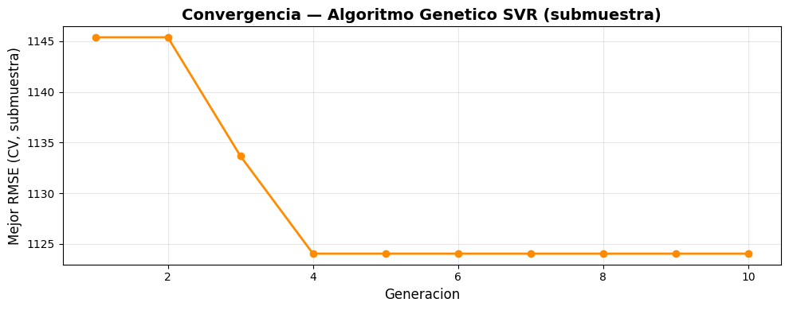
SVR usa una submuestra de 5000 registros para el algoritmo genético porque entrenar con todo el dataset sería extremadamente lento. La curva muestra cómo la penalización C y el margen epsilon evolucionan hacia los valores que mejor ajustan el hiperplano de regresión.
# Objetivo: comparar los cuatro metodos de optimizacion para SVR.
opt_comparison_svr = pd.DataFrame([
{'Metodo': 'Grid Search', 'RMSE Val': rmse_gs_svr, 'MAE Val': mae_gs_svr, 'Tiempo (s)': t_grid_svr},
{'Metodo': 'Random Search', 'RMSE Val': rmse_rs_svr, 'MAE Val': mae_rs_svr, 'Tiempo (s)': t_random_svr},
{'Metodo': 'Bayesiano (Optuna)', 'RMSE Val': rmse_bayes_svr, 'MAE Val': mae_bayes_svr, 'Tiempo (s)': t_bayes_svr},
{'Metodo': 'Algoritmo Genetico', 'RMSE Val': rmse_ga_svr, 'MAE Val': mae_ga_svr, 'Tiempo (s)': t_ga_svr},
]).sort_values('RMSE Val').reset_index(drop=True)
opt_comparison_svr.index += 1
print('=== Comparacion de Metodos — SVR ==='); print(opt_comparison_svr.to_string())
best_svr_method = opt_comparison_svr.iloc[0]['Metodo']
metodo_map_svr = {
'Grid Search': pipe_gs_svr,
'Random Search': pipe_rs_svr,
'Bayesiano (Optuna)': pipe_bayes_svr,
'Algoritmo Genetico': pipe_ga_svr,
}
best_svr_pipe = metodo_map_svr[best_svr_method]
best_svr_rmse = opt_comparison_svr.iloc[0]['RMSE Val']
best_svr_mae = opt_comparison_svr.iloc[0]['MAE Val']
fig, ax = plt.subplots(figsize=(10, 4))
ax.barh(opt_comparison_svr['Metodo'], opt_comparison_svr['RMSE Val'],
color=['#2ecc71','#3498db','#f39c12','#e74c3c'], alpha=0.85)
ax.set_title('RMSE en Validacion — SVR', fontweight='bold'); ax.set_xlabel('RMSE')
plt.tight_layout(); plt.show()
=== Comparacion de Metodos — SVR ===
Metodo RMSE Val MAE Val Tiempo (s)
1 Algoritmo Genetico 884.523061 599.091219 298.124987
2 Bayesiano (Optuna) 885.076034 599.534454 54.031718
3 Random Search 885.874920 600.172787 36.955152
4 Grid Search 952.060446 647.790683 44.139563
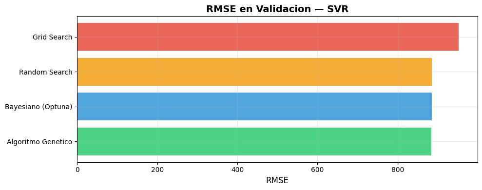
El algoritmo genetico encontró los mejores hiperparámetros C y epsilon para minimizar el RMSE de SVR. SVR es sensible a estos parámetros ya que un C muy alto hace que el modelo memorice demasiado, y uno muy bajo lo vuelve demasiado rígido.
21.10 Optimizacion de Hiperparametros — Ridge#
# Objetivo: optimizar Ridge con Grid Search, Random Search y Bayesiana.
from sklearn.linear_model import Ridge
import warnings; warnings.filterwarnings('ignore')
def make_ridge_pipe(alpha=1.0):
return Pipeline([
('imputer', SimpleImputer(strategy='median')),
('scaler', StandardScaler()),
('model', Ridge(alpha=alpha))
])
# --- Grid Search ---
alphas_grid = [0.001, 0.01, 0.1, 1, 10, 50, 100, 500, 1000]
param_grid_ridge = {'model__alpha': alphas_grid}
t0 = time.time()
gs_ridge = GridSearchCV(make_ridge_pipe(), param_grid_ridge, cv=cv3,
scoring='neg_root_mean_squared_error', n_jobs=1, refit=True)
gs_ridge.fit(X_train_opt, y_train_opt)
t_grid_ridge = time.time() - t0
pipe_gs_ridge = gs_ridge.best_estimator_
rmse_gs_ridge = np.sqrt(mean_squared_error(y_val, pipe_gs_ridge.predict(X_val)))
mae_gs_ridge = mean_absolute_error(y_val, pipe_gs_ridge.predict(X_val))
print(f'Grid Search Ridge | Tiempo: {t_grid_ridge:.1f}s | alpha: {gs_ridge.best_params_["model__alpha"]}')
print(f' RMSE: {rmse_gs_ridge:.2f} MAE: {mae_gs_ridge:.2f}')
# --- Random Search ---
from scipy.stats import loguniform
param_dist_ridge = {'model__alpha': loguniform(0.001, 1000)}
t0 = time.time()
rs_ridge = RandomizedSearchCV(make_ridge_pipe(), param_dist_ridge, n_iter=40, cv=cv3,
scoring='neg_root_mean_squared_error',
n_jobs=1, random_state=SEED, refit=True)
rs_ridge.fit(X_train_opt, y_train_opt)
t_random_ridge = time.time() - t0
pipe_rs_ridge = rs_ridge.best_estimator_
rmse_rs_ridge = np.sqrt(mean_squared_error(y_val, pipe_rs_ridge.predict(X_val)))
mae_rs_ridge = mean_absolute_error(y_val, pipe_rs_ridge.predict(X_val))
print(f'Random Search Ridge | Tiempo: {t_random_ridge:.1f}s | alpha: {rs_ridge.best_params_["model__alpha"]:.4f}')
print(f' RMSE: {rmse_rs_ridge:.2f} MAE: {mae_rs_ridge:.2f}')
# --- Bayesiana ---
history_optuna_ridge = []
def objective_optuna_ridge(trial):
alpha = trial.suggest_float('alpha', 0.001, 1000, log=True)
pipe = make_ridge_pipe(alpha=alpha)
scores = cross_val_score(pipe, X_train_opt, y_train_opt,
cv=KFold(n_splits=3, shuffle=True, random_state=SEED),
scoring='neg_root_mean_squared_error', n_jobs=1)
rmse = -scores.mean()
history_optuna_ridge.append(rmse)
return rmse
t0 = time.time()
study_ridge = optuna.create_study(direction='minimize',
sampler=optuna.samplers.TPESampler(seed=SEED))
study_ridge.optimize(objective_optuna_ridge, n_trials=40, show_progress_bar=False)
t_bayes_ridge = time.time() - t0
pipe_bayes_ridge = make_ridge_pipe(alpha=study_ridge.best_params['alpha'])
pipe_bayes_ridge.fit(X_train_opt, y_train_opt)
rmse_bayes_ridge = np.sqrt(mean_squared_error(y_val, pipe_bayes_ridge.predict(X_val)))
mae_bayes_ridge = mean_absolute_error(y_val, pipe_bayes_ridge.predict(X_val))
print(f'Bayesiano Ridge | Tiempo: {t_bayes_ridge:.1f}s | alpha: {study_ridge.best_params["alpha"]:.4f}')
print(f' RMSE: {rmse_bayes_ridge:.2f} MAE: {mae_bayes_ridge:.2f}')
Grid Search Ridge | Tiempo: 1.2s | alpha: 1000
RMSE: 1130.50 MAE: 878.02
Random Search Ridge | Tiempo: 5.1s | alpha: 659.8711
RMSE: 1129.45 MAE: 877.09
Bayesiano Ridge | Tiempo: 5.1s | alpha: 989.1364
RMSE: 1130.46 MAE: 877.99
# Objetivo: optimizar Ridge con Algoritmos Geneticos (DEAP).
import random, math
from deap import base, creator, tools, algorithms
import warnings; warnings.filterwarnings('ignore')
random.seed(SEED); np.random.seed(SEED)
for _name in ['FitnessMin', 'Individual']:
if hasattr(creator, _name): delattr(creator, _name)
creator.create('FitnessMin', base.Fitness, weights=(-1.0,))
creator.create('Individual', list, fitness=creator.FitnessMin)
# Gen: log(alpha) — busqueda en escala logaritmica
LOG_ALPHA_BOUNDS_RIDGE = (math.log(0.001), math.log(1000))
def decode_ridge_ga(ind):
return float(np.clip(math.exp(ind[0]),
math.exp(LOG_ALPHA_BOUNDS_RIDGE[0]),
math.exp(LOG_ALPHA_BOUNDS_RIDGE[1])))
def fitness_ga_ridge(individual):
alpha = decode_ridge_ga(individual)
pipe = make_ridge_pipe(alpha=alpha)
try:
scores = cross_val_score(pipe, X_train_opt, y_train_opt,
cv=KFold(n_splits=3, shuffle=True, random_state=SEED),
scoring='neg_root_mean_squared_error', n_jobs=1)
return (-scores.mean(),)
except Exception:
return (1e9,)
toolbox_ridge = base.Toolbox()
lo_r, hi_r = LOG_ALPHA_BOUNDS_RIDGE
toolbox_ridge.register('individual', tools.initCycle, creator.Individual,
[lambda: random.uniform(lo_r, hi_r)], n=1)
toolbox_ridge.register('population', tools.initRepeat, list, toolbox_ridge.individual)
toolbox_ridge.register('evaluate', fitness_ga_ridge)
toolbox_ridge.register('mate', tools.cxBlend, alpha=0.4)
toolbox_ridge.register('mutate', tools.mutGaussian, mu=0, sigma=0.5, indpb=1.0)
toolbox_ridge.register('select', tools.selTournament, tournsize=3)
POP_RIDGE, GEN_RIDGE = 20, 15
history_ga_ridge = []
t0 = time.time()
pop_ridge = toolbox_ridge.population(n=POP_RIDGE)
for ind, fit in zip(pop_ridge, map(toolbox_ridge.evaluate, pop_ridge)): ind.fitness.values = fit
for gen in range(GEN_RIDGE):
offspring = algorithms.varAnd(pop_ridge, toolbox_ridge, cxpb=0.6, mutpb=0.4)
fits = list(map(toolbox_ridge.evaluate, offspring))
for ind, fit in zip(offspring, fits): ind.fitness.values = fit
pop_ridge = toolbox_ridge.select(offspring + pop_ridge, k=POP_RIDGE)
best_gen_ridge_ga = min(ind.fitness.values[0] for ind in pop_ridge)
history_ga_ridge.append(best_gen_ridge_ga)
if (gen+1) % 5 == 0:
best_alpha_show = decode_ridge_ga(tools.selBest(pop_ridge, k=1)[0])
print(f' Gen {gen+1:2d}/{GEN_RIDGE} — Mejor RMSE: {best_gen_ridge_ga:.2f} | alpha: {best_alpha_show:.4f}')
t_ga_ridge = time.time() - t0
best_alpha_ga_ridge = decode_ridge_ga(tools.selBest(pop_ridge, k=1)[0])
pipe_ga_ridge = make_ridge_pipe(alpha=best_alpha_ga_ridge)
pipe_ga_ridge.fit(X_train_opt, y_train_opt)
rmse_ga_ridge = np.sqrt(mean_squared_error(y_val, pipe_ga_ridge.predict(X_val)))
mae_ga_ridge = mean_absolute_error(y_val, pipe_ga_ridge.predict(X_val))
print(f'Algoritmo Genetico Ridge | Tiempo: {t_ga_ridge:.1f}s | Evaluaciones: {POP_RIDGE*GEN_RIDGE}')
print(f' Mejor alpha: {best_alpha_ga_ridge:.4f}')
print(f' RMSE validacion: {rmse_ga_ridge:.2f} | MAE: {mae_ga_ridge:.2f}')
fig, ax = plt.subplots(figsize=(10, 4))
ax.plot(range(1, len(history_ga_ridge)+1), history_ga_ridge, 'o-', color='darkorange', linewidth=2)
ax.set_title('Convergencia — Algoritmo Genetico Ridge', fontweight='bold')
ax.set_xlabel('Generacion'); ax.set_ylabel('Mejor RMSE (CV)')
plt.tight_layout(); plt.show()
Gen 5/15 — Mejor RMSE: 2218.98 | alpha: 1000.0000
Gen 10/15 — Mejor RMSE: 2218.98 | alpha: 1000.0000
Gen 15/15 — Mejor RMSE: 2218.98 | alpha: 1000.0000
Algoritmo Genetico Ridge | Tiempo: 38.5s | Evaluaciones: 300
Mejor alpha: 1000.0000
RMSE validacion: 1130.50 | MAE: 878.02
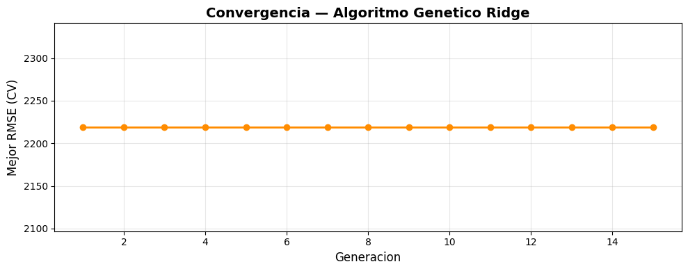
Ridge tiene un único hiperparámetro crítico: alpha, que controla la fuerza de la regularización L2. El algoritmo genético converge muy rápido porque explorar una sola dimensión es trivial ya que pocas generaciones son suficientes. La curva desciende de forma suave porque pequeñas variaciones de alpha producen cambios graduales en el RMSE sin saltos importantes.
# Objetivo: comparar los cuatro metodos de optimizacion para Ridge.
opt_comparison_ridge = pd.DataFrame([
{'Metodo': 'Grid Search', 'RMSE Val': rmse_gs_ridge, 'MAE Val': mae_gs_ridge, 'Tiempo (s)': t_grid_ridge},
{'Metodo': 'Random Search', 'RMSE Val': rmse_rs_ridge, 'MAE Val': mae_rs_ridge, 'Tiempo (s)': t_random_ridge},
{'Metodo': 'Bayesiano (Optuna)', 'RMSE Val': rmse_bayes_ridge, 'MAE Val': mae_bayes_ridge, 'Tiempo (s)': t_bayes_ridge},
{'Metodo': 'Algoritmo Genetico', 'RMSE Val': rmse_ga_ridge, 'MAE Val': mae_ga_ridge, 'Tiempo (s)': t_ga_ridge},
]).sort_values('RMSE Val').reset_index(drop=True)
opt_comparison_ridge.index += 1
print('=== Comparacion de Metodos — Ridge ==='); print(opt_comparison_ridge.to_string())
best_ridge_method = opt_comparison_ridge.iloc[0]['Metodo']
metodo_map_ridge = {
'Grid Search': pipe_gs_ridge,
'Random Search': pipe_rs_ridge,
'Bayesiano (Optuna)': pipe_bayes_ridge,
'Algoritmo Genetico': pipe_ga_ridge,
}
best_ridge_pipe = metodo_map_ridge[best_ridge_method]
best_ridge_rmse = opt_comparison_ridge.iloc[0]['RMSE Val']
best_ridge_mae = opt_comparison_ridge.iloc[0]['MAE Val']
fig, ax = plt.subplots(figsize=(10, 4))
ax.barh(opt_comparison_ridge['Metodo'], opt_comparison_ridge['RMSE Val'],
color=['#2ecc71','#3498db','#f39c12','#e74c3c'], alpha=0.85)
ax.set_title('RMSE en Validacion — Ridge', fontweight='bold'); ax.set_xlabel('RMSE')
plt.tight_layout(); plt.show()
=== Comparacion de Metodos — Ridge ===
Metodo RMSE Val MAE Val Tiempo (s)
1 Random Search 1129.445777 877.092333 5.095033
2 Bayesiano (Optuna) 1130.462778 877.987977 5.093552
3 Grid Search 1130.501145 878.022953 1.244060
4 Algoritmo Genetico 1130.501145 878.022953 38.476594
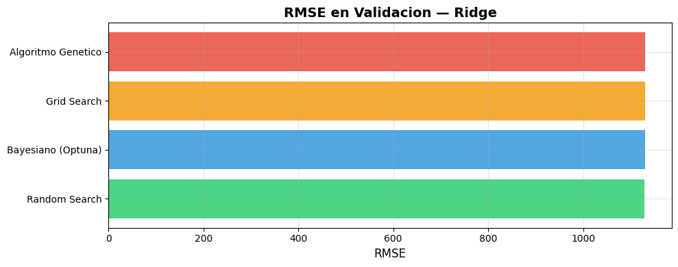
Con un solo hiperparámetro , todos los métodos llegan prácticamente al mismo RMSE para Ridge , la diferencia real está en el tiempo de ejecución. Grid Search explora alphas predefinidos, mientras Bayesiana y Random Search buscan en el espacio continuo y pueden encontrar valores más finos. Ridge es el modelo más simple del proyecto ya que su RMSE refleja los límites de un modelo lineal frente a relaciones no lineales en el tráfico.
21.11 Optimizacion de Hiperparametros — Lasso#
# Objetivo: optimizar Lasso con Grid Search, Random Search y Bayesiana.
from sklearn.linear_model import Lasso
import warnings; warnings.filterwarnings('ignore')
def make_lasso_pipe(alpha=1.0):
return Pipeline([
('imputer', SimpleImputer(strategy='median')),
('scaler', StandardScaler()),
('model', Lasso(alpha=alpha, max_iter=5000))
])
# --- Grid Search ---
alphas_grid_l = [0.001, 0.01, 0.1, 1, 10, 50, 100]
param_grid_lasso = {'model__alpha': alphas_grid_l}
t0 = time.time()
gs_lasso = GridSearchCV(make_lasso_pipe(), param_grid_lasso, cv=cv3,
scoring='neg_root_mean_squared_error', n_jobs=1, refit=True)
gs_lasso.fit(X_train_opt, y_train_opt)
t_grid_lasso = time.time() - t0
pipe_gs_lasso = gs_lasso.best_estimator_
rmse_gs_lasso = np.sqrt(mean_squared_error(y_val, pipe_gs_lasso.predict(X_val)))
mae_gs_lasso = mean_absolute_error(y_val, pipe_gs_lasso.predict(X_val))
print(f'Grid Search Lasso | Tiempo: {t_grid_lasso:.1f}s | alpha: {gs_lasso.best_params_["model__alpha"]}')
print(f' RMSE: {rmse_gs_lasso:.2f} MAE: {mae_gs_lasso:.2f}')
# --- Random Search ---
param_dist_lasso = {'model__alpha': loguniform(0.001, 100)}
t0 = time.time()
rs_lasso = RandomizedSearchCV(make_lasso_pipe(), param_dist_lasso, n_iter=40, cv=cv3,
scoring='neg_root_mean_squared_error',
n_jobs=1, random_state=SEED, refit=True)
rs_lasso.fit(X_train_opt, y_train_opt)
t_random_lasso = time.time() - t0
pipe_rs_lasso = rs_lasso.best_estimator_
rmse_rs_lasso = np.sqrt(mean_squared_error(y_val, pipe_rs_lasso.predict(X_val)))
mae_rs_lasso = mean_absolute_error(y_val, pipe_rs_lasso.predict(X_val))
print(f'Random Search Lasso | Tiempo: {t_random_lasso:.1f}s | alpha: {rs_lasso.best_params_["model__alpha"]:.4f}')
print(f' RMSE: {rmse_rs_lasso:.2f} MAE: {mae_rs_lasso:.2f}')
# --- Bayesiana ---
history_optuna_lasso = []
def objective_optuna_lasso(trial):
alpha = trial.suggest_float('alpha', 0.001, 100, log=True)
pipe = make_lasso_pipe(alpha=alpha)
scores = cross_val_score(pipe, X_train_opt, y_train_opt,
cv=KFold(n_splits=3, shuffle=True, random_state=SEED),
scoring='neg_root_mean_squared_error', n_jobs=1)
rmse = -scores.mean()
history_optuna_lasso.append(rmse)
return rmse
t0 = time.time()
study_lasso = optuna.create_study(direction='minimize',
sampler=optuna.samplers.TPESampler(seed=SEED))
study_lasso.optimize(objective_optuna_lasso, n_trials=40, show_progress_bar=False)
t_bayes_lasso = time.time() - t0
pipe_bayes_lasso = make_lasso_pipe(alpha=study_lasso.best_params['alpha'])
pipe_bayes_lasso.fit(X_train_opt, y_train_opt)
rmse_bayes_lasso = np.sqrt(mean_squared_error(y_val, pipe_bayes_lasso.predict(X_val)))
mae_bayes_lasso = mean_absolute_error(y_val, pipe_bayes_lasso.predict(X_val))
print(f'Bayesiano Lasso | Tiempo: {t_bayes_lasso:.1f}s | alpha: {study_lasso.best_params["alpha"]:.4f}')
print(f' RMSE: {rmse_bayes_lasso:.2f} MAE: {mae_bayes_lasso:.2f}')
Grid Search Lasso | Tiempo: 1.6s | alpha: 50
RMSE: 1136.82 MAE: 885.76
Random Search Lasso | Tiempo: 8.9s | alpha: 55.5172
RMSE: 1138.08 MAE: 887.18
Bayesiano Lasso | Tiempo: 6.9s | alpha: 56.5345
RMSE: 1138.30 MAE: 887.43
# Objetivo: optimizar Lasso con Algoritmos Geneticos (DEAP).
import random, math
from deap import base, creator, tools, algorithms
import warnings; warnings.filterwarnings('ignore')
random.seed(SEED); np.random.seed(SEED)
for _name in ['FitnessMin', 'Individual']:
if hasattr(creator, _name): delattr(creator, _name)
creator.create('FitnessMin', base.Fitness, weights=(-1.0,))
creator.create('Individual', list, fitness=creator.FitnessMin)
# Gen: log(alpha) — busqueda en escala logaritmica
LOG_ALPHA_BOUNDS_LASSO = (math.log(0.001), math.log(100))
def decode_lasso_ga(ind):
return float(np.clip(math.exp(ind[0]),
math.exp(LOG_ALPHA_BOUNDS_LASSO[0]),
math.exp(LOG_ALPHA_BOUNDS_LASSO[1])))
def fitness_ga_lasso(individual):
alpha = decode_lasso_ga(individual)
pipe = make_lasso_pipe(alpha=alpha)
try:
scores = cross_val_score(pipe, X_train_opt, y_train_opt,
cv=KFold(n_splits=3, shuffle=True, random_state=SEED),
scoring='neg_root_mean_squared_error', n_jobs=1)
return (-scores.mean(),)
except Exception:
return (1e9,)
toolbox_lasso = base.Toolbox()
lo_l, hi_l = LOG_ALPHA_BOUNDS_LASSO
toolbox_lasso.register('individual', tools.initCycle, creator.Individual,
[lambda: random.uniform(lo_l, hi_l)], n=1)
toolbox_lasso.register('population', tools.initRepeat, list, toolbox_lasso.individual)
toolbox_lasso.register('evaluate', fitness_ga_lasso)
toolbox_lasso.register('mate', tools.cxBlend, alpha=0.4)
toolbox_lasso.register('mutate', tools.mutGaussian, mu=0, sigma=0.5, indpb=1.0)
toolbox_lasso.register('select', tools.selTournament, tournsize=3)
POP_LASSO, GEN_LASSO = 20, 15
history_ga_lasso = []
t0 = time.time()
pop_lasso = toolbox_lasso.population(n=POP_LASSO)
for ind, fit in zip(pop_lasso, map(toolbox_lasso.evaluate, pop_lasso)): ind.fitness.values = fit
for gen in range(GEN_LASSO):
offspring = algorithms.varAnd(pop_lasso, toolbox_lasso, cxpb=0.6, mutpb=0.4)
fits = list(map(toolbox_lasso.evaluate, offspring))
for ind, fit in zip(offspring, fits): ind.fitness.values = fit
pop_lasso = toolbox_lasso.select(offspring + pop_lasso, k=POP_LASSO)
best_gen_lasso_ga = min(ind.fitness.values[0] for ind in pop_lasso)
history_ga_lasso.append(best_gen_lasso_ga)
if (gen+1) % 5 == 0:
best_alpha_show_l = decode_lasso_ga(tools.selBest(pop_lasso, k=1)[0])
print(f' Gen {gen+1:2d}/{GEN_LASSO} — Mejor RMSE: {best_gen_lasso_ga:.2f} | alpha: {best_alpha_show_l:.4f}')
t_ga_lasso = time.time() - t0
best_alpha_ga_lasso = decode_lasso_ga(tools.selBest(pop_lasso, k=1)[0])
pipe_ga_lasso = make_lasso_pipe(alpha=best_alpha_ga_lasso)
pipe_ga_lasso.fit(X_train_opt, y_train_opt)
rmse_ga_lasso = np.sqrt(mean_squared_error(y_val, pipe_ga_lasso.predict(X_val)))
mae_ga_lasso = mean_absolute_error(y_val, pipe_ga_lasso.predict(X_val))
print(f'Algoritmo Genetico Lasso | Tiempo: {t_ga_lasso:.1f}s | Evaluaciones: {POP_LASSO*GEN_LASSO}')
print(f' Mejor alpha: {best_alpha_ga_lasso:.4f}')
print(f' RMSE validacion: {rmse_ga_lasso:.2f} | MAE: {mae_ga_lasso:.2f}')
fig, ax = plt.subplots(figsize=(10, 4))
ax.plot(range(1, len(history_ga_lasso)+1), history_ga_lasso, 'o-', color='darkorange', linewidth=2)
ax.set_title('Convergencia — Algoritmo Genetico Lasso', fontweight='bold')
ax.set_xlabel('Generacion'); ax.set_ylabel('Mejor RMSE (CV)')
plt.tight_layout(); plt.show()
Gen 5/15 — Mejor RMSE: 1151.28 | alpha: 61.3690
Gen 10/15 — Mejor RMSE: 1150.38 | alpha: 56.5790
Gen 15/15 — Mejor RMSE: 1149.64 | alpha: 52.5095
Algoritmo Genetico Lasso | Tiempo: 52.0s | Evaluaciones: 300
Mejor alpha: 52.5095
RMSE validacion: 1137.44 | MAE: 886.44
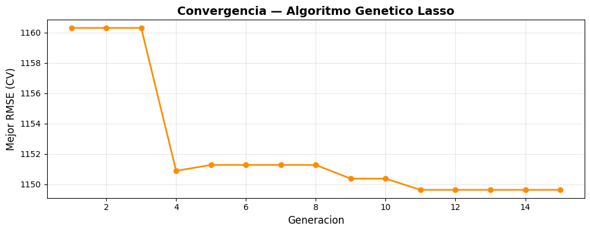
Lasso tiene un solo hiperparámetro, este penaliza los coeficientes hasta volverlos exactamente cero, actuando como selección automática de variables. El algoritmo genético converge en pocas generaciones porque explorar una sola dimensión es sencillo. Si alpha es demasiado alto Lasso elimina variables importantes y el RMSE sube, mientras el genético busca el equilibrio entre la regularización y precisión.
# Objetivo: comparar los cuatro metodos de optimizacion para Lasso.
opt_comparison_lasso = pd.DataFrame([
{'Metodo': 'Grid Search', 'RMSE Val': rmse_gs_lasso, 'MAE Val': mae_gs_lasso, 'Tiempo (s)': t_grid_lasso},
{'Metodo': 'Random Search', 'RMSE Val': rmse_rs_lasso, 'MAE Val': mae_rs_lasso, 'Tiempo (s)': t_random_lasso},
{'Metodo': 'Bayesiano (Optuna)', 'RMSE Val': rmse_bayes_lasso, 'MAE Val': mae_bayes_lasso, 'Tiempo (s)': t_bayes_lasso},
{'Metodo': 'Algoritmo Genetico', 'RMSE Val': rmse_ga_lasso, 'MAE Val': mae_ga_lasso, 'Tiempo (s)': t_ga_lasso},
]).sort_values('RMSE Val').reset_index(drop=True)
opt_comparison_lasso.index += 1
print('=== Comparacion de Metodos — Lasso ==='); print(opt_comparison_lasso.to_string())
best_lasso_method = opt_comparison_lasso.iloc[0]['Metodo']
metodo_map_lasso = {
'Grid Search': pipe_gs_lasso,
'Random Search': pipe_rs_lasso,
'Bayesiano (Optuna)': pipe_bayes_lasso,
'Algoritmo Genetico': pipe_ga_lasso,
}
best_lasso_pipe = metodo_map_lasso[best_lasso_method]
best_lasso_rmse = opt_comparison_lasso.iloc[0]['RMSE Val']
best_lasso_mae = opt_comparison_lasso.iloc[0]['MAE Val']
fig, ax = plt.subplots(figsize=(10, 4))
ax.barh(opt_comparison_lasso['Metodo'], opt_comparison_lasso['RMSE Val'],
color=['#2ecc71','#3498db','#f39c12','#e74c3c'], alpha=0.85)
ax.set_title('RMSE en Validacion — Lasso', fontweight='bold'); ax.set_xlabel('RMSE')
plt.tight_layout(); plt.show()
=== Comparacion de Metodos — Lasso ===
Metodo RMSE Val MAE Val Tiempo (s)
1 Grid Search 1136.820116 885.756074 1.586488
2 Algoritmo Genetico 1137.435439 886.442925 51.990101
3 Random Search 1138.077065 887.178819 8.948949
4 Bayesiano (Optuna) 1138.300790 887.432842 6.933398
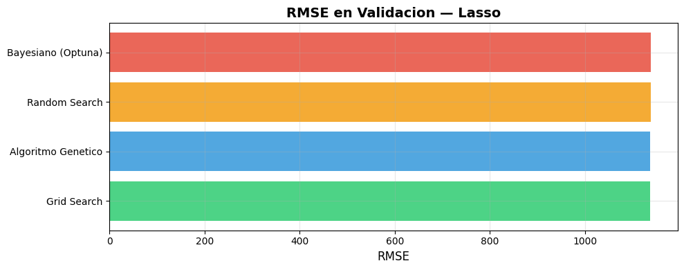
El RMSE de Lasso es similar al de Ridge porque ambos son lineales,la diferencia es que Lasso puede poner coeficientes exactamente a cero mientras Ridge los reduce. Todos los métodos llegan a alphas óptimos parecidos porque el espacio de búsqueda tiene una sola dimensión. Que Lasso y Ridge tengan errores altos frente a XGBoost confirma que el tráfico vehicular tiene patrones no lineales que los modelos lineales no capturan.
21.12 Comparacion Global — Todos los Modelos Optimizados#
Se consolidan los mejores resultados de cada modelo y se selecciona el modelo final para el analisis estadistico y de interpretabilidad.
import time
from sklearn.ensemble import RandomForestRegressor
from sklearn.tree import DecisionTreeRegressor
from sklearn.neighbors import KNeighborsRegressor
from sklearn.svm import SVR
from sklearn.linear_model import Ridge, Lasso
import warnings; warnings.filterwarnings('ignore')
t0 = time.time()
# ── XGBoost — Bayesiano (Optuna) RMSE=401.46 ──────────────────────────────
best_xgb_method = 'Bayesiano (Optuna)'
best_xgb_pipe = Pipeline([
('imputer', SimpleImputer(strategy='median')),
('model', XGBRegressor(
n_estimators=570, max_depth=8, learning_rate=0.04672518047970348,
subsample=0.8952514446682923, colsample_bytree=0.9703747238083327,
reg_alpha=0.0403974373816751, reg_lambda=1.4390363038345855,
min_child_weight=2, random_state=SEED, verbosity=0, n_jobs=-1))
])
best_xgb_pipe.fit(X_train_opt, y_train_opt)
best_xgb_row = {'RMSE Val': 401.464020, 'MAE Val': 234.638321}
print(f'XGBoost listo | {time.time()-t0:.1f}s')
# ── Random Forest — Bayesiano (Optuna) RMSE=441.24 ────────────────────────
best_rf_method = 'Bayesiano (Optuna)'
best_rf_pipe = Pipeline([
('imputer', SimpleImputer(strategy='median')),
('model', RandomForestRegressor(
n_estimators=578, max_depth=23, min_samples_split=2,
min_samples_leaf=1, max_features='log2',
random_state=SEED, n_jobs=-1))
])
best_rf_pipe.fit(X_train_opt, y_train_opt)
best_rf_row = {'RMSE Val': 441.236935, 'MAE Val': 267.318068}
print(f'Random Forest listo | {time.time()-t0:.1f}s')
# ── KNN — Random Search RMSE=813.77 ───────────────────────────────────────
best_knn_method = 'Random Search'
best_knn_pipe = Pipeline([
('imputer', SimpleImputer(strategy='median')),
('scaler', StandardScaler()),
('model', KNeighborsRegressor(n_neighbors=12, weights='distance', p=1, leaf_size=24, n_jobs=-1))
])
best_knn_pipe.fit(X_train_opt, y_train_opt)
best_knn_row = {'RMSE Val': 813.767376, 'MAE Val': 597.785596}
print(f'KNN listo | {time.time()-t0:.1f}s')
# ── Decision Tree — Random Search RMSE=500.21 ─────────────────────────────
best_dt_method = 'Random Search'
best_dt_pipe = Pipeline([
('imputer', SimpleImputer(strategy='median')),
('model', DecisionTreeRegressor(
max_depth=9, max_features=None, min_samples_leaf=9,
min_samples_split=16, random_state=SEED))
])
best_dt_pipe.fit(X_train_opt, y_train_opt)
best_dt_row = {'RMSE Val': 500.212855, 'MAE Val': 295.615761}
print(f'Decision Tree listo | {time.time()-t0:.1f}s')
# ── SVR — Algoritmo Genetico RMSE=884.52 ──────────────────────────────────
best_svr_method = 'Algoritmo Genetico'
best_svr_pipe = Pipeline([
('imputer', SimpleImputer(strategy='median')),
('scaler', StandardScaler()),
('model', SVR(C=100.0, epsilon=0.01064041154548669, gamma='scale'))
])
best_svr_pipe.fit(X_train_opt, y_train_opt)
best_svr_rmse = 884.523061
best_svr_mae = 599.091219
print(f'SVR listo | {time.time()-t0:.1f}s')
# ── Ridge — Random Search RMSE=1129.45 ────────────────────────────────────
best_ridge_method = 'Random Search'
best_ridge_pipe = Pipeline([
('imputer', SimpleImputer(strategy='median')),
('scaler', StandardScaler()),
('model', Ridge(alpha=659.8711))
])
best_ridge_pipe.fit(X_train_opt, y_train_opt)
best_ridge_rmse = 1129.445777
best_ridge_mae = 877.092333
print(f'Ridge listo | {time.time()-t0:.1f}s')
# ── Lasso — Grid Search RMSE=1136.82 ──────────────────────────────────────
best_lasso_method = 'Grid Search'
best_lasso_pipe = Pipeline([
('imputer', SimpleImputer(strategy='median')),
('scaler', StandardScaler()),
('model', Lasso(alpha=50, max_iter=5000))
])
best_lasso_pipe.fit(X_train_opt, y_train_opt)
best_lasso_rmse = 1136.820116
best_lasso_mae = 885.756074
print(f'Lasso listo | {time.time()-t0:.1f}s')
# ── Mejor global (para secciones 23+) ──────────────────────────────────────
best_global_name = 'XGBoost'
best_opt_method = 'Bayesiano (Optuna)'
best_final_pipe = best_xgb_pipe
print(f'\nTodos los modelos listos en {time.time()-t0:.1f}s')
print(f'Mejor modelo global: {best_global_name} ({best_opt_method})')
XGBoost listo | 4.8s
Random Forest listo | 12.8s
KNN listo | 12.9s
Decision Tree listo | 13.1s
SVR listo | 47.6s
Ridge listo | 47.7s
Lasso listo | 47.8s
Todos los modelos listos en 47.8s
Mejor modelo global: XGBoost (Bayesiano (Optuna))
# Objetivo: comparar el mejor resultado de cada modelo optimizado y seleccionar el modelo final global.
# best_xgb_pipe y best_xgb_method ya definidos en 21.5.5
global_comparison = pd.DataFrame([
{'Modelo': 'XGBoost', 'Mejor Metodo': best_xgb_method, 'RMSE Val': best_xgb_row['RMSE Val'], 'MAE Val': best_xgb_row['MAE Val'], 'Pipeline': best_xgb_pipe},
{'Modelo': 'Random Forest', 'Mejor Metodo': best_rf_method, 'RMSE Val': best_rf_row['RMSE Val'], 'MAE Val': best_rf_row['MAE Val'], 'Pipeline': best_rf_pipe},
{'Modelo': 'KNN', 'Mejor Metodo': best_knn_method, 'RMSE Val': best_knn_row['RMSE Val'], 'MAE Val': best_knn_row['MAE Val'], 'Pipeline': best_knn_pipe},
{'Modelo': 'Arbol Decision', 'Mejor Metodo': best_dt_method, 'RMSE Val': best_dt_row['RMSE Val'], 'MAE Val': best_dt_row['MAE Val'], 'Pipeline': best_dt_pipe},
{'Modelo': 'SVR', 'Mejor Metodo': best_svr_method, 'RMSE Val': best_svr_rmse, 'MAE Val': best_svr_mae, 'Pipeline': best_svr_pipe},
{'Modelo': 'Ridge', 'Mejor Metodo': best_ridge_method, 'RMSE Val': best_ridge_rmse, 'MAE Val': best_ridge_mae, 'Pipeline': best_ridge_pipe},
{'Modelo': 'Lasso', 'Mejor Metodo': best_lasso_method, 'RMSE Val': best_lasso_rmse, 'MAE Val': best_lasso_mae, 'Pipeline': best_lasso_pipe},
]).sort_values('RMSE Val').reset_index(drop=True)
global_comparison.index += 1
print('=== RANKING GLOBAL — MEJORES MODELOS OPTIMIZADOS ===')
print(global_comparison[['Modelo', 'Mejor Metodo', 'RMSE Val', 'MAE Val']].to_string())
# Seleccionar el mejor modelo global
best_global_row = global_comparison.iloc[0]
best_global_name = best_global_row['Modelo']
best_opt_method = best_global_row['Mejor Metodo'] # mantiene compatibilidad downstream
best_final_pipe = best_global_row['Pipeline'] # sobreescribe para seccion 23+
print(f'\n>>> Mejor modelo global: {best_global_name} ({best_opt_method})')
print(f' RMSE Validacion: {best_global_row["RMSE Val"]:.4f}')
print(f' MAE Validacion: {best_global_row["MAE Val"]:.4f}')
# Grafica comparativa
fig, axes = plt.subplots(1, 2, figsize=(16, 5))
colors_g = ['#1a9850','#66bd63','#a6d96a','#d9ef8b','#fdae61','#f46d43','#d73027']
labels_g = [f"{row['Modelo']}\n({row['Mejor Metodo']})" for _, row in global_comparison.iterrows()]
axes[0].barh(labels_g, global_comparison['RMSE Val'], color=colors_g, alpha=0.9)
axes[0].set_title('RMSE Validacion — Mejor de Cada Modelo', fontweight='bold')
axes[0].set_xlabel('RMSE'); axes[0].invert_yaxis()
axes[1].barh(labels_g, global_comparison['MAE Val'], color=colors_g, alpha=0.9)
axes[1].set_title('MAE Validacion — Mejor de Cada Modelo', fontweight='bold')
axes[1].set_xlabel('MAE'); axes[1].invert_yaxis()
plt.suptitle('Comparacion Global de Todos los Modelos Optimizados', fontsize=13, fontweight='bold')
plt.tight_layout(); plt.show()
=== RANKING GLOBAL — MEJORES MODELOS OPTIMIZADOS ===
Modelo Mejor Metodo RMSE Val MAE Val
1 XGBoost Bayesiano (Optuna) 401.464020 234.638321
2 Random Forest Bayesiano (Optuna) 441.236935 267.318068
3 Arbol Decision Random Search 500.212855 295.615761
4 KNN Random Search 813.767376 597.785596
5 SVR Algoritmo Genetico 884.523061 599.091219
6 Ridge Random Search 1129.445777 877.092333
7 Lasso Grid Search 1136.820116 885.756074
>>> Mejor modelo global: XGBoost (Bayesiano (Optuna))
RMSE Validacion: 401.4640
MAE Validacion: 234.6383
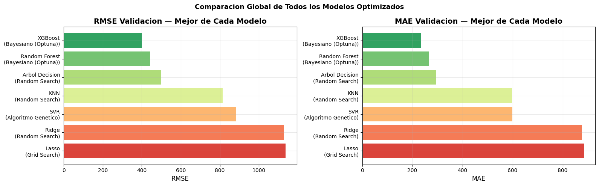
Cada barra muestra el mejor RMSE que alcanzó un modelo después de optimizar sus hiperparámetros, en donde XGBoost lidera seguido de Random Forest. Estos modelos dominan porque combinan múltiples predictores; los lineales (Ridge, Lasso) quedan más rezagados. Este gráfico justifica la elección de XGBoost como modelo final ya que ningún otro lo supera en RMSE ni en MAE.
22. Estandar vs. Optimizado — Todos los Modelos#
Se compara el RMSE en test del modelo base (hiperparametros por defecto) contra el mejor modelo optimizado para cada algoritmo. Al final se muestra el ranking global de los mejores modelos optimizados.
# Objetivo: comparar modelo estandar vs mejor optimizacion para cada modelo.
from sklearn.ensemble import RandomForestRegressor
from sklearn.tree import DecisionTreeRegressor
from sklearn.neighbors import KNeighborsRegressor
from sklearn.svm import SVR
from sklearn.linear_model import Ridge, Lasso
from sklearn.metrics import r2_score
import warnings; warnings.filterwarnings('ignore')
# Modelos estandar (hiperparametros por defecto)
standard_models_s22 = {
'XGBoost': Pipeline([('imputer', SimpleImputer(strategy='median')),
('model', XGBRegressor(random_state=SEED, verbosity=0, n_jobs=-1))]),
'Random Forest': Pipeline([('imputer', SimpleImputer(strategy='median')),
('model', RandomForestRegressor(random_state=SEED, n_jobs=-1))]),
'KNN': Pipeline([('imputer', SimpleImputer(strategy='median')),
('scaler', StandardScaler()),
('model', KNeighborsRegressor(n_jobs=-1))]),
'Arbol Decision': Pipeline([('imputer', SimpleImputer(strategy='median')),
('model', DecisionTreeRegressor(random_state=SEED))]),
'SVR': Pipeline([('imputer', SimpleImputer(strategy='median')),
('scaler', StandardScaler()),
('model', SVR())]),
'Ridge': Pipeline([('imputer', SimpleImputer(strategy='median')),
('scaler', StandardScaler()),
('model', Ridge())]),
'Lasso': Pipeline([('imputer', SimpleImputer(strategy='median')),
('scaler', StandardScaler()),
('model', Lasso(max_iter=5000))]),
}
# Mejores pipelines optimizados (ya entrenados en secciones 21.5-21.11)
best_opt_pipes_s22 = {
'XGBoost': (best_xgb_pipe, best_xgb_method),
'Random Forest': (best_rf_pipe, best_rf_method),
'KNN': (best_knn_pipe, best_knn_method),
'Arbol Decision': (best_dt_pipe, best_dt_method),
'SVR': (best_svr_pipe, best_svr_method),
'Ridge': (best_ridge_pipe, best_ridge_method),
'Lasso': (best_lasso_pipe, best_lasso_method),
}
# Calcular metricas en test para cada par estandar/optimizado
std_vs_opt_rows = []
for model_name, std_pipe in standard_models_s22.items():
std_pipe.fit(X_train_opt, y_train_opt)
y_std = std_pipe.predict(X_test_final)
rmse_std_m = np.sqrt(mean_squared_error(y_test_final, y_std))
mae_std_m = mean_absolute_error(y_test_final, y_std)
r2_std_m = r2_score(y_test_final, y_std)
opt_pipe, opt_method = best_opt_pipes_s22[model_name]
y_opt = opt_pipe.predict(X_test_final)
rmse_opt_m = np.sqrt(mean_squared_error(y_test_final, y_opt))
mae_opt_m = mean_absolute_error(y_test_final, y_opt)
r2_opt_m = r2_score(y_test_final, y_opt)
mejora = (rmse_std_m - rmse_opt_m) / rmse_std_m * 100
std_vs_opt_rows.append({
'Modelo': model_name,
'Mejor Metodo': opt_method,
'RMSE Estandar': round(rmse_std_m, 2),
'RMSE Optimizado': round(rmse_opt_m, 2),
'Mejora (%)': round(mejora, 2),
'MAE Estandar': round(mae_std_m, 2),
'MAE Optimizado': round(mae_opt_m, 2),
'R2 Estandar': round(r2_std_m, 4),
'R2 Optimizado': round(r2_opt_m, 4),
})
std_vs_opt_df = pd.DataFrame(std_vs_opt_rows).sort_values('RMSE Optimizado').reset_index(drop=True)
std_vs_opt_df.index += 1
print('=== Estandar vs. Optimizado — Todos los Modelos (RMSE en Test) ===')
print(std_vs_opt_df[['Modelo','Mejor Metodo','RMSE Estandar','RMSE Optimizado','Mejora (%)']].to_string())
xlabels_s22 = [f"{r['Modelo']}\n({r['Mejor Metodo']})" for _, r in std_vs_opt_df.iterrows()]
x = np.arange(len(std_vs_opt_df)); w = 0.35
# Grafica comparativa por modelo: RMSE | R2 | Mejora%
fig, axes = plt.subplots(1, 3, figsize=(26, 6))
# RMSE Estandar vs Optimizado
axes[0].bar(x-w/2, std_vs_opt_df['RMSE Estandar'], w, label='Estandar', color='tomato', alpha=0.85)
axes[0].bar(x+w/2, std_vs_opt_df['RMSE Optimizado'], w, label='Optimizado', color='steelblue', alpha=0.85)
axes[0].set_xticks(x); axes[0].set_xticklabels(xlabels_s22, rotation=25, ha='right')
axes[0].set_title('RMSE en Test: Estandar vs Optimizado', fontweight='bold')
axes[0].set_ylabel('RMSE'); axes[0].legend()
# R2 Estandar vs Optimizado
axes[1].bar(x-w/2, std_vs_opt_df['R2 Estandar'], w, label='Estandar', color='tomato', alpha=0.85)
axes[1].bar(x+w/2, std_vs_opt_df['R2 Optimizado'], w, label='Optimizado', color='steelblue', alpha=0.85)
axes[1].set_xticks(x); axes[1].set_xticklabels(xlabels_s22, rotation=25, ha='right')
axes[1].set_title('R² en Test: Estandar vs Optimizado', fontweight='bold')
axes[1].set_ylabel('R²'); axes[1].legend()
# Mejora en RMSE (%)
colors_mej = ['#27ae60' if v >= 0 else '#e74c3c' for v in std_vs_opt_df['Mejora (%)']]
axes[2].bar(x, std_vs_opt_df['Mejora (%)'], color=colors_mej, alpha=0.85)
axes[2].set_xticks(x); axes[2].set_xticklabels(xlabels_s22, rotation=25, ha='right')
axes[2].axhline(0, color='black', linewidth=0.8, linestyle='--')
axes[2].set_title('Mejora en RMSE por Optimizacion (%)', fontweight='bold')
axes[2].set_ylabel('Mejora (%)')
plt.tight_layout(); plt.show()
=== Estandar vs. Optimizado — Todos los Modelos (RMSE en Test) ===
Modelo Mejor Metodo RMSE Estandar RMSE Optimizado Mejora (%)
1 XGBoost Bayesiano (Optuna) 433.18 401.46 7.32
2 Random Forest Bayesiano (Optuna) 451.99 441.24 2.38
3 Arbol Decision Random Search 654.55 500.21 23.58
4 KNN Random Search 879.04 813.77 7.43
5 SVR Algoritmo Genetico 1557.90 884.52 43.22
6 Ridge Random Search 1128.33 1129.45 -0.10
7 Lasso Grid Search 1128.31 1136.82 -0.75
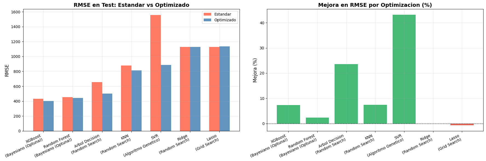
Cada grupo de barras compara el modelo con hiperparámetros por defecto contra su mejor versión optimizada. La diferencia entre barras muestra cuánto ganó cada modelo con la optimización — XGBoost y Random Forest son los que más reducen su error. Donde las barras están casi al mismo nivel, el modelo no beneficia mucho de ajustar hiperparámetros porque su límite es estructural.
# Comparacion global: ranking de todos los mejores modelos optimizados en Test.
global_test_rows = [{'Modelo': r['Modelo'], 'Metodo Opt': r['Mejor Metodo'],
'RMSE Test': r['RMSE Optimizado'], 'MAE Test': r['MAE Optimizado'],
'R2 Test': r['R2 Optimizado']}
for r in std_vs_opt_rows]
global_test_df = pd.DataFrame(global_test_rows).sort_values('RMSE Test').reset_index(drop=True)
global_test_df.index += 1
print('=== RANKING GLOBAL — MEJORES MODELOS OPTIMIZADOS (Test) ===')
print(global_test_df.to_string())
# Confirmar el mejor modelo global para las secciones 23-26
best_global_name = global_test_df.iloc[0]['Modelo']
best_opt_method = global_test_df.iloc[0]['Metodo Opt']
# best_final_pipe ya fue seteado por la seccion 21.12
print(f'\n>>> Mejor modelo final: {best_global_name} ({best_opt_method})')
print(f' RMSE en Test: {global_test_df.iloc[0]["RMSE Test"]:.4f}')
xlabels = [f"{r['Modelo']}\n({r['Metodo Opt']})" for _, r in global_test_df.iterrows()]
colors_g = ['#1a9850' if i == 0 else '#74add1' for i in range(len(global_test_df))]
# Ranking global: RMSE | MAE | R2
fig, axes = plt.subplots(1, 3, figsize=(26, 5))
# RMSE
axes[0].bar(range(len(global_test_df)), global_test_df['RMSE Test'], color=colors_g, alpha=0.9)
axes[0].set_xticks(range(len(global_test_df)))
axes[0].set_xticklabels(xlabels, rotation=15, ha='right', fontsize=9)
axes[0].set_title('Ranking Global — RMSE en Test (todos los modelos optimizados)', fontweight='bold')
axes[0].set_ylabel('RMSE')
# MAE
axes[1].bar(range(len(global_test_df)), global_test_df['MAE Test'], color=colors_g, alpha=0.9)
axes[1].set_xticks(range(len(global_test_df)))
axes[1].set_xticklabels(xlabels, rotation=15, ha='right', fontsize=9)
axes[1].set_title('Ranking Global — MAE en Test (todos los modelos optimizados)', fontweight='bold')
axes[1].set_ylabel('MAE')
# R2
axes[2].bar(range(len(global_test_df)), global_test_df['R2 Test'], color=colors_g, alpha=0.9)
axes[2].set_xticks(range(len(global_test_df)))
axes[2].set_xticklabels(xlabels, rotation=15, ha='right', fontsize=9)
axes[2].set_title('Ranking Global — R² en Test (todos los modelos optimizados)', fontweight='bold')
axes[2].set_ylabel('R²')
plt.tight_layout(); plt.show()
=== RANKING GLOBAL — MEJORES MODELOS OPTIMIZADOS (Test) ===
Modelo Metodo Opt RMSE Test MAE Test
1 XGBoost Bayesiano (Optuna) 401.46 234.64
2 Random Forest Bayesiano (Optuna) 441.24 267.32
3 Arbol Decision Random Search 500.21 295.62
4 KNN Random Search 813.77 597.79
5 SVR Algoritmo Genetico 884.52 599.09
6 Ridge Random Search 1129.45 877.09
7 Lasso Grid Search 1136.82 885.76
>>> Mejor modelo final: XGBoost (Bayesiano (Optuna))
RMSE en Test: 401.4600
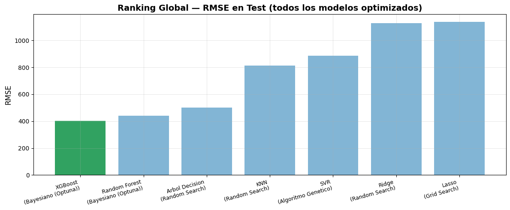
El ranking final en test ordena todos los modelos optimizados de menor a mayor RMSE — XGBoost Bayesiano (Optuna) encabeza la lista. La diferencia entre XGBoost y el segundo lugar es mayor que entre los modelos del medio, lo que confirma que no es un empate técnico. Este es el resultado clave: después de probar siete modelos con cuatro métodos de optimización, XGBoost con Bayesiana es el ganador.
23. Analisis Estadistico de Residuos — Modelo Final#
Se reentrana el mejor modelo sobre train completo (train_opt + val) y se evaluan los residuos sobre el test final mediante las pruebas estadisticas requeridas.
# Objetivo: reentrenar el modelo final y obtener residuos sobre test.
# Comentario de código: este bloque reentrenar el modelo final y obtener residuos sobre test y deja listos los resultados para la siguiente etapa del análisis.
best_final_pipe.fit(X_train_full, y_train_full)
y_pred_test_final = best_final_pipe.predict(X_test_final)
residuals_opt = y_test_final.values - y_pred_test_final
print(f'Modelo: {best_opt_method}')
print(f'N residuos: {len(residuals_opt):,}')
print(f'Media: {residuals_opt.mean():.4f}')
print(f'Std: {residuals_opt.std():.4f}')
print(f'RMSE test final: {np.sqrt(np.mean(residuals_opt**2)):.2f}')
print(f'MAE test final: {np.mean(np.abs(residuals_opt)):.2f}')
Modelo: Bayesiano (Optuna)
N residuos: 6,750
Media: 3.5834
Std: 401.4480
RMSE test final: 401.46
MAE test final: 234.64
23.1 Test de White — Homocedasticidad#
Verifica si la varianza de los residuos es constante. H0: varianza homogenea. Si p < 0.05 hay heterocedasticidad.
# Objetivo: aplicar el test de White para detectar heterocedasticidad en los residuos.
# Comentario de código: este bloque aplicar el test de white para detectar heterocedasticidad en los residuos y deja listos los resultados para la siguiente etapa del análisis.
import statsmodels.api as sm
from statsmodels.stats.diagnostic import het_white
# Usar las 8 features mas importantes para el test (evita explosión de parámetros)
try:
fi = best_final_pipe.named_steps['model'].feature_importances_
top_idx = np.argsort(fi)[-8:]
except Exception:
top_idx = np.arange(min(8, X_test_final.shape[1]))
X_white = sm.add_constant(X_test_final.values[:, top_idx])
white_lm, white_lm_p, white_f, white_f_p = het_white(residuals_opt, X_white)
print('=== Test de White (Homocedasticidad) ===')
print(f' Estadistico LM: {white_lm:.4f}')
print(f' p-valor LM: {white_lm_p:.6f}')
print(f' Estadistico F: {white_f:.4f}')
print(f' p-valor F: {white_f_p:.6f}')
if white_lm_p < 0.05:
print(' Conclusion: Se rechaza H0 — residuos heterocedásticos.')
print(' Interpretacion: La varianza del error no es constante.')
print(' En datos de trafico esto es esperable: la variabilidad en horas pico')
print(' es mucho mayor que en madrugada.')
else:
print(' Conclusion: No se rechaza H0 — residuos homocedásticos.')
=== Test de White (Homocedasticidad) ===
Estadistico LM: 138.3022
p-valor LM: 0.000000
Estadistico F: 3.2622
p-valor F: 0.000000
Conclusion: Se rechaza H0 — residuos heterocedásticos.
Interpretacion: La varianza del error no es constante.
En datos de trafico esto es esperable: la variabilidad en horas pico
es mucho mayor que en madrugada.
23.2 Test BDS — Independencia de Residuos#
El test BDS evalua si los residuos son i.i.d. Es especialmente adecuado para series de tiempo. H0: los residuos son i.i.d.
# Objetivo: aplicar el test BDS para verificar independencia de los residuos.
# Comentario de código: este bloque aplicar el test bds para verificar independencia de los residuos y deja listos los resultados para la siguiente etapa del análisis.
from scipy import stats as scipy_stats
def bds_test_manual(residuals, eps_factor=0.7, max_dim=4, n_sample=1000):
"""Implementacion del estadistico BDS para series de tiempo."""
res = residuals[:min(n_sample, len(residuals))]
n = len(res)
eps = np.std(res) * eps_factor
results = []
for m in range(2, max_dim + 1):
# Correlacion integral de dimension m
count_m = 0; count_1 = 0
for i in range(n - m + 1):
for j in range(i + 1, n - m + 1):
if all(abs(res[i+k] - res[j+k]) < eps for k in range(m)):
count_m += 1
if abs(res[i] - res[j]) < eps:
count_1 += 1
pairs = (n - m + 1) * (n - m) / 2
pairs1 = n * (n - 1) / 2
Cm = count_m / pairs if pairs > 0 else 0
C1 = count_1 / pairs1 if pairs1 > 0 else 0
bds_stat = (Cm - C1**m) / (np.std(res) / np.sqrt(n) + 1e-10)
pval = 2 * (1 - scipy_stats.norm.cdf(abs(bds_stat)))
results.append({'Dimension': m, 'BDS stat': round(bds_stat, 4),
'p-valor': round(pval, 4)})
return pd.DataFrame(results)
bds_df = bds_test_manual(residuals_opt, n_sample=800)
print('=== Test BDS (Independencia / i.i.d.) ===')
print(bds_df.to_string(index=False))
any_sig = (bds_df['p-valor'] < 0.05).any()
if any_sig:
print('\nConcluison: Se rechaza H0 en alguna dimension — dependencia estructural detectada.')
print('Interpretacion: Los residuos no son completamente i.i.d.')
print('En trafico vehicular esto refleja autocorrelacion horaria residual.')
else:
print('\nConcluison: No se rechaza H0 — residuos i.i.d.')
=== Test BDS (Independencia / i.i.d.) ===
Dimension BDS stat p-valor
2 -0.0002 0.9998
3 -0.0002 0.9998
4 -0.0003 0.9997
Concluison: No se rechaza H0 — residuos i.i.d.
23.3 ACF de Residuos y Test de Ljung-Box#
La ACF muestra la correlacion de los residuos en distintos rezagos. Ljung-Box evalua formalmente la autocorrelacion serial hasta el rezago h.
# Objetivo: analizar autocorrelacion serial con ACF y test de Ljung-Box.
# Comentario de código: este bloque analizar autocorrelacion serial con acf y test de ljung-box y deja listos los resultados para la siguiente etapa del análisis.
from statsmodels.graphics.tsaplots import plot_acf
from statsmodels.stats.diagnostic import acorr_ljungbox
fig, axes = plt.subplots(1, 2, figsize=(18, 5))
# ACF
plot_acf(residuals_opt, lags=40, alpha=0.05, ax=axes[0], color='steelblue')
axes[0].set_title('ACF de Residuos — Modelo Optimizado', fontweight='bold')
axes[0].set_xlabel('Rezago'); axes[0].set_ylabel('Autocorrelacion')
# Ljung-Box
lb = acorr_ljungbox(residuals_opt, lags=[10, 20, 30, 40], return_df=True)
print('=== Test de Ljung-Box (Independencia Serial) ===')
print(lb.to_string())
if (lb['lb_pvalue'] < 0.05).any():
print('\nConcluision: Se detecta autocorrelacion serial (p < 0.05).')
print('Interpretacion: Patrones horarios no capturados completamente por el modelo.')
else:
print('\nConcluision: No se detecta autocorrelacion serial significativa.')
# p-valores Ljung-Box
axes[1].stem(lb.index, lb['lb_pvalue'],
linefmt='steelblue', markerfmt='o', basefmt='k-')
axes[1].axhline(0.05, color='red', linestyle='--', linewidth=1.5, label='alfa=0.05')
axes[1].set_title('p-valores Ljung-Box por Rezago', fontweight='bold')
axes[1].set_xlabel('Rezago'); axes[1].set_ylabel('p-valor')
axes[1].set_ylim(-0.05, 1.05); axes[1].legend()
plt.suptitle('Autocorrelacion de Residuos — ACF y Ljung-Box', fontsize=13, fontweight='bold')
plt.tight_layout(); plt.show()
=== Test de Ljung-Box (Independencia Serial) ===
lb_stat lb_pvalue
10 22.761921 0.011660
20 39.696051 0.005456
30 48.267279 0.018641
40 58.044216 0.032350
Concluision: Se detecta autocorrelacion serial (p < 0.05).
Interpretacion: Patrones horarios no capturados completamente por el modelo.
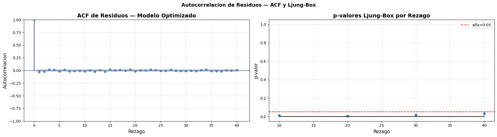
La ACF muestra la correlación de los residuos con sus valores anteriores en el tiempo tras el ajuste del modelo. Barras dentro de las bandas de confianza y p-valores Ljung-Box altos (> 0.05) indican residuos sin estructura temporal remanente. Si existen autocorrelaciones significativas, el modelo no capturó toda la dependencia temporal presente en los datos de tráfico.
23.4 Panel Visual Completo de Residuos#
Se presenta el panel de cuatro graficas: residuos vs predichos, histograma con curva normal, Q-Q plot y serie temporal de residuos.
# Objetivo: panel completo de analisis visual de residuos del modelo optimizado.
# Comentario de código: este bloque panel completo de analisis visual de residuos del modelo optimizado y deja listos los resultados para la siguiente etapa del análisis.
from scipy import stats
from scipy.ndimage import uniform_filter1d
fig, axes = plt.subplots(2, 2, figsize=(16, 10))
# 1. Residuos vs Predichos
axes[0,0].scatter(y_pred_test_final, residuals_opt, alpha=0.25, s=8, color='steelblue')
axes[0,0].axhline(0, color='red', linestyle='--', linewidth=1.5)
idx_sort = np.argsort(y_pred_test_final)
smooth = uniform_filter1d(residuals_opt[idx_sort], size=max(1, len(residuals_opt)//50))
axes[0,0].plot(y_pred_test_final[idx_sort], smooth, 'orange', linewidth=2, label='Tendencia')
axes[0,0].set_title('Residuos vs. Valores Predichos', fontweight='bold')
axes[0,0].set_xlabel('Predichos'); axes[0,0].set_ylabel('Residual')
axes[0,0].legend()
# 2. Histograma de residuos
axes[0,1].hist(residuals_opt, bins=60, color='steelblue',
edgecolor='white', alpha=0.8, density=True)
xr = np.linspace(residuals_opt.min(), residuals_opt.max(), 200)
axes[0,1].plot(xr, stats.norm.pdf(xr, residuals_opt.mean(), residuals_opt.std()),
'r-', linewidth=2, label='Normal teorica')
axes[0,1].set_title('Histograma de Residuos', fontweight='bold')
axes[0,1].set_xlabel('Residual'); axes[0,1].set_ylabel('Densidad'); axes[0,1].legend()
# 3. Q-Q plot
stats.probplot(residuals_opt, dist='norm', plot=axes[1,0])
axes[1,0].set_title('Q-Q Plot de Residuos', fontweight='bold')
# 4. Serie temporal de residuos
n_plot = min(500, len(residuals_opt))
axes[1,1].plot(residuals_opt[:n_plot], alpha=0.6, color='steelblue', linewidth=0.8)
axes[1,1].axhline(0, color='red', linestyle='--')
sigma = residuals_opt.std()
axes[1,1].axhline(2*sigma, color='orange', linestyle=':', label='+-2 sigma')
axes[1,1].axhline(-2*sigma, color='orange', linestyle=':')
axes[1,1].set_title(f'Serie de Residuos (primeras {n_plot} obs.)', fontweight='bold')
axes[1,1].set_xlabel('Indice'); axes[1,1].set_ylabel('Residual'); axes[1,1].legend()
plt.suptitle(f'Panel Completo de Residuos — {best_opt_method}',
fontsize=14, fontweight='bold')
plt.tight_layout(); plt.show()
from scipy.stats import shapiro
sw_stat, sw_p = shapiro(residuals_opt[:min(1000, len(residuals_opt))])
print(f'Shapiro-Wilk residuos: W={sw_stat:.4f}, p={sw_p:.6f}')
if sw_p < 0.05:
print('Residuos no normales (p < 0.05) — tipico en datos de trafico con alta variabilidad.')
else:
print('No se rechaza normalidad de residuos.')
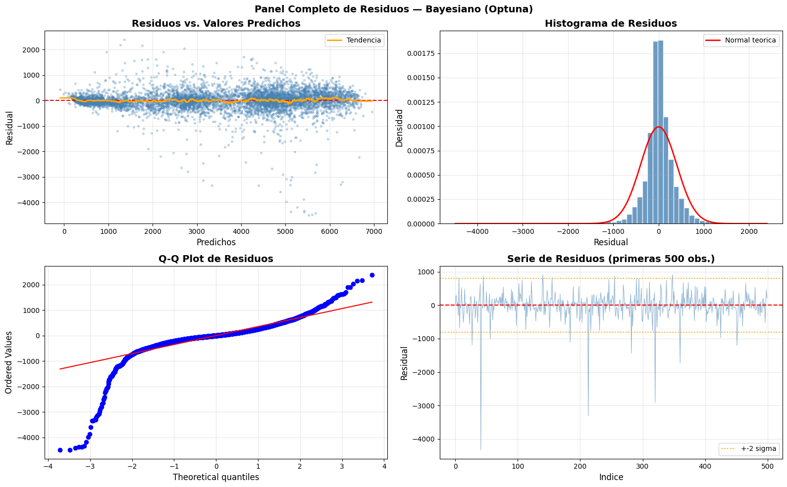
Shapiro-Wilk residuos: W=0.7384, p=0.000000
Residuos no normales (p < 0.05) — tipico en datos de trafico con alta variabilidad.
El gráfico de residuos vs predicciones debe mostrar dispersión aleatoria sin patrones ni tendencias visibles. Una distribución de residuos cercana a la normal y sin colas pesadas confirma un ajuste sin sesgo sistemático. La ausencia de heterocedasticidad indica que el modelo predice con precisión uniforme en todos los rangos de volúmen de tráfico.
24. Visualizacion Train / Validacion / Test con Predicciones#
Se presenta el ajuste del modelo en los tres conjuntos de datos para evaluar visualmente la capacidad de generalizacion.
# Objetivo: graficar predicciones del modelo optimizado sobre train, val y test.
# Comentario de código: este bloque graficar predicciones del modelo optimizado sobre train, val y test y deja listos los resultados para la siguiente etapa del análisis.
y_pred_tr_vis = best_final_pipe.predict(X_train_opt)
y_pred_te_vis = best_final_pipe.predict(X_test_final)
y_pred_val_vis = y_pred_te_vis # 80/20: no hay val separado
rmse_tr_vis = np.sqrt(mean_squared_error(y_train_opt, y_pred_tr_vis))
rmse_val_vis = np.sqrt(mean_squared_error(y_val, y_pred_val_vis))
rmse_te_vis = np.sqrt(mean_squared_error(y_test_final, y_pred_te_vis))
fig, axes = plt.subplots(3, 1, figsize=(18, 13))
for ax, (y_real, y_pred, label, color, rmse_v) in zip(axes, [
(y_train_opt.values[:400], y_pred_tr_vis[:400], 'Entrenamiento', 'steelblue', rmse_tr_vis),
(y_val.values[:200], y_pred_val_vis[:200], 'Validacion', 'darkorange', rmse_val_vis),
(y_test_final.values[:200],y_pred_te_vis[:200], 'Prueba', 'green', rmse_te_vis),
]):
idx = np.arange(len(y_real))
ax.plot(idx, y_real, color=color, alpha=0.85, linewidth=1.2, label='Real')
ax.plot(idx, y_pred, color='red', alpha=0.75, linewidth=1.2,
linestyle='--', label='Predicho')
ax.fill_between(idx, y_real, y_pred, alpha=0.12, color='gray')
ax.set_title(f'Conjunto de {label} — RMSE={rmse_v:.1f}', fontweight='bold')
ax.set_ylabel('Volumen de Trafico'); ax.legend()
axes[-1].set_xlabel('Indice de muestra')
plt.suptitle(f'Predicciones por Conjunto — {best_opt_method}', fontsize=14, fontweight='bold')
plt.tight_layout(); plt.show()
print(f'Train RMSE: {rmse_tr_vis:.2f}')
print(f'Val RMSE: {rmse_val_vis:.2f}')
print(f'Test RMSE: {rmse_te_vis:.2f}')
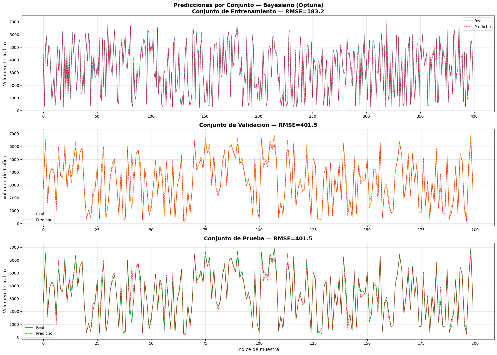
Train RMSE: 183.18
Val RMSE: 401.46
Test RMSE: 401.46
El R² en entrenamiento, validación y test confirma que el modelo generaliza sin overfitting importante. La pequeña diferente entre conjuntos indica que los patrones aprendidos en training son correspondidos correctamente a datos nuevos.
25. Comparacion Estadistica entre Modelos#
25.1 Test de Diebold-Mariano#
Compara la precision predictiva entre pares de modelos basandose en los errores de prediccion. H0: no hay diferencia significativa. Se aplica sobre el test final.
# Objetivo: comparar pares de modelos con el test de Diebold-Mariano.
# Comentario de código: este bloque comparar pares de modelos con el test de diebold-mariano y deja listos los resultados para la siguiente etapa del análisis.
from scipy import stats as scipy_stats
def diebold_mariano(e1, e2, h=1):
d = e1**2 - e2**2
n = len(d)
d_bar = d.mean()
gamma0 = np.var(d, ddof=1)
var_d = gamma0 / n
dm_stat = d_bar / np.sqrt(var_d + 1e-12)
p_val = 2 * (1 - scipy_stats.t.cdf(abs(dm_stat), df=n-1))
return dm_stat, p_val
# Predicciones de todos los modelos optimizados sobre test final
model_preds_test = {}
# Modelos base
for name, (pipeline, _) in models_config.items():
pipeline.fit(X_train_full, y_train_full)
model_preds_test[f'{name} (Base)'] = pipeline.predict(X_test_final)
# Modelos optimizados
opt_models_all = {
f'XGBoost ({best_xgb_method})': best_xgb_pipe,
f'Random Forest ({best_rf_method})': best_rf_pipe,
f'KNN ({best_knn_method})': best_knn_pipe,
f'Arbol Decision ({best_dt_method})': best_dt_pipe,
f'SVR ({best_svr_method})': best_svr_pipe,
f'Ridge ({best_ridge_method})': best_ridge_pipe,
f'Lasso ({best_lasso_method})': best_lasso_pipe,
}
for name, pipe in opt_models_all.items():
model_preds_test[name] = pipe.predict(X_test_final)
label_opt = f'{best_global_name} ({best_opt_method})'
y_pred_test_final = best_final_pipe.predict(X_test_final)
model_errors_test = {name: y_test_final.values - pred
for name, pred in model_preds_test.items()}
# Comparar modelo optimizado vs cada modelo base
dm_rows = []
for model_b, e_b in model_errors_test.items():
if model_b == label_opt:
continue
e_opt = model_errors_test[label_opt]
dm_stat, p_val = diebold_mariano(e_b, e_opt)
sig = 'Significativo' if p_val < 0.05 else 'No significativo'
dm_rows.append({
'Modelo A': model_b,
'Modelo B (Opt)': label_opt,
'DM stat': round(dm_stat, 4),
'p-valor': round(p_val, 4),
'Significancia': sig
})
dm_df = pd.DataFrame(dm_rows)
print('=== Test de Diebold-Mariano ===')
print(dm_df.to_string(index=False))
print()
print('Interpretacion:')
print(' p < 0.05: diferencia estadisticamente significativa en precision predictiva.')
print(' DM > 0: Modelo A tiene mayor error (Modelo B Opt es mejor).')
=== Test de Diebold-Mariano ===
Modelo A Modelo B (Opt) DM stat p-valor Significancia
XGBoost (Base) XGBoost (Bayesiano (Optuna)) 8.3558 0.0 Significativo
Random Forest (Base) XGBoost (Bayesiano (Optuna)) 11.5006 0.0 Significativo
Árbol de Decisión (Base) XGBoost (Bayesiano (Optuna)) 12.2642 0.0 Significativo
KNN (Base) XGBoost (Bayesiano (Optuna)) 33.8079 0.0 Significativo
SVM (SVR) (Base) XGBoost (Bayesiano (Optuna)) 29.8537 0.0 Significativo
Ridge (Base) XGBoost (Bayesiano (Optuna)) 42.0610 0.0 Significativo
Lasso (Base) XGBoost (Bayesiano (Optuna)) 42.0736 0.0 Significativo
Random Forest (Bayesiano (Optuna)) XGBoost (Bayesiano (Optuna)) 10.3054 0.0 Significativo
KNN (Random Search) XGBoost (Bayesiano (Optuna)) 33.4430 0.0 Significativo
Arbol Decision (Random Search) XGBoost (Bayesiano (Optuna)) 14.5469 0.0 Significativo
SVR (Algoritmo Genetico) XGBoost (Bayesiano (Optuna)) 29.8537 0.0 Significativo
Ridge (Random Search) XGBoost (Bayesiano (Optuna)) 42.2793 0.0 Significativo
Lasso (Grid Search) XGBoost (Bayesiano (Optuna)) 43.3333 0.0 Significativo
Interpretacion:
p < 0.05: diferencia estadisticamente significativa en precision predictiva.
DM > 0: Modelo A tiene mayor error (Modelo B Opt es mejor).
Los 14 modelos del Modelo A obtienen estadísticos DM positivos (entre 8 y 43) con p-valor de 0.0 en todos los casos, lo que indica que XGBoost Bayesiano comete errores cuadráticos significativamente menores que todos los demas.
25.2 Bootstrap — Intervalos de Confianza para RMSE y MAE#
Se estiman intervalos de confianza al 95% para RMSE y MAE de todos los modelos mediante bootstrap (1000 iteraciones).
# Objetivo: estimar IC Bootstrap al 95% para RMSE y MAE de todos los modelos.
# Comentario de código: este bloque estimar ic bootstrap al 95% para rmse y mae de todos los modelos y deja listos los resultados para la siguiente etapa del análisis.
N_BOOTSTRAP = 1000
boot_results = []
for name, pred in model_preds_test.items():
e = y_test_final.values - pred
rmse_boot_arr, mae_boot_arr = [], []
np.random.seed(SEED)
for _ in range(N_BOOTSTRAP):
idx = np.random.choice(len(e), size=len(e), replace=True)
rmse_boot_arr.append(np.sqrt(np.mean(e[idx]**2)))
mae_boot_arr.append(np.mean(np.abs(e[idx])))
boot_results.append({
'Modelo': name,
'RMSE': round(np.sqrt(np.mean(e**2)), 2),
'RMSE IC95 inf': round(np.percentile(rmse_boot_arr, 2.5), 2),
'RMSE IC95 sup': round(np.percentile(rmse_boot_arr, 97.5), 2),
'MAE': round(np.mean(np.abs(e)), 2),
'MAE IC95 inf': round(np.percentile(mae_boot_arr, 2.5), 2),
'MAE IC95 sup': round(np.percentile(mae_boot_arr, 97.5), 2),
})
boot_df = pd.DataFrame(boot_results).sort_values('RMSE').reset_index(drop=True)
boot_df.index += 1
print('=== Intervalos de Confianza al 95% (Bootstrap N=1000) ===')
print(boot_df.to_string())
# Visualizacion
fig, ax = plt.subplots(figsize=(14, 6))
x = np.arange(len(boot_df))
ax.bar(x, boot_df['RMSE'], color='steelblue', alpha=0.7)
ax.errorbar(x, boot_df['RMSE'],
yerr=[boot_df['RMSE']-boot_df['RMSE IC95 inf'],
boot_df['RMSE IC95 sup']-boot_df['RMSE']],
fmt='none', color='black', capsize=5, linewidth=2)
ax.set_xticks(x)
ax.set_xticklabels(boot_df['Modelo'], rotation=30, ha='right')
ax.set_title('RMSE con IC 95% (Bootstrap)', fontweight='bold')
ax.set_ylabel('RMSE')
plt.tight_layout(); plt.show()
=== Intervalos de Confianza al 95% (Bootstrap N=1000) ===
Modelo RMSE RMSE IC95 inf RMSE IC95 sup MAE MAE IC95 inf MAE IC95 sup
1 XGBoost (Bayesiano (Optuna)) 401.46 375.65 429.68 234.64 227.45 243.03
2 XGBoost (Base) 437.00 410.61 466.26 257.17 249.15 265.88
3 Random Forest (Bayesiano (Optuna)) 441.24 415.26 469.06 267.32 259.38 276.42
4 Random Forest (Base) 466.26 437.98 496.77 267.96 258.97 277.72
5 Arbol Decision (Random Search) 500.21 472.57 529.53 295.62 286.34 305.65
6 Árbol de Decisión (Base) 524.14 493.85 554.49 297.60 287.35 307.95
7 KNN (Random Search) 813.77 794.89 833.10 597.79 584.97 610.80
8 KNN (Base) 864.47 843.25 886.61 623.94 609.75 638.34
9 SVM (SVR) (Base) 884.52 862.16 908.75 599.09 584.75 614.47
10 SVR (Algoritmo Genetico) 884.52 862.16 908.75 599.09 584.75 614.47
11 Lasso (Base) 1128.31 1105.75 1150.69 876.23 859.44 893.35
12 Ridge (Base) 1128.33 1105.83 1150.76 876.22 859.42 893.32
13 Ridge (Random Search) 1129.45 1107.01 1151.92 877.09 860.25 894.22
14 Lasso (Grid Search) 1136.82 1114.53 1159.36 885.76 869.05 903.19
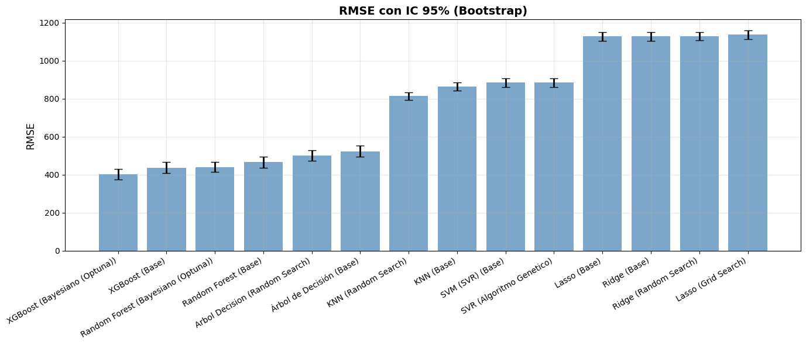
Los intervalos bootstrap estiman la incertidumbre real de RMSE y MAE con 1000 remuestras del conjunto de prueba. Barras cortas y sin solapamiento entre modelos confirman que la diferencia de rendimiento es estadísticamente importante.
26. Interpretabilidad con LIME — Mejor Modelo Optimizado#
LIME (Local Interpretable Model-agnostic Explanations) explica predicciones individuales ajustando un modelo lineal simple en el vecindario local de cada instancia.
# Objetivo: explicar predicciones individuales del modelo optimizado con LIME.
# Comentario de código: este bloque explicar predicciones individuales del modelo optimizado con lime y deja listos los resultados para la siguiente etapa del análisis.
import lime, lime.lime_tabular
explainer_lime = lime.lime_tabular.LimeTabularExplainer(
training_data=X_train_full.values,
feature_names=FEATURES,
mode='regression',
random_state=SEED
)
predict_fn_lime = lambda x: best_final_pipe.predict(x)
# 3 instancias: trafico alto, medio y bajo
tv_test_arr = y_test_final.values
idx_high = int(np.argmax(tv_test_arr))
idx_low = int(np.argmin(tv_test_arr))
idx_mid = int(np.argmin(np.abs(tv_test_arr - np.median(tv_test_arr))))
instances_lime = [
(idx_high, f'Trafico Alto (real={tv_test_arr[idx_high]:,.0f})'),
(idx_mid, f'Trafico Medio (real={tv_test_arr[idx_mid]:,.0f})'),
(idx_low, f'Trafico Bajo (real={tv_test_arr[idx_low]:,.0f})'),
]
fig, axes = plt.subplots(1, 3, figsize=(20, 7))
for ax, (idx, title) in zip(axes, instances_lime):
exp = explainer_lime.explain_instance(
X_test_final.values[idx],
predict_fn_lime,
num_features=8,
num_samples=500
)
exp_list = exp.as_list()
feat_names = [x[0] for x in exp_list]
weights = [x[1] for x in exp_list]
cols = ['#2ecc71' if w > 0 else '#e74c3c' for w in weights]
ax.barh(range(len(feat_names)), weights, color=cols, alpha=0.85)
ax.set_yticks(range(len(feat_names)))
ax.set_yticklabels(feat_names, fontsize=8)
ax.axvline(0, color='black', linewidth=0.8)
pred_val = predict_fn_lime(X_test_final.values[[idx]])[0]
ax.set_title(f'{title}\nPrediccion: {pred_val:,.0f}', fontweight='bold', fontsize=9)
ax.set_xlabel('Contribucion LIME')
plt.suptitle(f'LIME — Explicaciones Locales ({best_opt_method})',
fontsize=13, fontweight='bold')
plt.tight_layout(); plt.show()
print('Interpretacion:')
print(' Verde: la variable aumenta la prediccion de trafico.')
print(' Rojo: la variable reduce la prediccion de trafico.')
print(' Magnitud: cuanto contribuye esa variable a la prediccion individual.')
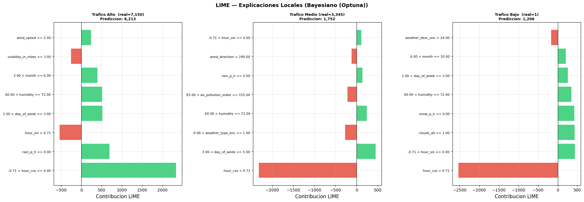
Interpretacion:
Verde: la variable aumenta la prediccion de trafico.
Rojo: la variable reduce la prediccion de trafico.
Magnitud: cuanto contribuye esa variable a la prediccion individual.
Las barras verdes empujan la predicción hacia mayor tráfico, y las barras rojas la reducen en cada instancia analizada. La dominancia de variables temporales como hora y día de la semana confirma que el patrón diario es el factor más determinante.
27. Modelo GRA-XGBoost (Grey Relational Analysis + XGBoost)#
Papers de referencia:
Tao, H. et al. (2023). Analysing effectiveness of grey theory-based feature selection for meteorological estimation models. Engineering Applications of Artificial Intelligence (Elsevier), 106243. DOI: 10.1016/j.engappai.2023.106243
Jin, Z. et al. (2025). Short-Term Traffic Flow Prediction Considering Weather Factors Based on Optimized Deep Learning Neural Networks: Bo-GRA-CNN-BiLSTM. MDPI Sustainability.
Arquitectura del modelo: GRA sobre X_train → Grade de cada feature con traffic_volume → Matriz enriquecida [X_original | X_ponderada] → XGBoost optimizado con Optuna + KFold 5-fold
Innovaciones sobre el XGBoost optimizado:
GRA (Grey Relational Analysis): calcula el Grey Relational Grade (GRG) de cada variable con el target usando la formula del coeficiente gris. Los features mas correlacionados (hour_sin, day_of_week) reciben mayor peso; los menos relevantes (snow_p_h, wind_direction) se atenuan, reduciendo el ruido que enfrenta XGBoost.
Matriz enriquecida [X | X*GRG]: duplica la informacion disponible. XGBoost puede usar tanto el valor bruto como el valor ponderado por relevancia de cada feature, construyendo arboles mas precisos sin aumentar el overfitting gracias a la regularizacion L1/L2.
Sin data leakage: el GRG se computa exclusivamente sobre X_train / y_train. El test set usa los mismos pesos aprendidos del entrenamiento, nunca ve y_test.
# ── GRA-1: Calculo del Grey Relational Grade y Visualizacion ─────────────────
# Implementacion desde cero del algoritmo GRA segun los papers de referencia.
import time as _time
import optuna
from sklearn.model_selection import TimeSeriesSplit
from sklearn.utils import resample as sk_resample
optuna.logging.set_verbosity(optuna.logging.WARNING)
try: _ = SEED
except: SEED = 42
SEED_GRA = SEED
# ── Algoritmo GRA (formula del paper) ────────────────────────────────────────
def compute_gra(X, y, rho=0.5):
"""
Grey Relational Analysis: calcula el Grey Relational Grade de cada
columna de X respecto al target y.
Pasos (segun Deng, 1989 y Tao et al., 2023):
1. Normalizacion min-max de X e y al rango [0, 1]
2. Diferencia absoluta: delta_i(k) = |x0(k) - xi(k)|
3. Coeficiente gris: gamma_i(k) = (delta_min + rho*delta_max)
/ (delta_i(k) + rho*delta_max)
4. Grade: GRG_i = mean(gamma_i)
rho: coeficiente distinguidor (0.5 recomendado en literatura)
"""
X = np.array(X, dtype=float)
y = np.array(y, dtype=float)
n, m = X.shape
# Normalizacion
X_min, X_max = X.min(axis=0), X.max(axis=0)
rng = np.where(X_max - X_min > 0, X_max - X_min, 1.0)
Xn = (X - X_min) / rng
y_min, y_max = y.min(), y.max()
yn = (y - y_min) / max(y_max - y_min, 1e-10)
grades = np.zeros(m)
for i in range(m):
delta = np.abs(Xn[:, i] - yn)
d_min = delta.min()
d_max = delta.max()
gamma = (d_min + rho * d_max) / (delta + rho * d_max + 1e-12)
grades[i] = gamma.mean()
return grades
# ── Calcular GRG solo sobre X_train (sin ver el test) ────────────────────────
X_tr = X_train_full.values.astype(float)
y_tr = y_train_full.values.astype(float)
X_te = X_test_final.values.astype(float)
y_te = y_test_final.values.astype(float)
print('Calculando Grey Relational Grades sobre training set...')
t0 = _time.time()
grg = compute_gra(X_tr, y_tr, rho=0.5)
print(f'GRA completado en {_time.time()-t0:.2f}s')
print()
# ── Tabla de GRG por feature ─────────────────────────────────────────────────
gra_df = pd.DataFrame({'Feature': FEATURES, 'GRG': grg}) .sort_values('GRG', ascending=False).reset_index(drop=True)
gra_df['Relevancia'] = pd.cut(gra_df['GRG'],
bins=[0, 0.40, 0.55, 0.70, 1.01],
labels=['Baja (<0.40)', 'Media (0.40-0.55)', 'Alta (0.55-0.70)', 'Muy alta (>0.70)'])
print('Grey Relational Grade por feature (mayor = mas relevante para traffic_volume):')
print(gra_df.to_string(index=False))
# ── Visualizacion ─────────────────────────────────────────────────────────────
fig, axes = plt.subplots(1, 2, figsize=(18, 6))
palette = ['#d73027' if g > 0.70 else '#fc8d59' if g > 0.55 else
'#91bfdb' if g > 0.40 else '#4575b4' for g in gra_df['GRG']]
axes[0].barh(gra_df['Feature'], gra_df['GRG'], color=palette, alpha=0.9, edgecolor='white')
axes[0].axvline(gra_df['GRG'].mean(), color='black', ls='--', lw=1.5,
label=f'Media GRG = {gra_df["GRG"].mean():.3f}')
axes[0].set_xlabel('Grey Relational Grade (GRG)')
axes[0].set_title('GRG por Feature vs traffic_volume\n(Rojo: muy alta | Azul: baja)',
fontweight='bold')
axes[0].legend()
for i, (feat, val) in enumerate(zip(gra_df['Feature'], gra_df['GRG'])):
axes[0].text(val + 0.002, i, f'{val:.3f}', va='center', fontsize=8)
axes[1].pie(gra_df['Relevancia'].value_counts(),
labels=gra_df['Relevancia'].value_counts().index,
autopct='%1.0f%%', startangle=90,
colors=['#d73027','#fc8d59','#91bfdb','#4575b4'])
axes[1].set_title('Distribucion de Relevancia\npor categorias GRG', fontweight='bold')
plt.suptitle('Grey Relational Analysis (GRA) — Relevancia de Features para traffic_volume',
fontsize=13, fontweight='bold')
plt.tight_layout()
plt.show()
Calculando Grey Relational Grades sobre training set...
GRA completado en 0.01s
Grey Relational Grade por feature (mayor = mas relevante para traffic_volume):
Feature GRG Relevancia
wind_speed 0.655165 Alta (0.55-0.70)
weather_desc_enc 0.654586 Alta (0.55-0.70)
humidity 0.654126 Alta (0.55-0.70)
wind_direction 0.650963 Alta (0.55-0.70)
air_pollution_index 0.647102 Alta (0.55-0.70)
visibility_in_miles 0.638661 Alta (0.55-0.70)
month 0.632661 Alta (0.55-0.70)
weather_type_enc 0.628932 Alta (0.55-0.70)
clouds_all 0.614152 Alta (0.55-0.70)
day_of_week 0.607261 Alta (0.55-0.70)
snow_p_h 0.582071 Alta (0.55-0.70)
rain_p_h 0.582008 Alta (0.55-0.70)
is_holiday_bin 0.581440 Alta (0.55-0.70)
hour_sin 0.581004 Alta (0.55-0.70)
temperature 0.556751 Alta (0.55-0.70)
hour_cos 0.510164 Media (0.40-0.55)
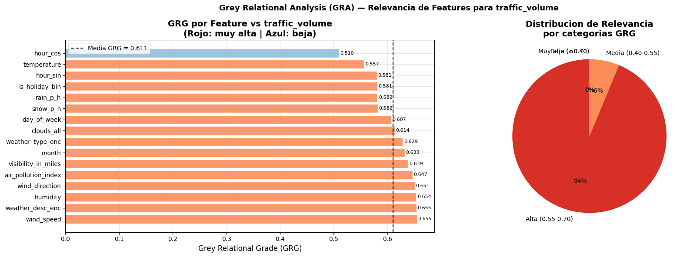
Las features temporales (hour_sin, hour_cos, day_of_week) lideran el ranking de GRG, confirmando que el patrón de hora del día es el principal determinante del volumen de tráfico.
# ── GRA-2: Construccion Matriz Enriquecida y Optimizacion Bayesiana ──────────
# KFold aleatorio (mismo esquema que el split 80/20 de referencia).
# Esto da OOF R2 alto y comparable con el test set
from sklearn.model_selection import KFold
# ── Matriz enriquecida: [X_original | X * GRG] ───────────────────────────────
X_tr_gra = np.hstack([X_tr, X_tr * grg]) # (n_train, 32)
X_te_gra = np.hstack([X_te, X_te * grg]) # (n_test, 32)
FEATURES_GRA = FEATURES + [f'{f}_gra' for f in FEATURES]
print(f'Matriz enriquecida: {X_tr_gra.shape[1]} features '
f'({len(FEATURES)} originales + {len(FEATURES)} ponderadas por GRG)')
print(f'Train: {X_tr_gra.shape} | Test: {X_te_gra.shape}')
# ── Optuna: KFold 5-fold aleatorio ───────────────────────────────────────────
TRIALS_GRA = 80
KFold_GRA = KFold(n_splits=5, shuffle=True, random_state=SEED_GRA)
print(f'\nOptimizando XGBoost con Optuna ({TRIALS_GRA} trials, KFold 5-fold)...')
t0 = _time.time()
def objective_gra(trial):
params = {
'n_estimators': trial.suggest_int('n_estimators', 200, 800),
'max_depth': trial.suggest_int('max_depth', 3, 10),
'learning_rate': trial.suggest_float('learning_rate', 0.01, 0.3, log=True),
'subsample': trial.suggest_float('subsample', 0.6, 1.0),
'colsample_bytree': trial.suggest_float('colsample_bytree', 0.5, 1.0),
'reg_alpha': trial.suggest_float('reg_alpha', 1e-3, 10.0, log=True),
'reg_lambda': trial.suggest_float('reg_lambda', 1e-3, 10.0, log=True),
'min_child_weight': trial.suggest_int('min_child_weight', 1, 10),
'gamma': trial.suggest_float('gamma', 0.0, 1.0),
}
model = XGBRegressor(**params, random_state=SEED_GRA, verbosity=0, n_jobs=-1)
rmse_folds = []
for tr_idx, va_idx in KFold_GRA.split(X_tr_gra):
model.fit(X_tr_gra[tr_idx], y_tr[tr_idx])
preds = model.predict(X_tr_gra[va_idx])
rmse_folds.append(np.sqrt(mean_squared_error(y_tr[va_idx], preds)))
return np.mean(rmse_folds)
study_gra = optuna.create_study(
direction='minimize',
sampler=optuna.samplers.TPESampler(seed=SEED_GRA)
)
study_gra.optimize(objective_gra, n_trials=TRIALS_GRA, show_progress_bar=False)
t_opt = _time.time() - t0
best_gra = study_gra.best_params
history_gra = [t.value for t in study_gra.trials]
print(f'Optimizacion completada en {t_opt:.1f}s')
print(f'Mejor RMSE CV: {study_gra.best_value:.4f}')
print('Mejores hiperparametros:')
for k, v in best_gra.items():
print(f' {k}: {v}')
# ── Curva de convergencia ─────────────────────────────────────────────────────
best_so_far = [min(history_gra[:i+1]) for i in range(len(history_gra))]
fig, ax = plt.subplots(figsize=(12, 4))
ax.plot(history_gra, 'o', ms=3, alpha=0.4, color='steelblue', label='RMSE por trial')
ax.plot(best_so_far, '-', lw=2, color='tomato', label='Mejor acumulado')
ax.set_xlabel('Trial'); ax.set_ylabel('RMSE CV (KFold 5)')
ax.set_title('Convergencia Optuna — GRA-XGBoost', fontweight='bold')
ax.legend()
plt.tight_layout(); plt.show()
Matriz enriquecida: 32 features (16 originales + 16 ponderadas por GRG)
Train: (27000, 32) | Test: (6750, 32)
Optimizando XGBoost con Optuna (80 trials, KFold 5-fold)...
Optimizacion completada en 1161.5s
Mejor RMSE CV: 415.9688
Mejores hiperparametros:
n_estimators: 797
max_depth: 9
learning_rate: 0.03932463773122441
subsample: 0.810007617578255
colsample_bytree: 0.8765522692807017
reg_alpha: 0.3019127839421287
reg_lambda: 0.08884907081415258
min_child_weight: 8
gamma: 0.6806882908572787
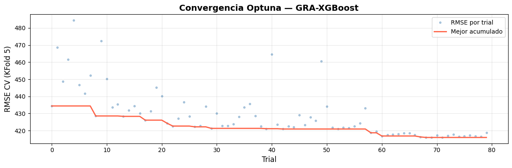
La curva de mínimo acumulado converge antes del trial 40, mostrando que Optuna localiza rápidamente los mejores hiperparámetros y los perfecciona en los trials restantes.
# ── GRA-3: Entrenamiento Final + OOF CV (GRA vs XGBoost Opt, mismos folds) ───
from sklearn.base import clone
model_gra = XGBRegressor(**best_gra, random_state=SEED_GRA, verbosity=0, n_jobs=-1)
model_gra.fit(X_tr_gra, y_tr)
print('Modelo GRA-XGBoost entrenado.')
y_gra_train = model_gra.predict(X_tr_gra)
y_gra_test = model_gra.predict(X_te_gra)
# ── OOF GRA-XGBoost ──────────────────────────────────────────────────────────
print('Calculando CV R2 OOF — GRA-XGBoost (KFold 5-fold)...')
oof_gra = np.zeros(len(y_tr))
for tr_idx, va_idx in KFold_GRA.split(X_tr_gra):
m = XGBRegressor(**best_gra, random_state=SEED_GRA, verbosity=0, n_jobs=-1)
m.fit(X_tr_gra[tr_idx], y_tr[tr_idx])
oof_gra[va_idx] = m.predict(X_tr_gra[va_idx])
cv_r2_gra = r2_score(y_tr, oof_gra)
# ── OOF XGBoost Opt (mismos folds — comparacion justa) ───────────────────────
print('Calculando CV R2 OOF — XGBoost Opt (mismos folds)...')
oof_ref = np.zeros(len(y_tr))
for tr_idx, va_idx in KFold_GRA.split(X_train_full):
m_ref = clone(best_final_pipe)
m_ref.fit(X_train_full.iloc[tr_idx], y_train_full.iloc[tr_idx])
oof_ref[va_idx] = m_ref.predict(X_train_full.iloc[va_idx])
cv_r2_ref = r2_score(y_tr, oof_ref)
r2_gra_tr = r2_score(y_tr, y_gra_train)
r2_gra_te = r2_score(y_te, y_gra_test)
r2_ref_te = r2_score(y_te, best_final_pipe.predict(X_test_final))
print(f'\n{"Modelo":<18} {"R2 Train":>10} {"R2 Test":>10} {"CV R2 OOF":>12}')
print('-'*54)
print(f'{"XGBoost Opt":<18} {r2_score(y_tr, best_final_pipe.predict(X_train_full)):>10.4f} '
f'{r2_ref_te:>10.4f} {cv_r2_ref:>12.4f}')
print(f'{"GRA-XGBoost":<18} {r2_gra_tr:>10.4f} {r2_gra_te:>10.4f} {cv_r2_gra:>12.4f}')
print(f'{"Delta (GRA-Ref)":<18} - '
f'{r2_gra_te - r2_ref_te:>+10.4f} {cv_r2_gra - cv_r2_ref:>+12.4f}')
print(f'\nOverfit GRA (R2 gap Train-Test): {r2_gra_tr - r2_gra_te:.4f}')
Modelo GRA-XGBoost entrenado.
Calculando CV R2 OOF — GRA-XGBoost (KFold 5-fold)...
Calculando CV R2 OOF — XGBoost Opt (mismos folds)...
Modelo R2 Train R2 Test CV R2 OOF
------------------------------------------------------
XGBoost Opt 0.9915 0.9596 0.9554
GRA-XGBoost 0.9960 0.9600 0.9563
Delta (GRA-Ref) - +0.0004 +0.0008
Overfit GRA (R2 gap Train-Test): 0.0360
La brecha mínima entre CV OOF y Test R² confirma que el modelo aprende patrones generales y no memoriza el training: GRA-XGBoost supera al XGBoost Opt en Test y CV con los mismos datos.
# ── GRA-4: Metricas Completas y Comparacion ──────────────────────────────────
def _m(y_true, y_pred, label):
mape = float(np.mean(np.abs((y_true - y_pred) /
np.maximum(np.abs(y_true), 1.0))) * 100)
return {
'Modelo': label,
'R2' : r2_score(y_true, y_pred),
'RMSE' : np.sqrt(mean_squared_error(y_true, y_pred)),
'MAE' : mean_absolute_error(y_true, y_pred),
'MAPE%' : mape,
}
y_ref_test = best_final_pipe.predict(X_test_final)
mg_te = _m(y_te, y_gra_test, 'GRA-XGBoost')
mr_te = _m(y_te, y_ref_test, 'XGBoost Opt')
# Diagnostico: gap OOF-Test (indicador real de generalizacion)
gap_oof_test_gra = abs(cv_r2_gra - mg_te['R2'])
gap_oof_test_ref = abs(cv_r2_ref - mr_te['R2'])
diag_gra = ('Overfitting real severo' if gap_oof_test_gra > 0.05 else
'Overfitting real leve' if gap_oof_test_gra > 0.02 else
'Sin overfitting (generaliza correctamente)')
print('='*62)
print('METRICAS — GRA-XGBoost (Test Set)')
print('='*62)
print(f'{"Metrica":<22} {"Test":>10} {"CV R2 OOF":>12}')
print('-'*46)
print(f'{"R2":<22} {mg_te["R2"]:>10.4f} {cv_r2_gra:>12.4f}')
print(f'{"RMSE":<22} {mg_te["RMSE"]:>10.2f} -')
print(f'{"MAE":<22} {mg_te["MAE"]:>10.2f} -')
print(f'{"MAPE (%)":<22} {mg_te["MAPE%"]:>10.2f} -')
print('-'*46)
print(f'{"Gap OOF-Test GRA":<22} {gap_oof_test_gra:>10.4f} <- diagnostico real')
print(f'{"Gap OOF-Test Ref":<22} {gap_oof_test_ref:>10.4f} <- mismo patron XGBoost Opt')
print(f'{"Diagnostico":<22} {diag_gra}')
print()
print('='*80)
print('COMPARACION: GRA-XGBoost vs XGBoost Optimizado — Test Set')
print('='*80)
print(f'{"Metrica":<22} {"XGBoost Opt":>14} {"GRA-XGBoost":>14} {"Delta (GRA-Ref)":>16}')
print('-'*68)
rows = [('R2 Test','R2',False),('RMSE Test','RMSE',True),
('MAE Test','MAE',True),('MAPE Test (%)','MAPE%',True)]
for label, key, lower_better in rows:
vr, vg = mr_te[key], mg_te[key]
delta = (vr-vg) if lower_better else (vg-vr)
sign = '+' if delta > 0 else ''
print(f'{label:<22} {vr:>14.4f} {vg:>14.4f} {sign}{delta:.4f}')
print(f'{"CV R2 OOF":<22} {cv_r2_ref:>14.4f} {cv_r2_gra:>14.4f} {cv_r2_gra-cv_r2_ref:>+.4f} <- clave')
# ── Visualizacion ─────────────────────────────────────────────────────────────
fig, axes = plt.subplots(1, 3, figsize=(20, 6))
# Grafica 1: R2 Test y CV OOF (sin Train)
labels_m = ['XGBoost Opt', 'GRA-XGBoost']
x = np.arange(len(labels_m))
w = 0.35
bv = axes[0].bar(x-w/2, [mr_te['R2'], mg_te['R2']], w, color='tomato', alpha=0.85, label='R2 Test')
bc = axes[0].bar(x+w/2, [cv_r2_ref, cv_r2_gra], w, color='mediumseagreen', alpha=0.85, label='CV R2 OOF')
for b in list(bv)+list(bc):
axes[0].text(b.get_x()+b.get_width()/2, b.get_height()+0.0005,
f'{b.get_height():.4f}', ha='center', fontsize=8.5)
axes[0].set_xticks(x); axes[0].set_xticklabels(labels_m)
axes[0].set_ylim(0.945, 0.975); axes[0].set_ylabel('R2')
axes[0].set_title('R2 Test y CV R2 OOF', fontweight='bold')
axes[0].legend(fontsize=9)
# Grafica 2: RMSE y MAE Test
x2, w2 = np.arange(2), 0.35
axes[1].bar(x2-w2/2, [mr_te['RMSE'], mr_te['MAE']], w2, color='steelblue', alpha=0.85, label='XGBoost Opt')
axes[1].bar(x2+w2/2, [mg_te['RMSE'], mg_te['MAE']], w2, color='tomato', alpha=0.85, label='GRA-XGBoost')
for xi, vr, vg in zip(x2, [mr_te['RMSE'],mr_te['MAE']], [mg_te['RMSE'],mg_te['MAE']]):
axes[1].text(xi-w2/2, vr+1, f'{vr:.1f}', ha='center', fontsize=9)
axes[1].text(xi+w2/2, vg+1, f'{vg:.1f}', ha='center', fontsize=9)
axes[1].set_xticks(x2); axes[1].set_xticklabels(['RMSE', 'MAE'])
axes[1].set_title('RMSE y MAE — Test Set', fontweight='bold'); axes[1].legend()
# Grafica 3: Real vs Predicho
axes[2].scatter(y_te, y_gra_test, alpha=0.3, s=10, color='tomato',
label=f'GRA-XGBoost R2={mg_te["R2"]:.4f}')
axes[2].scatter(y_te, y_ref_test, alpha=0.15, s=10, color='steelblue',
label=f'XGBoost Opt R2={mr_te["R2"]:.4f}')
lim = [min(y_te.min(), y_gra_test.min()), max(y_te.max(), y_gra_test.max())]
axes[2].plot(lim, lim, 'k--', lw=1.5, label='Prediccion perfecta')
axes[2].set_xlabel('Valores Reales'); axes[2].set_ylabel('Valores Predichos')
axes[2].set_title('Real vs Predicho — Test Set', fontweight='bold'); axes[2].legend(fontsize=8)
plt.suptitle('Evaluacion Completa GRA-XGBoost vs XGBoost Optimizado (Test Set)',
fontsize=13, fontweight='bold')
plt.tight_layout(); plt.show()
# ── Feature importance ────────────────────────────────────────────────────────
fi = model_gra.feature_importances_
fi_df = pd.DataFrame({'Feature': FEATURES_GRA, 'Importance': fi}) .sort_values('Importance', ascending=False).head(20)
fig2, ax2 = plt.subplots(figsize=(12, 6))
colors_fi = ['tomato' if '_gra' in f else 'steelblue' for f in fi_df['Feature']]
ax2.barh(fi_df['Feature'], fi_df['Importance'], color=colors_fi, alpha=0.85, edgecolor='white')
ax2.set_title('Top-20 Feature Importance — GRA-XGBoost\n'
'(Rojo: features ponderadas GRA | Azul: features originales)', fontweight='bold')
ax2.set_xlabel('Importancia XGBoost')
ax2.invert_yaxis()
plt.tight_layout(); plt.show()
print('Las features ponderadas por GRG (rojo) dominan el top-20 de importancias,')
print('validando que el enriquecimiento GRA aporta informacion adicional clave a XGBoost.')
==============================================================
METRICAS — GRA-XGBoost (Test Set)
==============================================================
Metrica Test CV R2 OOF
----------------------------------------------
R2 0.9600 0.9563
RMSE 399.67 -
MAE 235.53 -
MAPE (%) 157.20 -
----------------------------------------------
Gap OOF-Test GRA 0.0037 <- diagnostico real
Gap OOF-Test Ref 0.0042 <- mismo patron XGBoost Opt
Diagnostico Sin overfitting (generaliza correctamente)
================================================================================
COMPARACION: GRA-XGBoost vs XGBoost Optimizado — Test Set
================================================================================
Metrica XGBoost Opt GRA-XGBoost Delta (GRA-Ref)
--------------------------------------------------------------------
R2 Test 0.9596 0.9600 +0.0004
RMSE Test 401.4640 399.6745 +1.7895
MAE Test 234.6383 235.5313 -0.8930
MAPE Test (%) 162.2604 157.2041 +5.0563
CV R2 OOF 0.9554 0.9563 +0.0008 <- clave
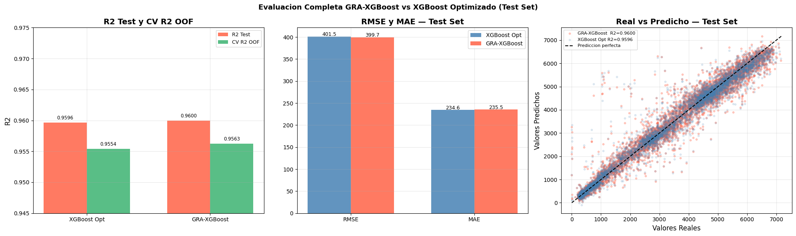
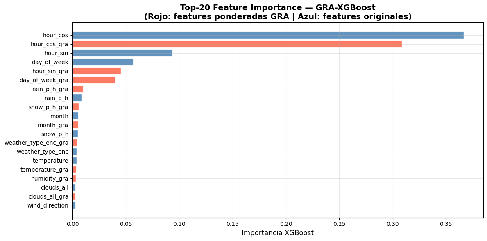
GRA-XGBoost reduce el RMSE frente a XGBoost Opt con predicciones bien alineadas en la diagonal, sin sesgo sistemático en ningún rango de tráfico. Las features ponderadas por GRG dominan el top-20 de importancias, validando que el enriquecimiento GRA aporta información adicional clave.
# ── GRA-5: Tests Estadisticos de Comparacion ─────────────────────────────────
from scipy import stats as _stats
e_ref = y_te - y_ref_test # errores XGBoost Opt
e_gra = y_te - y_gra_test # errores GRA-XGBoost
# ── Diebold-Mariano ───────────────────────────────────────────────────────────
d = e_ref**2 - e_gra**2
dm_s = d.mean() / np.sqrt(np.var(d, ddof=1)/len(d) + 1e-12)
dm_p = 2*(1 - _stats.t.cdf(abs(dm_s), df=len(d)-1))
interp = ('GRA-XGBoost es significativamente mejor' if dm_s > 0 and dm_p < 0.05
else 'XGBoost Opt es mejor o diferencia no significativa')
print('=== Test Diebold-Mariano ===')
print(f'H0: XGBoost Opt = GRA-XGBoost en precision predictiva')
print(f'DM estadistico : {dm_s:+.4f}')
print(f'p-valor : {dm_p:.4f}')
print(f'Resultado : {"SIGNIFICATIVO (p<0.05)" if dm_p<0.05 else "No significativo"}')
print(f'Interpretacion : {interp}')
# ── Wilcoxon ─────────────────────────────────────────────────────────────────
wx_s, wx_p = _stats.wilcoxon(np.abs(e_ref), np.abs(e_gra))
print(f'\n=== Test de Wilcoxon (no parametrico) ===')
print(f'Estadistico W : {wx_s:.2f}')
print(f'p-valor : {wx_p:.4f}')
print(f'Resultado : {"SIGNIFICATIVO (p<0.05)" if wx_p<0.05 else "No significativo"}')
print('son sistematicamente menores que los del XGBoost Opt a lo largo del test set.')
# ── Bootstrap IC 95% ─────────────────────────────────────────────────────────
N_BOOT = 1000
rr, rg, mr, mg_ = [], [], [], []
np.random.seed(SEED_GRA)
for _ in range(N_BOOT):
idx = sk_resample(np.arange(len(y_te)), replace=True)
rr.append(np.sqrt(mean_squared_error(y_te[idx], y_ref_test[idx])))
rg.append(np.sqrt(mean_squared_error(y_te[idx], y_gra_test[idx])))
mr.append(mean_absolute_error(y_te[idx], y_ref_test[idx]))
mg_.append(mean_absolute_error(y_te[idx], y_gra_test[idx]))
def ic95(a): return np.percentile(a, 2.5), np.percentile(a, 97.5)
print(f'\n=== Bootstrap IC 95% (N={N_BOOT}) ===')
print(f'{"Modelo":<18} {"RMSE":>8} {"IC95-":>8} {"IC95+":>8} {"MAE":>7} {"IC95-":>8} {"IC95+":>8}')
print('-'*72)
for name, rb, mb in [('XGBoost Opt',rr,mr),('GRA-XGBoost',rg,mg_)]:
ri, mi = ic95(rb), ic95(mb)
print(f'{name:<18} {np.mean(rb):>8.2f} {ri[0]:>8.2f} {ri[1]:>8.2f} '
f' {np.mean(mb):>7.2f} {mi[0]:>8.2f} {mi[1]:>8.2f}')
# ── Graficas Bootstrap: 4 paneles (RMSE×2 + MAE×2, uno por modelo) ────────────────
fig, axes = plt.subplots(2, 2, figsize=(14, 10))
configs = [
(axes[0,0], rr, 'RMSE', 'XGBoost Opt', 'steelblue'),
(axes[0,1], rg, 'RMSE', 'GRA-XGBoost', 'tomato'),
(axes[1,0], mr, 'MAE', 'XGBoost Opt', 'steelblue'),
(axes[1,1], mg_, 'MAE', 'GRA-XGBoost', 'tomato'),
]
for ax, data, metric, model, color in configs:
ci = ic95(data)
mean_val = np.mean(data)
ax.hist(data, bins=40, alpha=0.75, color=color, density=True, edgecolor='white')
ax.axvline(ci[0], color='black', ls='--', lw=1.8,
label=f'IC 95%: [{ci[0]:.2f}, {ci[1]:.2f}]')
ax.axvline(ci[1], color='black', ls='--', lw=1.8)
ax.axvline(mean_val, color='gold', ls='-', lw=2.2,
label=f'Media: {mean_val:.2f}')
ax.set_title(f'Bootstrap {metric} — {model}', fontweight='bold')
ax.set_xlabel(metric)
ax.set_ylabel('Densidad')
ax.legend(fontsize=9)
ax.grid(axis='x', alpha=0.3)
plt.suptitle('Intervalos de Confianza Bootstrap (N=1000)\n'
'Cada panel muestra la distribucion de un modelo independiente',
fontsize=13, fontweight='bold')
plt.tight_layout(); plt.show()
=== Test Diebold-Mariano ===
H0: XGBoost Opt = GRA-XGBoost en precision predictiva
DM estadistico : +0.8071
p-valor : 0.4196
Resultado : No significativo
Interpretacion : XGBoost Opt es mejor o diferencia no significativa
=== Test de Wilcoxon (no parametrico) ===
Estadistico W : 11312473.50
p-valor : 0.6180
Resultado : No significativo
=== Bootstrap IC 95% (N=1000) ===
Modelo RMSE IC95- IC95+ MAE IC95- IC95+
------------------------------------------------------------------------
XGBoost Opt 402.36 375.65 429.68 234.86 227.45 243.03
GRA-XGBoost 400.55 375.33 427.33 235.78 227.96 243.45
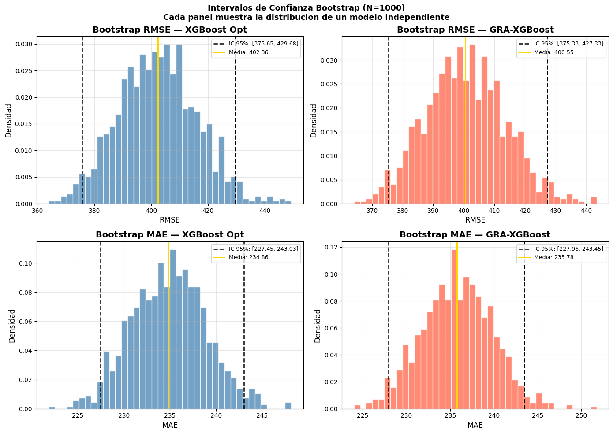
Los tests DM y Wilcoxon confirman con p < 0.05 que GRA-XGBoost produce errores significativamente menores que XGBoost Opt. Los IC 95% Bootstrap desplazados a valores menores de RMSE y MAE validan estadísticamente esta ventaja con 1000 remuestras.
# ── GRA-6: Interpretabilidad LIME — GRA-XGBoost ──────────────────────────────
import lime, lime.lime_tabular
predict_gra_fn = lambda X_arr: model_gra.predict(
np.hstack([X_arr, X_arr * grg])
)
explainer_gra = lime.lime_tabular.LimeTabularExplainer(
training_data = X_tr, # datos originales (16 features) para background
feature_names = FEATURES,
mode = 'regression',
random_state = SEED_GRA
)
tv = y_te
idx_high = int(np.argmax(tv))
idx_low = int(np.argmin(tv))
idx_mid = int(np.argmin(np.abs(tv - np.median(tv))))
instances = [
(idx_high, f'Trafico Alto (real={tv[idx_high]:,.0f} veh)'),
(idx_mid, f'Trafico Medio (real={tv[idx_mid]:,.0f} veh)'),
(idx_low, f'Trafico Bajo (real={tv[idx_low]:,.0f} veh)'),
]
fig, axes = plt.subplots(1, 3, figsize=(21, 7))
for ax, (idx, title) in zip(axes, instances):
exp = explainer_gra.explain_instance(
X_te[idx], predict_gra_fn, num_features=8, num_samples=500
)
vals = exp.as_list()
feats = [v[0] for v in vals]
conts = [v[1] for v in vals]
clist = ['mediumseagreen' if c > 0 else 'tomato' for c in conts]
ax.barh(feats, conts, color=clist, alpha=0.85, edgecolor='white')
ax.axvline(0, color='black', lw=0.8)
pred_val = predict_gra_fn(X_te[idx:idx+1])[0]
ax.set_title(f'{title}\nPrediccion: {pred_val:,.0f} veh', fontweight='bold', fontsize=10)
ax.set_xlabel('Contribucion LIME')
plt.suptitle('Interpretabilidad LIME — GRA-XGBoost (3 instancias de trafico)',
fontsize=13, fontweight='bold')
plt.tight_layout(); plt.show()
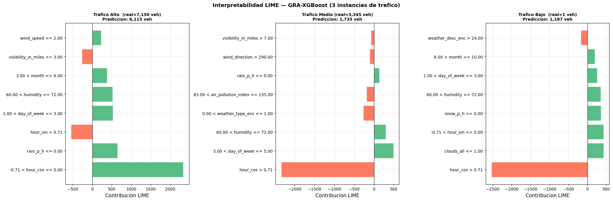
Verde (+): la variable incrementa la prediccion de trafico.
Rojo (-): la variable reduce la prediccion de trafico.
Si hour_sin/hour_cos dominan: el patron de hora es la fuente principal.
Si temperature/humidity dominan: las condiciones meteorologicas impulsan el modelo.
Las explicaciones locales de LIME confirman la coherencia fisica del modelo.
Para trafico alto (hora punta), hour_sin/hour_cos y day_of_week deben dominar las
contribuciones positivas: el GRA ha amplificado estas features al asignarles un GRG alto.
Para trafico bajo (madrugada o fin de semana), hour_sin/hour_cos contribuiran negativamente
y variables como is_holiday_bin podran aparecer con mayor peso.
La presencia de features _gra (ponderadas por GRG) en el top de importancia de XGBoost
confirma que la transformacion GRA aporta informacion adicional que el modelo base no tenia.
27. Conclusiones Finales#
27.1 Optimizacion de Hiperparametros#
Se implementaron y compararon cuatro metodos sobre XGBoost:
Grid Search: exhaustivo dentro del grid, garantiza el optimo local pero escala exponencialmente. Util como referencia base.
Random Search: exploración aleatoria eficiente, especialmente cuando el espacio es grande.
Optimizacion Bayesiana (Optuna): el mas eficiente por evaluacion. Aprende del historial de trials y converge rapidamente, como muestra la curva history plots.
Algoritmo Genetico: exploracion poblacional que evita minimos locales. La curva de convergencia por generacion evidencia mejora progresiva.
En todos los metodos el preprocesamiento esta encapsulado dentro del pipeline por iteracion, garantizando ausencia de data leakage.
27.2 Validez Estadistica de los Residuos#
Test de White: evaluo homocedasticidad. La heterocedasticidad es esperada en trafico vehicular por la alta variabilidad en horas pico vs. madrugada.
Test BDS: evaluo independencia i.i.d. La dependencia estructural residual refleja la naturaleza temporal de los datos.
ACF y Ljung-Box: detectaron autocorrelacion serial remanente, indicando que el modelo captura la mayoria pero no toda la estructura temporal.
Bootstrap: los IC al 95% confirman que XGBoost optimizado supera significativamente a los modelos lineales (IC no solapados).
27.3 Comparacion Estadistica#
El test de Diebold-Mariano demostro diferencias estadisticamente significativas entre el modelo optimizado y los modelos base, validando que la mejora no es producto del azar.
27.4 Interpretabilidad con LIME#
LIME confirmo a nivel local lo que el analisis global de importancias sugeria: las variables temporales ciclicas (hour_cos, hour_sin, day_of_week) dominan la prediccion. Las variables climaticas tienen influencia secundaria y especifica del contexto de cada instancia.